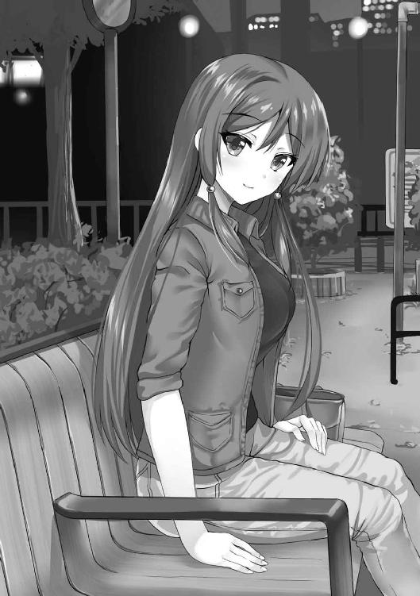

| うーちゃんの小箱 (角川スニーカー文庫) | |
| 和見俊樹 | |
| (2016) | |
うーちゃんの小箱
和見俊樹

角川スニーカー文庫
本作品の全部または一部を無断で複製、転載、配信、送信したり、ホームページ上に転載することを禁止します。また、本作品の内容を無断で改変、改ざん等を行うことも禁止します。
本作品購入時にご承諾いただいた規約により、有償・無償にかかわらず本作品を第三者に譲渡することはできません。
本作品を示すサムネイルなどのイメージ画像は、再ダウンロード時に予告なく変更される場合があります。
本作品は縦書きでレイアウトされています。
また、ご覧になるリーディングシステムにより、表示の差が認められることがあります。
上等なスーツで着飾って、テレビの中でしか見たことの無いようなホテルのパーティルームに俺はいた。今からつい十分ほど前のことである。
飾り付けられた扉の先には、映画館によく似た会場が用意されていた。
俺は指示されるがまま席に着き、矢継ぎ早に渡された名刺をもう一度見直しながら、裏表正しく革製のケースに収めていく。いちばん上は、『編集局長』様が妥当だろう。
その作業が終わると、近くのコンビニで買っておいたオレンジジュースを豚のように飲み干した。
足元で踏みつけられた袋に空のペットボトルを戻すと、隣に座っていた同じくスーツ姿の凛とした女に、俺は二度ほど肘で小突かれた。まるで映画上映前の落ち着きのないカップルのようだ、とも思った。
どうやら俺に何度か囁いた後のようだった。腰を曲げていた俺は振り返る。
「先生、スピーチに関してですが、当たり障りの無いもので結構です。これから読んでいただく読者へ向けてもそうですが、審査員への感謝の言葉も仰っていただけると、一層、受けはいいかと思います」
──先生。
そう、俺は先生だ。
これから歴々の時代を変えていくだろう。今の俺にはその可能性が託されている。
だがこれまでの人生で、持ち上げられた記憶の一切無い俺は、『先生』という呼称にまだ慣れていなかった。
しかし悪い気はしない。その呼び方が、俺をただの高校生ではなく、一人の創作家として見てくれていることを実感させる。
彼女は担当の榎並。
そして俺は、生まれたての漫画家だった。
『マイペースオタク見習い、うーちゃんのほのぼの四コマ漫画』
こんなタイトルの、これまでのプライドをかなぐり捨てた作品がある。著者はまだ世間でもほとんど知られていない、氷見仁平先生、こと俺だ。
タイトルの内容がすべてだ。
コマの構成は、主人公の高校生、「矢手洗うー」がボケ倒して終わる。
作中にツッコミは一人もいない。ツッコまれることを意図しない自己完結したボケが、ほのぼの漫画の屋台骨だと俺は考えている。
言葉だけで内容を説明する。そんな自殺行為に出てみよう。
《第一話・うーちゃん登場》
一、「矢手洗うーは最近頑張っているのだ」（うーちゃんは高校生）
二、「めるたん見た？」「まだ見てないわー。録画ー」（めるたん？）
三、面白そうだなぁ。（うーちゃん想像する）
四、「うぅ......。うーちゃんの家には、パソコンが無いのだ」
《第八話・うーちゃんの寝不足》
一、「あぁ眠いなぁ」（めるたんを一話だけ見ることができた）
二、「でさ、どうよ？ 黒鉄の聖剣使い」（うーちゃん密かに反応する）
三、「見たに決まっているだろ」「三時寝かよ。やるなぁ」
四、......それは、いいのだ。（うーちゃんは夜が苦手）
漫画を文字にするとは、実に滑稽なものだ。
四コマ小説というものか。
これは吞気屋の彼女が、「オタクはこうあるべき」という、読者の抱くレールになかなか乗らずに、マイペースにオタクっぽくなっていく〝そこまで〟の話だ。たぶん、なったら終わる。
俺は正直、彼女みたいな一歩進んで三歩くらい下がるような友達がいたら楽しいと思ってこの作品を描いた。後悔はしていない。読んでみんなが笑顔になればいいのだ。
友人曰く、「半年も経てば埋もれる」この作品で、俺はカラフル出版社の審査員特別賞に選ばれることができた。
どうやらプライドは捨てるものらしい。
今日はその授賞式で、俺と榎並は並んで前の方の通路に面した座席に座っている。
まだ式まで時間はあるが、彼女と話している間は、受賞者と担当編集の発する独特の空気を読んだからなのか、誰も話しかけては来ない。
会場には俺のほかにも何人か作家様がいる。名前を聞けば、俺でもピンとくる人物ばかりだ。作家の卵もたくさんいる。今日の主役は卵である俺たちだ。
カラフル出版社には、漫画部門のほかに、より歴史の長い小説部門もある。
かつて俺は小説家を目指していた。
高校では文学部を選んだ。
だが今となっては黒歴史だ。形はどうあれ、過去のこととはいえ、漫画「うーちゃん」で選ばれたことに感謝しなければならない。
彼ら作家様方が直々に最終審査に携わったことを、俺は榎並から聞いていた。
もちろん、審査員として読んでくださった方々には全力で御礼回りに行った。
こんな吹いたら飛んでしまいそうな作品を、「日常生活の延長線上にある作品」なんて、ありがたくも、不愉快な言葉で出迎えてくださって、俺は嬉しい限りだった。
無心で口にし続けた「ありがとうございます」という言葉を、今日ほど便利に感じたことは無い。
流行りには乗らせてもらったつもりだが、俺としてはもっと踏み込んだ言葉を聞かせてもらえると思っていた。
だが自尊心が急成長するような甘い言葉は、大賞にでも選ばれて、早くから頭角を現さなければ難しいようだ。いい勉強になった。
「『先生はみんなに感謝しているのだ』ってどうだ。なはは、これじゃうーちゃんだ！」
「それが先生の色であるならば、壇上で使ってみても面白いでしょう。作品の宣伝にもなりますし、何より作家の作品に対する愛情というものは、見ていて心地よいものですから」
ボケたつもりなのだが、榎並は突っ込んでくれなかった。
どうにも俺の中で、作家として大人の扱いをしてほしい部分と、これから仲良くやっていく間柄なのだから、もう少し砕けて相手をしてほしい部分が摑み合いの喧嘩をしている。今は前者が勝っているが、それでもやはり随分ともどかしく感じる。
そもそも、榎並はまだデビューもしていない新人を「先生」と呼んでくる。俺もまだ彼女のキャラを上手くつかめていないのである。
考え事をしていると、小声で席を立つように榎並から促された。
もうすぐ式が始まるというのに、俺の横に女が立っている。
彼女はどうやら後ろの方から来たみたいだった。
席順はまず漫画か小説かで左右の列に分かれていて、賞の大きい方から前の方に割り当てられていた。俺のすぐ後ろにはマスコミ関係者がスタンバイしている。瀬戸際であった。
彼女は律儀にも、こんな俺に挨拶をしに来たようだ。
「......あの、氷見先生ですよね」
いかにも、私が氷見先生である。
面を上げい。
そんな態度を見せられるはずも無く、俺は椎間板ヘルニアになりそうなほど、すでに酷使された腰を深々と曲げてから、憮然と彼女を正視した。
彼女は華やかな青のドレスに身を包み、頰に小さなえくぼを浮かべ、会釈を返した。
この日のためだろう。彼女は上品な大人に見える化粧もされていた。肩口で結わいた髪が彼女の少し開かれた胸元に流れている。
彼女の名前はわからない、と言えたらどんなに良かったか。
彼女は俺が何者であるかを知っている。同様に、俺も彼女を把握している。
彼女は、第十六回カラフル出版社・新人賞マンガ部門・大賞受賞作『電脳故国のヴァリジーナ姫』を描いた、とんでもなく優秀な金の卵である。俺が敗戦処理の中継ぎ投手なら、彼女はオールスターに選ばれるほどのエースだ。
俺は榎並に無理を言い、『ヴァリジーナ姫』を読ませてもらったことがある。
彼女の作品には中二病患者を心地よく刺激するファンタジー要素が幾重にもちりばめられていて、元文学少年の俺では思いつかないような斬新な単語が、物語の隅々まで行き渡っていた。
魔法が飛び交う仮想空間でしか生きられない、過去の因果に縛られたお姫様──ヴァリジーナ姫。彼女は貴族でありながらも、強者に媚びない孤高の剣士である。絶賛中二病放出中だ。
ここに来るまでは脳みそが半分溶けていそうな学生が描いたものだと思っていた。
だが違った。
パーティ会場では容姿端麗でどこか大人しそうな少女が、作家様風を吹かす者どもに囲まれていた。「娘を連れてくんなや」と寂しく独り言ちた俺に、彼女が大賞作家の、咲楽つみき先生だと告げた榎並は心なしかドヤ顔だった。
真実を知った俺は、白シャツの背中にでもサインをもらおうと思ったくらいの驚きと屈辱で、ふてくされていた思考回路を寸断された。
すでに『ヴァリジーナ姫』は一足早く連載開始への手順を踏んでいるという噂がある。
ちなみに『うーちゃん』はもう五十話ほど描かないと、どうにも連載するにはページ数が足りないらしい。待ってろうーちゃん！ と常々思うのだが、受賞の連絡の後はなかなかペンが進んでいない。
金の卵となると、担当者も格が違う。
彼女の担当はどの作家よりも目立つ白いスーツを着こなし、審査員特別賞の俺に一瞥をくれると白い歯で笑いやがった。思い出すだけで、俺はこの場に浮かれて来たことを後悔する。それほどまでに、あの男の歪んだ視線は、すでに決め置かれたヒエラルキーの存在を教え付けた。
おそらく八割は俺の被害妄想であるが、俺としては『ヴァリジーナ姫』と『うーちゃん』の間に明確な優劣を決められたことも無視できない。
俺の生み出したうーちゃんは、俺のせいで負けた。
審査員特別賞×３、カラフルニュージェネレーション賞、優秀賞、そして大賞。見えない壁の向こう側に行くことをヴァリジーナ姫は許された。
賞は賞として、どんなものでも慎ましく喜ばなければならないのだろうが、俺は負けた。年齢も全く同じ、脳内妄想美少女に負けたのだ。
受賞の喜びとは裏腹に復活した俺の漫画家としてのプライドが、咲楽大先生へ挨拶に行くことを拒んだ。
いくら彼女が、こんな場所で会おうだなんて期待もしていなかった才色兼備のお嬢さんであり、中二病作家の正体で、同じ受賞者、いわば同胞だからといって、自分から挨拶に行くことは、ただでさえか細い俺の作家としての人生を急速に縮め、もしかしたらこの場であっさりと潰えてしまうかもしれない。そんな気がしたのだ。
それに、ちょっと恥ずかしさもある。
彼女の見た目の印象と作風がまるで異なるように、俺は中学生の頃に煙草を吸ったことのありそうな悪目の男でありながら、またも友人曰く、「起承転結の基礎さえ守れない、四コマ漫画風の何か」を描いている。落選したらこれも黒歴史の一つとなっていただろう。
「咲楽先生ですね？ あの、挨拶に伺えなくて申し訳ありませんでした。どうにも時間が気になってしまいまして、何ともいけ好かない男です。何卒、ご容赦ください」
俺はスタートダッシュから媚びて媚びて、ウイニングランまで媚びた。誰か断罪してくれ。
どの口が、遜ることを覚えたのだろう。俺は作家の屑だった。
俺の強固な反骨心は相手を目の前にしたらどこかへ消えた。様々な葛藤が消えると、俺は礼儀を知らないただの若者になった。いや、咄嗟にこれだけの言葉が出てくるのだから、礼儀知らずではなく、言葉の使い方が下手くそなだけかもしれない。
実際、「うーちゃん」の方が面白いと思った。
それが読者である俺の本音だ。
俺は中二病ではない。現実に起こりそうなことの方が好きだ。
魔法の名前も、人名も、街の名前も覚えられなかったし、途中からは雰囲気を楽しんだ。
俺は作り込まれ過ぎた世界が嫌いだ。俺には作れないからかもしれない。嫉妬で自ら理解度を下げているのかもしれない。
だから俺は、この受賞結果に納得していない。
でも納得しなければ、色々と進めていく上で不都合であることもわかっていたし、それを決めたのは、俺よりも遥かに漫画のイロハについて熟知している専門家の方々だから、文句は言えない。
いえいえと、咲楽先生は両手を低く上げて謙遜する。その動作一つ一つに俺は身構える。「審査員特別賞、おめでとうございます」なんて言葉を掛けられたら、「いや、大賞に比べれば、おろし金で擦った後の大根のカスみたいなものです」と。
おいおい、他の同賞受賞者をすべて敵に回せるだけの言葉が出てきそうだ。
「私、うーちゃんのファンです」
俺は色々と考え過ぎて、彼女の言葉が途中から聞こえていなかった。
きっと現実逃避していたのだろう。そこまで会話が成立していたのかさえわからないし、どういう流れで彼女がそう答えたのかもわからない。
でも、そのフレーズだけは聞き逃さなかった。
俺はそんな風に、この場の誰からでもいいから言われたかった。
認められた人に言われることで、自分も認められたかった。こんな幼い感情を、この場の誰にも察してもらえないことが苦しかった。
もうすぐ授賞式が始まる旨のアナウンスメントが館内に響き渡る。
その無機質な音が、俺の思考を現実に立ち返らせる。彼女はどこか言い足りない様子でこの場を立ち去ろうとする。
俺は彼女の背中に声を投げた。
「俺は......、ヴァリジーナ姫のファンじゃない。......すまん」
会話を聞いていた面々の表情が凍り付いた。
真後ろにいたサブカル雑誌記者の表情は今でも鮮明に思い出せる。榎並は咄嗟にフォローを入れた。咲楽先生は、不思議と笑ってくれた。彼女の対応は大人だった。
でもファンじゃない。
俺の「好き」の部分と、彼女の描きたいものは交差していない。
それが俺の本音だった。
俺の作品の方が面白い。一度言えたら、何度でも言えそうな気がする。
咲楽先生は俺を見ている。
ものすごく上から見下ろされているような感覚はまだ消えない。
「でも私は、うーちゃんが好きです」
「ありがとう。だが、俺はヴァリジーナ姫のファンじゃない」
目線の先で火花が散った。
そう信じなくては、俺は一生、彼女を越えられない。
口が裂けても、飾った建前は言えない。
『あなたの作品は、同じ受賞作品として並べてもらえることを誇りに思うくらいに面白かった』
本当は、握手の一つでもしてもらいたかった。何のしがらみも無いただの石像としてここにいたかった。ライバルとしてではなく、書き手と読み手の関係でありたかった。
でも俺は、同じ世界で生きることを選んだ。
俺を認めてくれた彼女を、認めなければ、俺は彼女に勝ったような気になれた。
こんな男に誰がした。
審査員特別賞を与えた出版社か。
大賞を与えた出版社か。漫画の描き方を教えた誰かか。
批判ばかりした友人か。好きだと言ってくれた彼女か。
小説から漫画に切り替えた俺か。
漫画の方が旨くいくだろうと安易に考えた俺か。
このことをまだ家族にも打ち明けていない馬鹿か。
こんな新作がある。
《うーちゃんとパソコン》
一、「誰だー、怪しげなサイトをブックマークしたのは？」（犯人はうーちゃん）
二、「父さん、これはアニメを見るサイトだよ。ウイルスは関係なさそう」（お兄ちゃん）
三、「アニメはばい菌みたいなものだろ」
四、がーん！（うーちゃん）
『本当にクソつまらないわね。下品』
『ですよね』
二週間ほどの間に必死にネタを考えて、その多くを切り捨てて、ようやくコマとなった作品たちを、目の前の女子はたった一言の感想だけ添えて、立ち尽くす俺に突き返した。
部室には俺たちの他に誰もいない。
ここは、俺の慣れ親しんだ文学部の部室である。
島田荘司や浅田次郎を愛した当時の思い出たちは、乾いた紙の臭いとともに呼び起こされる。
互いの入学時、高校には文学部が無かった。初めから部員は二人だけだった。
二年前の俺は、部員の一人である彼女、枝村霧姫とともに、いつかは江戸川乱歩賞を取るのだと、机を囲んでいたものだ。
それなのに俺は小説をやめ、漫画を描き始めた。六か月前のことだ。
俺はいくつか漫画を描き上げると、小説しか知らない彼女に読んでもらっていた。
霧姫は使い込んだマグカップの底を見つめ、ため息を吐いた。
『本当にこんな作品が、審査員特別賞なんて大それたものを受賞できたの？ 実はミステリー四コマ漫画でした、ってオチじゃなくて？』
『どうやって四コマで事件起こして解決するんだよ』
霧姫はジト目で俺を見ると、机の上に置かれた読みかけの文庫本に視線を戻した。綾辻行人の『十角館の殺人』を彼女は何度も読んでいた。
小説は、その時の読み手の感情によって味が変わるという。読了感や、状況がひっくり返される瞬間が近づくほどに芽生える、誰にも同じ部屋にいて欲しくない閉鎖的な感情を、霧姫はよく俺に説いたものだった。
俺はもともと本を読まない人間だった。
それが高校に入って、霧姫に出会って、同じ部屋で長く息をするようになって、少しずつ変えられていった。
もう二年近くも前の話だ。
『私はたぶん、伊助が何を書いても、認めたくないんだと思う。私って小説馬鹿だから、人よりも自分が何を考えているのかってわかるんだよね。素直じゃない人間なんだよ』
霧姫は自分を卑下することで、俺を励ました。
受賞する前もした後も、とにかくけちょんけちょんに蹴り上げて、俺の奇妙なモチベーションを叩き上げてくれた。
しかし最近になって、彼女は自分という人間について話すようになった。自身を通じて、俺のことに触れることもあったし、その逆もあった。
彼女の机の上には私物のパソコンが閉じて置いてある。小説を書くためだ。俺も彼女の作品を何度か読んだことがあった。
俺のは、もう無い。随分と前に持って帰ってしまった。
『いや、つまらないっていうのが霧姫の正直な感想だろ。俺は面白いと思わせるネタを考えるだけだし、いくらでも出てくるから、別に気にされることじゃない』
『そう？ なら正直に言う。ぜーんぜん、面白くなかった！ 枝村文庫があったら、これは一次落ちだよ。また出直しておいで。頑張れ』
そう言われて、俺はやむなく部室を追い出された。
ここに何をしにきたのだろう。
そんな虚無感は、彼女が原稿に目を走らせてくれた瞬間に消えた。
小説家の夢を諦め、舵を思い切り切って「うーちゃん」を描き始めたときから、何も変わらない。あのときも真正面から斬られた。ここで過ごした一年とちょっとは、あなたにとって一体何だったのかと、彼女は真剣に俺に問い質した。
俺は答えた。
霧姫にウケるとは思っていないと。
噓だ。俺は安易に噓をついた。
それからこんな毎日を繰り返している。
霧姫もごく稀には笑ってくれる。うーちゃんが自身の抱えるもどかしさに耐えられずに怒ったときだ。
でもあまりうーちゃんが怒るとキャラも世界観も壊れるから、俺は困っている。
ここは純然たる文学部なのだから、俺の行動は、元部員で友人だからと受け入れてくれる彼女の優しさに付け込んだ、いわば詐欺師みたいなものだ。
きっと他に部員がいれば、とっくに煙たがられて、本を通じた同級生の関係はもう少し落ち着きのある、空疎なものになったに違いない。
原稿を見せて突き返されるまでの十五分ほど、それだけの時間だけど、彼女は真剣に読んでくれた。
彼女はどんな悪評高い小説でも最後まで読み通すというポリシーを持っている。そして内容の悪いところと良いところをそれぞれ並べて、いつの日か俺が格好良いと感じた、論理の通った「霧姫説法」をお見舞いしてくれる。
起承転結になっていない。
一つの筋だったストーリーを持つべきだ。
彼女の指摘や表情は、この作品の本質を壊す方向にばかり向かう。だから簡単には受け入れることができない。
俺と霧姫の友情はほとんどが小説を通じて生まれたものだから、漫画を通じては、まだようやく知り合ったばかりの関係なのかもしれない。
なんて偉そうなことを思うのだった。
『ねぇ伊助』
俺は階段を下りていたので、部室棟の手すりにもたれる霧姫を見上げる格好になった。
彼女は薄く笑う。
『私がまた新しいのを書けたらさ、伊助が絵を描いてよね。その頃には、きっと大先生になってるから、今のうちに約束』
『いいよ。だから、お前も頑張れ。俺がコネでも何でも使って推薦したくなるようなやつ、書いてみろ』
『はいはい、大船に乗ったつもりで頑張るよ』
霧姫は手を振りながら部室に戻っていった。
俺よりも霧姫の方が、真面目に創作活動に取り組んでいる。
そのことを俺は知っている。
俺は小説から逃げた。
彼女に比べると、才能の無さは明らかだった。
でも彼女は俺の書いた小説もどきのことを、どれも一生懸命に褒めてくれた。
トリックは破綻し、お決まりのご都合主義的なハッピーエンドを迎え、結末で誰もいなくなっても、彼女は赤子をあやすように丁寧に扱ってくれた。
少しずつ批判もあったけれど、これでもかというくらいに褒められて、むしろ書いた俺の方が作品に対して批判的で、でも褒められることは心地よくて伸びた気になった。
あのときが一番、楽しかったのかもしれない。
俺たちは自覚の無いまま、青春をしていた。
でも俺は漫画家になった。
共に過ごした時間や言葉は、漫画には一つも反映されていない。
俺がミステリーを書くときに使っていた彼女の知識は、どう転んでも、うーちゃんには使うことができない。うーちゃんは謎解きをしない。
俺は漫画研究会にでも入ればよかった。
彼女が愛する文学に背を向けるくらいの覚悟を見せるべきだった。それで失敗したほうが、気持ちが良かった。
俺は彼女の気持ちを考えずに、文学部に居ながらにして漫画を描き始めた。
そして受賞したすぐ後に、部活を辞めた。
すでに順番がおかしかった。
四百数日。
それだけの時間をあの場所で過ごした。向かい合って、読んで、思い思いに書いて、気を遣いながら互いの作品を読み比べて。
あの時間は一体、何だったのだろう。
小説を切ったときに、彼女との関係は切れなかった。ならば、結び目を緩めるくらいのことはしておくべきだった。
◆
目を開けると、俺の頭の上から本が音を立てて床に落ちた。
瞬きをすることで、夢うつつだった意識が覚めていく。
どうやら長い夢を見ていたようだ。
それもここで過ごした時のことを、俺は初めて夢に見ていた。
俺は部室のソファに腰掛けていた。
見回すと、本に付いた埃を払っている女子生徒がいた。彼女は俺と目が合うとバツが悪そうな笑みを浮かべた。俺の頭の上に本を載せて遊んでいたのは彼女のようだ。
「氷見くんのせいで、私はどこまで読んだのかよくわからなくなっちゃったよ」
かまってほしそうに、彼女は背後のソファに腰掛けた俺に視線を向けた。
彼女は来栖玲央という。
かつて、よく俺が座っていた椅子に座って本を開いた途端、早くも船を漕ぎそうになる、不真面目な新入部員だった。
同学年であるのだけど、新入部員である。
髪が茶色く、スカートは短い。腕にはアクセサリを身につけ、お世辞にも校則を積極的に守るとは言えない風貌。今時の女子高生を絵に描いたような存在だった。彼女は俺より背が低いので、こうして見下ろされることは珍しかった。
俺が呆れたように視線を返すと、彼女は頰を膨らませながら姿勢を正すが、しばらくするとだらける。そんなやり取りを何度も飽きずに繰り返していた。それに付き合ってしまう俺も困ったものだ。
玲央とは高校からの知り合いで、クラスメートだ。俺は名前で呼んでいるが、彼女は俺を「氷見くん」と呼ぶ。そのくらいの仲だ。
本と関係の無い世界で生きていて、ほとんど読書をしない。
彼女は前にそう話していた。興味を持つきっかけが無いままに、今まで過ごしてしまったらしい。読書経験がほとんどないという状況に、もはや違和感は無いのだと。
既成の常識に囚われない純然たる読者の卵であった。
そんな彼女が読書をしている。
いや、強制的にさせられているというべきか。
彼女の向かいにもう一人、女子生徒が座っている。
いつものパイプ椅子に浅く腰掛け、耳に掛かる繊細な黒髪をかき上げ、一人読書に集中している。その姿に、俺は心なしか安堵していた。
彼女が枝村霧姫である。ともに文学部を創設した仲間だ。
少し強い目をしていて、何事も正直に言うし、愛想も良い方では無いので、人を選ぶタイプではある。彼女はこちらを向いたが、すぐに視線を手元に戻した。
彼女は姿勢が良いというか、スタイルが良いので、彼女と玲央を見比べた時、玲央は何も言わずに頰を膨らませるのだった。その点においては対抗心があるらしい。
俺がしばらく来ない間に変わったことといえば、俺の席に玲央が座っていて、いつの間にか部員になっていたことくらいだ。
その驚きさえも、淡々といつもの表情を見せる霧姫の様子からして、既成事実のように受け入れられているようだ。俺は感情のやり場に困っていた。
霧姫から話には聞いていたが、まさか本当に入部してしまうとは。俺はそんなことを思いながら、手に取った小説を読むふりをして、ページを適当に捲っていた。
「氷見くん。文学少年なら教えてよー。さっきから難しい顔してさー」
俺は背後の玲央をジト目で見やる。一体、君は何をしにきたのかと。
「さっきからお前な、ここは文学部なんだよ。静かに本を読む場所なんだよ。気軽にお喋りする場所じゃないんだよ」
「でもさ、私には難しすぎる！ 活字が辛い。これで不眠症になったら氷見くんのせいだからね」
「......」
「そういうこともあるわよ」
会話に割って入ったのは霧姫だった。
こんなに我慢弱くふざけた新入部員がいるのに、怒らない。俺は背を向けた状態から振り返り、彼女の続く言葉を待っていた。だが、彼女の視線は手元の本に向かっている。
そういうことって一体。何なんだ、この温度差は。
もし俺が、同じことを言っていたら、
『どこまで読んだかわからないなら、栞を使いなさいよ』
『顔を洗ってきなさい。目が覚めるから』
などと、俺の知っている霧姫ならば、その性根を正す言葉を用意するはずなのだが、どうにも玲央に関しては、今までのスパルタ指導からは一転して、優しく見守る様子であった。もう愛想を尽かしているのだろう。
尻尾を振り続ける犬のように、玲央はずっとこちらを見ている。
玲央は俺が漫画家となったことを知らない。
漫画という漫画を自分から読んだことの無い彼女に、漫画家となった俺の作品を初めて読んでもらい、面白いと言わせる。ただそれだけの個人的な理由で、俺は事実を伏せていた。
だから、彼女の中では俺は文学少年だった状態で止まっている。
あれからしばらく経つというのに、彼女の中には小説を書いている俺がまだいるようだ。
しかし、それを訂正するための相応しい言葉も見つかっていなかった。文学少年でも無ければ、まだ漫画家とも名乗らない。この部屋での俺は地に足が着いていない。
どこか無関心とも見て取れる霧姫と、やたらと構ってくる玲央。
二人の顔を見やっていると、さらにその奥で機械のように仕事をしていたもう一つの視線に動きがあった。こちらを見ている。それから少しの間を置いて立ちあがり、二人が向かう机の横までやって来て、ついに小説の巻末から読み始めた玲央を見やった。
「苦戦しているようだな」
彼女は黒崎千成、文学部の顧問教師だ。
「先生、氷見くんが何も教えてくれないんです」
茶色い髪の毛先を遊ばせている玲央が茶化して苦言を呈した。
俺はソファの背にもたれ、千成を見上げる。
彼女は三人の担任教師でもあった。
日頃は見慣れているが、カジュアルな生徒の王道をいくような玲央と並び立つと、黒髪を後ろでまとめ、シャツは白いが黒のミニスカートに黒のタイツを穿いた落ち着いた風貌の千成は年齢以上に大人びて見えるのだった。校内では美人でおしとやかな先生として通っている。
彼女は生徒に敬語を使わない。
君もいたのかと、彼女は薄い笑みを浮かべた。
「氷見は久しぶりだな。ここのところ、部室では姿を見なかったが」
「半月ぶりだよ。千成ちゃん」
「へー、なるほど。......って千成ちゃん!?」
玲央が驚いて素っ頓狂な声を上げた。
クールな装いだが『千成ちゃん』と俺は呼んでいる。そんな変わり者は俺だけだ。
「そんな風に呼んでいる生意気な生徒は、君だけだな。ふーん。まぁいいや」
半月もの期間、足を運ばなくなったのは、創部して初めてのことだった。
授賞式に出席する準備やらで、最近は忙しくしていた。
スーツを買いに行けば賞金は消え、受賞の言葉を考えていたら時間が消えた。なかなかにやることが多かったのだ。
その話もまだできていないので、俺はその機会をうかがっているのだが、あいにく霧姫は本の世界から戻ってこない。咲楽先生や授賞式の雰囲気など、たくさん話したいことはあるのに。そんな視線に彼女は気付かない。
「どうりで、ここで氷見くんを見るのは初めてだったわけだ......」
玲央は納得した様子で座った姿勢のまま、身体の向きを変えた。俺を背後に、千成を正面に見て、頰杖をつく。
玲央と目が合った千成は、霧姫に視線を移した。
彼女はまだ多くの言葉を発さず、目の前の会話に参加するそぶりも見せなかった。この部屋で彼女抜きに会話が進んで行く状況は珍しい。
もともと読書中は静かにしている。よく考えると、元々の彼女の姿でもあった。
「また氷見が火種を撒いたのか？」
「おい待て。最近の俺は大人しくしていたぞ」
二年連続で俺たちの担任を務める千成は、俺たちの人間性についてはおおよそ理解しているはずだ。霧姫は本が好きで、俺も一緒に本を好きになった。そして玲央もこれから本を好きになろうとしている......？
「氷見くん。帰りにアイス奢ってー」
見ての通りだ。
偏見かもしれないが、やはり玲央が本を読もうとする姿には違和感があった。
読むとしても、せいぜい漫画だろう。
彼女に読書経験が無いことは千成も知っている。俺たちに現代文の科目を教えているからだ。その成績は常に要追試験とされるボーダー上を一年の頃からずっと彷徨っている。
俺も玲央が文学部に居座る理由には見当がついていない。
ふざけた理由ならば霧姫も怒るだろうが、彼女を部に引き入れたのは霧姫だったはずだ。
俺は彼女から直接、玲央が部活の新たなメンバーとなったことを聞いた。
霧姫はしっかりしている。気持ちの見えない人間を部に入れたりはしない。
本当に本が好きか、もしくはこれから好きになろうとする気持ちが見えなければ、この扉を通さないだろう。
だからそこには、一方的でない相応の理由があるわけで。
二人の間で何か共有されているに違いない。
玲央が俺と千成の顔を見比べていた。千成がまだこちらを見ていた。
「氷見は、また小説を書いてみる気はないのか？」
もう書いていないのかと、玲央だけが驚いたように視線をこちらに向けた。
どちらが千成に言葉を返すのか、俺と玲央の間には探り合うような間があった。お世辞にも居心地がいいとは言えない間だった。あんたがそれを言うのかと、俺は千成を見た。
霧姫はぼんやりとしていた。それも一瞬だけだった。
それからゆっくりと、顔を傾けてそれとわかるように一度だけ俺の方を見た。
俺は咄嗟に何か言おうと思ったが、それは霧姫か千成のどちらに向ける言葉ともわからないまま、喉元に留まった。
霧姫も何も言わない。それから彼女は千成の横顔を見やった。
言葉の真意はわからない。
俺が漫画家になったことを、千成は知っている。
作品だって読んだことがある。この人は面白いと言ってくれた。全然面白くないと話す誰かとは対照的だった。だから本当に、あんたがそれを言うかと、俺は強く思った。
玲央が姿勢を正していた。
「私も、氷見くんがいつも居る方が......、良いと思うんですけど」
───。
玲央の言葉を遮るように、霧姫は静かに本を閉じた。
強い視線で千成を見据える。
「先生、来栖さんのことは私が見ますから。読書経験が無いタイプでも、時間をかければなんとかなります。間違っても、もう伊助には頼らないでください」
最後の一節を、俺は心の中で小さく反復した。
三人に向けた言葉だった。水を打ったように三人とも沈黙する。
その様子を見て霧姫は、補足するように言葉を続けた。
「伊助はこんなことをしている場合じゃないんだから。先生だってちゃんとわかっているでしょ」
霧姫は俺を見ていた。
だが視線が合うと、新たにソファの背に腰を下ろした千成を見据えた。
それでも彼女だって本当に怒っているようではなかった。
その表情には落胆の色が混ざっていた。それだけ千成の言葉を意に介していなかった。
俺も本を閉じると、言葉を重ねた。
「先生、そんなことは大人ならばわかるだろう」
「氷見まで、いつになく偉そうだな。私は思ったことを口にしただけだが」
何となく、千成もそんな言葉を望んでいたような気がした。苦々しく笑いながら、彼女は奥の自分の席に戻っていった。
俺は本を棚に戻すと鞄を取った。
「今日は帰るわ。やりたいことあるし」
ドアノブに手を掛けた。
話らしい話をすることもなく、俺は部室を後にした。
◆
もう春か。
シャツの袖を捲りながら、俺は心のどこかで思った。
夕暮れ時ともまだ呼べない中途半端な時間に、駅へ向かう道の通行人はまばらだった。
足音が近づいてきたので振り返ると、玲央だった。
「ねぇ氷見くん。本当に帰っちゃうの？」
「何でお前も付いてきちゃうんだよ」
「いや、聞きたいことがあってね。たまには話をしようよ」
小走りの玲央が横に並び、同じ方向に歩き始めた。
かく言う玲央と俺は、席が前後にあるので、よく話をしている。身も蓋もない日常的な話がほとんどなのだが。
「あのさ、霧姫ちゃんと......、ううん。霧姫ちゃんって、どんな子なの？」
「今さらそれを聞くか。お前もずっとクラスメートだろ」
「でも、氷見くんの方が交流は多かったし......」
玲央は無いものを強請る子どものような目で俺を見ていた。本人には聞きづらいのだろう。
そういうことは段階的に、自然と知っていくものだと思うのだが。そんな視線を向けると、玲央は口をへの字に曲げてから、弱ったような笑みを浮かべた。
「私がどう思うのかじゃなくて、氷見くんはどう思っているのかなって」
俺は足を止めた。玲央の肩越しに沈み行く太陽が目に入る。
「あいつは良い奴だ。あまり愛想は無いけどな。俺は前にあいつに作品を読んでもらって『クソ面白くない』とか『下品』と言われたことがある」
「それは、氷見くんが悪いんじゃないの？」
「何でだよ！」
霧姫について話すことは、難しい。なかなか一言では、どう思っているかなんて話せないし、誤解を伴うので言わない方が良いと思う。
それは、去年までの二年間を語るに等しいからだ。
「でも良い奴なんだ。たぶん、近くにいればわかるよ」
「それだけ聞くと、全然そう思えないんですけど......。氷見くんって小説を読むイメージが無いんだよね。文学少年なのに。すごく漫画っぽい。少年漫画とか好きそう」
『文学少年』という馬鹿にしたような呼び方を俺に初めて使ったのは、玲央だった。
そういえば、俺が文学部に入部していることも当時から知っている。
玲央とはクラスメートという接点だけだった。だからこそ、どうでもいいようなことを話せる間柄になった。
強く結びつくこともしなかったし、互いを遠ざけることもしなかった。
部活のことも、入部する前にどこに入るのかを互いに明かしたこともあった。
「じゃあ何で氷見くんは、文学部に入ったの？」
「長くなるぞ」
前にも、玲央に聞かれた気がした。
自分と同じく本を読まない人間であったはずなのに、なぜそんな部を選ぶのかと。
理由を尋ねられた日のことを、俺は今でも覚えていた。玲央はどの部活にも入らなかった。俺もどこにも入らないだろうという予想の上で、その理由を聞かれていた。
俺が文学部を選んだ理由。
いや、存在しなかった文学部作りに参加しようと思った理由。
何と答えたのだろうかと、あの時の自分を思い返す。
俺はどの部活にも入る気は無かった。
キャッチセールスのように、上級生に勧誘されるほど嫌悪感が増した。
俺は天邪鬼で、みんなが右を向いているときに、一人だけ左を向くタイプだった。
周りからすれば、俺みたいなのは扱いが面倒臭かっただろう。
玲央との関係も、正しくは俺だけが狼のように周囲から「独立」していて、玲央は人の輪の中にいた。二人を線で結んだ時、そこから先には延びていなかった。
俺がそれを望まなかった。
理由か。
霧姫だろうな。
そんな俺と霧姫は似ていた。面と向かって言えば、笑止千万なんて否定されるだろうが、きっかけはそんなところだった。
教室で見かける霧姫はいつも本を読んでいた。ミステリーや推理小説ばかりで、すでに彼女は文学少女だった。
背を少し曲げ、机に触れる髪を耳に掛け、クラスメートとの交流を最低限に保ちながら、気づくと、いつも自分の世界にいた。
クラスで本が好きそうなのは霧姫だけだった。俺も本を読まないから、やけに一人だけ遠くの景色を見ているのだと、彼女のことを思った。
霧姫は必死で探していた。
自分と似たような人間。
うわべだけでない、本当に本が好きな文学少年を探していた。
赤川次郎も西村京太郎も名前さえ聞いたことが無い俺は、もちろん該当しない。
だがクラスの誰もが、彼女の求めに応えられなかった。
本当に本が好き。
それも自分と同じくらい。
そのハードルは一般生徒にはちょっと、いや、だいぶ高かった。
そのときの彼女は、間違いなく一人だけ左を向いていた。
でもハードルの高さは譲らなかった。文学というフィルターを通した物事が、きっと彼女にとっては川底で光る小石のように輝いて見えたのだろう。それを分かち合える相手を真剣に探していた。
俺は文学なんぞに興味は無かった。
でも彼女がやろうとしていることの難しさが、誰よりもわかってしまった。
理解してくれる友達が欲しい気持ちも、それでも格好つけて突き進んでしまう不器用さも、俺は全然、素っ気なく見ていたくせに、その痛さが伝わってきた。
彼女は滑稽だった。真面目すぎて馬鹿を見ていた。
だから、俺が──。
『ちょうど文学部を作りたいと思っていたんだ。よかったら入らない？』
そんな風に、俺からあいつを誘ってみたんだ。
作家の名前なんて一人も知らなかったけどな。
まぁ知らなくてもよかったんだよ。
これから知ろうと思う気持ちだけで、おそらく。
玲央にはそんな話をした。
いつの間にか周りの景色は華やいでいた。
夕陽で左右の建物は艶やかに染め上げられている。駅周辺のファストフード店などでは他校の学生の姿も多く目についた。それらは最近の俺がよく知る街の風景だった。
話を聞き終えた玲央は笑っていた。
声にしない、優しげなものだった。
珍しく言葉を選ぶように、彼女は控えめに言った。
「氷見くんが戻ってくれば、そうすれば、すべてが円満なのになぁ」
玲央はそう言って、車道の向こう側を見つめていた。
そう思ったことは何度もある。
でも、霧姫の前で言葉にしてはいけない。
本当は霧姫と二人で話がしたかった。
授賞式が終わって、今がいいタイミングだと思えた。
話すことはたくさんある。どんな話だっていい。
俺は腹を決めてあの部屋に入ったのだが、切り出せなかった。
でも俺には漫画があった。漫画家としての道が開かれていた。もう後戻りはできない。
それに俺は霧姫に背を向ける形で、自分の意思で飛び込んだ。今さら、輪郭さえも見えない夢を目指していたあの頃に戻りたいなんて、言えるはずが無い。
それは都合が良すぎる。
「まったく、氷見くんにはやれやれだよ」
玲央は先に駅へと歩いていた。
俺はその背中を追わず、立ち止まっている。
通行人の波に乗って、彼女はみるみる遠ざかっていく。振り返って、手を振りなんてしないだろうか。
そんな不安を他所に、彼女は静かに雑踏に紛れていった。
◆
電車を乗り継いで、駅からしばらく歩いた先にある住宅街に俺の家はある。
近くに大きな自動車メーカーがあって、ここらの人間は多くがそこに勤めていた。
家に帰って来ると、玄関で庭いじりをしていた父親に呼び止められた。
どうやら俺が家族でいちばん遅く帰宅したらしい。
両親は俺が漫画家であることを知っている。授賞式の後でようやく伝えたのだ。
だが総じて無関心だった。
もっと世の中に認知されるようになれば自然と興味を持つのだろうけど、どうにも俺が漫画を描いているという現実が、本とは無縁の青春を送った、アウトドア志向の強い彼らにしてみれば、そんなに大したことではないように聞こえているようだった。
唯一驚いていたのは、殺風景な俺の部屋で真新しい上質のスーツを発見した時くらいか。
見栄を張って授賞式に出たせいで、俺の獲得した賞金十万円は跡形もなく消し飛んだ。初めての賞金は使い切ってしまった方が今後のためにもいい。そう助言してくれたのは電話の向こうの榎並であった。
父親は俺に気付くと、友達が来ていると、背を向けながら話した。
まさか、こんな夜に尋ねて来る友人などいない。人違いだと思って、尋ね返しても、やれやれと同じ答えが返って来る。もう家に上がっているとのことだった。
そうなると、榎並しかいない。
連載に向けての抜き打ち視察というところだろう。何の前触れも無いとは、まったく茶目っ気に溢れていやがる。
どこからでもかかって来いと、俺は玄関のドアを勢いよく開けた。
家族の物では無い茶色の革靴があった。サイズは俺のより小さい。当たり前か。冷静に考えて少し笑えた。俺は靴を履き捨て、台所に走ると、幸運にも冷蔵庫にショートケーキを見つけた。台所に居た母親は俺のおやつにと買ってきたことを明かしたが、客人に出してみたらどうかとやんわり提案した。調理の手を休め、耳打ちする。
「あの子、あんたの何なのさ？ 可愛い子じゃない」
「べ、別にあんなの可愛くなんかねーし。絶対に部屋を覗くなよ？」
「はいはい」
俺は初心な高校生だった。幾ら担当であれ、女性を家に入れるというのは、それだけである種の事件のようなものだ。せめてもう少し掃除しておくべきだったか。皿とフォークを一セットつまんで、期待と緊張を胸に階段を駆け上がった。
部屋のドアを開けると、案の定、訪問者がいた。
だが榎並ではなかった。
制服を着た高校生が、俺の部屋にいた。
勉強机を見下ろし、さも作業中に熱を上げていたことを、両親に臭わせるように置かれた原稿を手に取っている。部屋には一人だけ。
よく見ると、彼女はこの界隈の中学の制服を着ていた。
......明らかに出版社の人間ではない。眼鏡もしていないし、顔の造りも全然違っていた。よくよく考えれば、榎並が制服姿でやって来るわけがない。冷静になれ。
彼女は目に静けさのある深い黒色を浮かべる。一応、日本人であると思われる。
彼女は原稿を元の場所に置くと、俺の顔に視線を向けた。
綺麗な顔立ちをしていた。
表情も顔のパーツも全体像も、その一つ一つに彼女が美人であることを訴えるだけの力があった。中学生と高校生の間を行き来するような、不確かな美しさとでもいうべきか。
美人であることは間違いなかった。誰かと比べることなく素直にそう思えた。
部屋の主と対面して、不審者だと見透かされても反応を示さないことが異常であり、この場で悲鳴を上げない俺も冷静すぎた。
「私の勘違いでなければ......、氷見先生ですよね？ 漫画を描いている」
俺は言葉にせず、軽く頷いて見せた。
学校にいると、あまりに普通の学生でありすぎて、自らの立場を忘れそうになるものの、俺は未来の漫画家だった。自覚は薄い。受賞はしたものの、まだ連載はしていないからだ。
「画は昔から描いていたんですか？」
彼女は去年まで使用していた教科書の並ぶ本棚を見ながら尋ねた。ルーズリーフが挟まれており、何人ものうーちゃんに類似した女の子が描かれている。
そこには玲央の写真も挟まれていた。去年の修学旅行で俺が何気なく撮った一枚だ。玲央は描きやすそうだった。近くに居ることが多かったので、漫画を描くにあたって制服とか、仕草とか彼女を思い出しながら描いていた気がする。
俺は頷くと同時に恥ずかしさを感じた。彼女に対して誰かと尋ねようとする気持ちは、彼女の寄せる漫画を交えた幾つかの質問によって遠ざけられていた。
「そうだけど、......あんたは誰だ？」
その返答に、彼女の表情から少しだけ硬さが消え、優しげなものになった。
俺を見つめる目には力があり、考えながら話すときの独特の間合いは短かった。頭は良さそうだ。彼女は曖昧に頷いて、ようやく俺を正視した。
「いきなりすみません。授賞式の写真を見たので、先生の顔は知っていました」
写真については、俺も心当たりがあった。
授賞式の最後に、漫画家と編集、その他、お偉いさんが集まって、『第十六回カラフル出版社・新人賞授賞式』と銘打つ吊り看板の下で撮影したのだ。
たしか真ん中に青いドレス姿の咲楽先生がいて、誰が彼女の隣に座るのかで揉めていた。
俺はその様子を遠巻きに眺めていた。
大賞受賞者という箔を取っても、彼女の容姿は人を惹き付ける力があった。老若男女が集まったあの一枚は誰かに見せられるものになったはずだ。
俺は隅でぎこちない笑みを浮かべていた。もっと笑ってと注文されたのは記憶に新しい。俺は笑えと言われて笑うのが苦手だった。
まったく対照的な十七歳であった。
彼女は両手に持った鞄を片手に持ち替えて、空いた手で前髪を直した。
言葉を選ぶ仕草を見せながら、彼女は続けた。
「天奈優衣の妹の深月です」
「アマナユイ？」
「私は天奈深月です」
「......あなたは天奈深月です」
まず『天奈優衣』が誰だかわからん。さらに疑問が増えた。
そもそも『天奈』という苗字を俺は初めて耳にした。この容姿なら、記憶のどこかに引っかかっていたことだろう。
顎に手を置き、俺は神妙な面持ちで考える。さらに補足する言葉を求めると、彼女は中学生らしい笑みを浮かべて言った。
「もう！ 漫画家の咲楽つみきの妹ですよ。自己紹介しなかったんですか？」
俺は流されるように頷いた。
それから、だいぶ遅れて、老人が呻くような声を小さく上げた。
先生の妹か。
本名は天奈優衣というらしい。
あの場で俺はどの漫画家ともちゃんとした自己紹介はしていなかった。本名を名乗ることもしなければ、連絡先の交換もしていない。
あくまで受賞者としての互いを知っていたから、すっ飛ばしてしまった。
それであの場は事足りた。本名を伝えていることが当たり前のように話すものだから、俺は念を押すようにまた首を縦に振った。深月は納得したように言葉を返した。
「私と姉って結構似ているって言われるんですよ。私の方が三つ年下ですが」
たしかに彼女には、あの咲楽先生の面影があった。
二人とも美人というベクトルの上にはいるが、もっと潜在的な共通点があった。
彼女には品が感じられるのだ。
まだ一言二言交わしただけだが、話した後に周囲を気にしたり、俺が話している間はきちんと目を見たり、そんな細かいところがしっかりしていた。咲楽先生も周囲に気遣いができる人だった。いかに大切に育てられたのか、汲み取ることができる。
笑った顔も似ていた。
先生が笑ったのは授賞式で周囲が凍り付いたあの時だけだった。
その反応が意表を衝いたものだったから、俺が思い出す先生の顔は、初めて間近で見たときの不安げな顔では無くて、あの笑った顔になっていた。
そう思って見れば見るほど、目の前の彼女が告げた事実は腹に落ちた。そして、もっとより優先的に尋ねるべきことがあったのを思い出した。
「しかし、なぜ住所を知っているんだ？」
「お姉ちゃんの担当編集の人に訊いたら、教えてくれました」
「なにっ!? そんなに簡単に......」
「悪いことには使わないようにって。咲楽先生の妹だから特別らしいです。てへ」
深月は淡々と答えた。俺はもう彼女に何かを言う気は無かった。
あの白スーツのキザ野郎め。
個人情報を何だと思っていやがる。
奴と初めて会った授賞式でのことを思い出す。
『そうか、ごめんね。僕、作家さんの顔を一人一人覚えることはしないんだ。毎年、大賞の作家さんくらいは覚えるんだけどね。どうにも下の方は......』
激しく腹が立ったが、やはり俺は媚びることしかできない作家の屑だった。
授賞式で、わざわざ向こうから声を掛けて来たから、何だと思ったら、ウェイターと間違えたらしい。苦い記憶が呼び起こされる。
あの男が、咲楽先生のご機嫌を取るために......。その疑念には嫌に現実味があった。
「そういうわけで、妹なんですよ」
少し胸を張って彼女は説明を終えた。
しかし、よく考えると、学校帰りに咲楽先生の妹に待ち伏せされるなんて、普通じゃないことだ。
こんな衝撃的イベントは、『うーちゃん』のネタになるだろうか。
『先生、気を付けるのだ。これは......何か裏があるのだ』
「え？」
『と思ったけど、まだよくわからないのだ』
「ちょっとー、喋りたかっただけでしょ！」
ここ最近、日常の中で気になったことを、うーちゃんのネタとして見てしまう癖がついてしまっている。彼女はその独特の調子で喋らせてみることで初めて、キャラクターが活き活きと輝き始める、ように俺は思っている。
従って、うーちゃんのネタを考えるときは、まず彼女と自分が会話してみるのだ。
しかし、咲楽先生の妹の前でも、うーちゃんのことを考えてしまっている自分に気づいて、つい苦笑いしてしまった。
どうかしたかと、深月は尋ねたので、何でもないと俺は笑い方を愛想笑いに変えた。
深月は軽く咳払いをして、話を続けた。
「その節は、姉がご迷惑をおかけしました。何だか、唐突に話しかけてしまったみたいで」
深月は姉から授賞式について伝え聞いたと明かした。
もう終わった話だと、俺は両手を上げた。
俺は謝られることが苦手であったし、謝られるような話でも無かった。
俺は先生と話しただけだ。取り繕ったり媚びたりせずに、本音で言いたいことを言えた。あの場所でそういう風に振る舞えたのは、後にも先にも彼女を相手にしたあの時だけだった。
だから迷惑ではない。何か履き違えているのなら正したいと思う。
「それに話しかけられなければ、たぶん、咲楽先生とも話すことは無かっただろうし」
俺が視線を返すと、深月は自分の事のように深く礼を言った。
そう言ってもらえると嬉しいと、その笑顔には優衣の面影があった。
「普段の姉はあんな行動を起こさないんですよ。むしろ思っていることをあまり話さないことが多くて。あの場では変に積極的というか、何か思うところがあったのだと思います。面識のない氷見先生に自分から話しかけてしまう理由みたいなものが」
深月の遠回しな物言いが引っ掛かった。その理由というのを知っている前提で話しているように聞こえたからだ。
「そんなもの無いだろ。初対面だぞ」
「授賞式の前から先生のことについては知っていましたよ。受賞した作品も読んでいました。あの、可愛らしい四コマ漫画ですよね。実は私も読みました」
「ほう、......内容的にはどうだった？」
冷静を装っているが、俺の気持ちは前のめりになっていた。
深月は言葉を選ぶように俺の顔を見つめた。
「うーん」
「......え？」
「面白かったです。でもどう面白いのか、あまり言いたくないですね。私が何か言って、それが作品に影響を与えてしまったら嫌なので。あのままが好きなんです」
その感想は、かつて電話で榎並が寄越したものと似ていた。
まだ受賞の知らせを聞いてから、間もない頃。
彼女に担当編集としての率直な意見を求めたことがあった。俺の作品、延いてはうーちゃんは正直どうなのかと。
電話の向こうの榎並はしばしの間を置いてから話し始めた。
『先生の作品はよくわからないのが、読者によってはツボに入ります』
「よくわからない？」
『世界を救うといったような明確な目的を持たない主人公が、ただ生きていく、ただそれだけの話に漫画としての意味があるのか、というのは素人でもわかる初歩の問いだと思います。ですが先生は、「うーちゃん」という少女に画という命を与えることで、今まで必要とされなかった世界に、彼女を愛でるという意味を与えた』
「にゃに？」
俺は彼女が本気で何を言っているのかわからなかった。
──私は先生に感謝しているのだ。（うーちゃんの告白）
『先生風に言えば、こういうことです』
榎並は淡々とした口調でうーちゃんになった。
俺は返答するまでに五秒ほど要した。
「......えっと」
『先生は、うーちゃんが好きですか？』
はい、と俺は屈託なく答える。もちろん答える。
榎並は笑わない。ただ彼女も間を置いた。
『ありがとう......なのだ。......ふふ、とあの子は、......ふふっ、言うでひょう』
嚙んだ。
嚙み倒してまで言い切った。
「大事なところで笑うなよ！ ったく」
電話の向こうの女がどんな顔をしているのかを想像して萌えた。
何だろうこの会話は。
俺はうーちゃんとではなく、榎並と話していた。
でも、うーちゃんに感謝されれば、俺は何だっていいと思えた。そんな一瞬があった。
そんなことは現実に起こり得ないのだが、そういう気持ちも今は必要なのだと、俺は受け取った。たとえ、とんでもなく大物の新人が現れようが、固定化されつつあるヒエラルキーの下部に縛り付けられようが、俺のやることは変わらない。
このままでいい。何も案ずる必要は無い。
俺は端から、他の五人の受賞者と違うことをやっているのだから。
それから榎並は淡々とした口調で続けた。
『時間と共に、作中の人物というのは成長していくものですが、彼女はそれを必要としない。周囲の時間の流れは、彼女にとって無縁であってほしい』
「当然だ。本当にオタクになったら、この話は終わる」
『日常が進まない。作中の彼女は一日という時間を慎重に歩んでいます。読者を置いて行くどころか、むしろ成長して行ってしまう読者に置いて行かれ、ふと読み返した時にこそ、この作品の持つノスタルジーが一気に開花する可能性があります。週刊カラフルはミステリーの読者比率が高く、他に比べると年齢層も若干高めなので、かえって想像以上に面白い反応があるかもしれません』
電話のこちら側で俺は打ち震えていた。
担当編集である彼女が、作品やうーちゃんについて理解してくれていた。
それが嬉しかった。
『ですから、もっと描いて、私に見せてください。頑張りましょう』
そんなやり取りがあった。
思いついたら描いてくれと念押しはされている。
しかし、だ。
最近は調子が悪い。俺は謎のスランプに陥っていた。
受賞してからというもの、ペースが上がっていないのだ。困ったものだ。
きっかけは確かにある。
彼女に先の意見を求めた数日後。
俺は榎並に『うーちゃん』の新作と銘打った原稿を見せた。その時は俺が出版社に出向いていた。
彼女は原稿に目を通したあと、悪くないと口にした。
当然、俺は不満だった。ひどく曖昧な感想だったから、より踏み込んだ言葉を求めた。駄目なら駄目と言ってくれと。
彼女は、ならば受賞した時の内容と比べての感想と前置きしてから言った。
『もっと、うーちゃんは可愛かったですよ？』
このうーちゃんは可愛くないですよ？
ストレートな感想に俺は沈黙した。漫画を描き始めてから受賞までに築いたプライドは一気に崩れた。たった一言で気持ちが折れそうになった。求めていたはずの言葉なのに、受け入れる準備が全くできていなかった。
どうやら面白くなくなってしまったらしい。
───それでも十分面白い。
話の起承転結にキレが無いとも言った。
───そんなもの最初から無い。
これでは連載はまだ遠いと言われた。
───そうかい。
もう一度受賞した時の気持ちに立ち返るようにも言われた。
───そんなときのことなど覚えているか！ ちくしょう。
榎並は作品に対して、上手いアドバイスができないことを詫びた。
俺は視線を逸らした。榎並も俺の反応を見るや、すぐにフォローの言葉を探していた。
俺はやむなく顔を上げ、精一杯の虚勢を口にした。
『そ、そうだよなー。そういうときもあるか』
俺は次の話に期待するよう言葉を返した。そうして建前が生まれた。
心配させないように、そう振る舞うことしかできなかった。
榎並はこの新作に納得がいっていなかったのだろう。きっと当たり前のように、受賞した内容よりも面白いものを持ってくることを期待していた。
でも俺はそれができなかった。
あれ以来、俺は原稿を見せられずにいる。
面白みに欠けた原因は俺にもわからない。悪循環に嵌っていることは確かなようだった。
問題は他にもある。俺の脳内では主人公が躍動しているというのに、画に起こそうとすると、彼女が拒むような気配を見せるのだ。
『そんな記憶は無いのだ！ ねつ造なのだ』
などとスランプの果てに登場人物のせいにする漫画家がいるらしい。
しかし実際、そういう時は描いても面白くない。
ただのオタク見習い少女が、誰でもイメージできるような安直かつ合理的な行動を選び、変化量の少ない記号のように描かれている。
それはうーちゃんの性質が抜け落ちたただの高校生でしかない。
俺は数分後に読み返し、そういうものはゴミ箱に丸めて投げ入れた。俺は描きかけのうーちゃんを何人も捨てた。悲しいが、そうすることでしか俺は前に進めなかった。
深月は箱を開け、ケーキを一口食べてから話を続けた。
「私にはこういう作品は描けないだろうって、姉も零していました。お姉ちゃんは友達が少ないから、先生みたいに賑々しく描けないんですよ。コミカルな会話劇みたいなのが苦手なんです。どこか落ち着いていて、救えないような世界観が好きなんです。って今のは内緒ですよ」
深月は姉という人間について饒舌に話した。
それは彼女の作風にも如実に表れていた。
作中、完全には元に戻らないだろう世界のために、彼女の描いた主人公は旅をしていた。
描いた先生もいつかこういう旅がしてみたかったんだろうと思いながら、俺は作品に没頭していた。
そんな咲楽先生が、俺の作品をなぜか好意的に捉えている。
授賞式の件といい、俺はそれらの真意をいまいち摑み切れずにいた。
だって彼女の作品の方が面白いではないか。
『それを先生が口にしてはいけないのだ』
俺はうーちゃんに背を向けた。
そう周りに評価されているのも事実だ。
本当に悔しいな。作風は違うといえ、同じ歳で同じ出版社にあんな人がいるんだから。
咲楽先生と俺との間には、コンプレックスという名前の壁がある。
造ったのは俺なのに、もう俺では越えることができない。霧姫や玲央が、もし彼女の漫画を面白いと口にしてしまったら、ますます俺はその壁を強固にして籠城するだろう。それほどまでに大賞作家の存在は俺にとって偉大すぎた。
だからこそ、漫画をあまり読まないであろう彼女たちに心から面白いと思わせるような漫画は、他の作家が描いた作品でなく、俺の描いた作品であってほしいのだ。
そうでなければ、やってられん。あまりにも俺が不遇すぎる。
咲楽大先生に対する反骨心、彼女の担当や先輩作家様の横柄な態度に対する怒り、なぜ俺が大賞ではないのかという傲慢な思考。
それら今の俺を支える数少ない要素を、世間の反応でもって薄められてしまっては、漫画家として俺はどう頑張ればいいのかわからなくなる。
俺は漫画家として、まだ彼女を認めるわけにはいかない。
ならば俺はどうすればいい。
同じ漫画家として、彼女をどう見ればいいんだ。
そして彼女は、まだ何もしていない俺を、今頃どんな目で見ているんだ。
「俺も、実はヴァリジーナ姫の大ファンなんですよ！ うわー、本物の先生ってこんなに美人だったんですね！ あとで、シャツにサインしてください。ブヒヒ」
『私も欲しいのだ。自慢するのだ』
このド直球の本音が、あの時、授賞式での対応として正解だったのか。
彼女にうーちゃんが可愛いと褒められて、嬉しいと感じた素直な自分を、しれっと出しておくべきだったのか。
意固地になってでも、漫画家としてのプライドを持ち続けるべきか。
Ｑ・そもそも何で俺はこんなに彼女を意識しているんだ？
Ａ・そんなもん、あの女が同期の頂点にいるからだ！
二番手でも三番手でも面白くない。そんな疑問にまで遡らなくていい。
彼女との位置関係を俺の中で明確に、納得のできるものにしておかないと、これから先も同じジレンマに陥るだろう。
「でも、それを考えると、何であの時、姉が氷見先生に話し掛けたのか、ますます不思議ですね」
「単に作品が好きだからじゃないのか？ 現にそう言っていたし」
「理由はそれだけじゃないんですよ。もっと深いんです。たぶん自分でも手が届かないくらいに」
「それが妹にはわかると？」
「伊達に長いこと姉妹をやってないですから」
俺は頷いたが、その背景にある理由というものについて心当たりが無かった。
『咲楽先生』についても、その仮面を外した『天奈優衣』という女の子についても、漫画家である以上のことを知らないからだ。
だから深月の話を聞いても軽い相槌を打つことしかできない。
俺は続きを促した。何が言いたいのかと。
「私がこうして、先生の家を訪ねた本当の理由は、すべて姉のためです。でも、すべてを話すには、どうにも私の家まで来てもらった方が早くて、正確に伝わると思います。こういう言い方だと、私も変な人だと思われるかもしれないけど、先生にはきちんと知ってもらいたい。私は先生に会えたら、そこまで言おうと思っていました。正確には、姉が先生に話し掛けたことを知ったときから」
「あのさ......」
今さらりと、とんでもないことを口にしたような......。
「驚かれても仕方がないですよね。でも、先生とこうして話せる機会も、そう無いかなって」
深月は言う。
俺は何も言い返さなかった。
だいぶ会話を先回りされている感が否めない。
それに何より、ほとんど面識のない男を家に上げる、女性としての危機意識の低さが気になった。あらゆる不測の事態を計算しているのか、それともそういう意識が無いのか。どういう神経をしているのだろう。
少しの会話の中で読み解くことはできなかった。
「家って......。俺が漫画家ってこと以外、何もわからないのに」
「大丈夫ですよ。うちはオートロックですから。万全です。ここから電車に乗ってすぐの場所にあるマンションです。今の時間ならば姉もいるでしょうし、話もできると思います。変にお気遣いなく」
「ちょっと待ってくれ。考えさせてくれ」
彼女は無鉄砲というか。
言葉に込めた意思が強く、走り出したら止まりそうになかった。
落ち着いているのか、お転婆なのか、どっちが本心なのかはっきりしてほしいものだ。話のゴールが見えたとたん、彼女は急加速してしまった。
家に行けばわかる話って何だ。
言いたいことは山のようにあったが、どれも、常識的な、良い子ちゃん過ぎる疑問符ばかりで、我ながら笑えてしまう。
『いきなり家に行くなんて考えられない』
え、これ、俺の台詞か？
そのことを憂慮すべきは彼女の方なのだ。気を遣うだけ無駄な気がした。
知って欲しいことがあるから来いという。それだけの話だ。
だんだんと俺には彼女が十年来の友達のようにも見えてきた。大味というか。細かいことを気にさせないというか。これ以上駄々をこねたら勝手に連れて行かれそうだ。
「もし来ないのならば、ここで話したことはすべて忘れてください。私の胸に留めておきます」
決してふざけているわけではないと。
表情から柔らかさを無くして、深月は選択肢を俺に預けた。
俺も咲楽先生のことは気になっていた。
漫画家である以上、頭から彼女の影が消えることは無いだろう。
彼女の作品を読んだ時から、ずっとだ。彼女はこの世界で身を以て体感した初めての衝撃だった。ペンを握ると脳裏に彼女の作品がちらついた。
ファンタジーと日常。作風は全然違うのに、俺は同じ物差しの上で彼女を見ることをやめられなかった。俺はこんな作風でいいのかと疑問に思ったりもした。
その葛藤は今も終わらない。きっと俺と先生、互いを認めるか、どちらかがこの業界からいなくなるまで、燻り続けるのだろう。
あれだけ非の打ち所がない人を見たのも初めてだった。
それは酷く美しいものを遠目で薄ぼんやりとみている感覚と似ていた。彼女が本物だとわかってしまったら、持ち合わせている自尊心は儚く消えてしまうかもしれない。
一方で、その逆だったら、目にしたすべてを後悔するだろう。
俺の中で彼女は本物であり偽物でもあって欲しかった。
その不確かさは、自分にとって都合の良い解釈に他ならない。
彼女には代わりがいない。
誰も彼女にはなれないだろうし、彼女のような作品を描くこともできない。
きっと彼女のような姉にもなれない。
この子はわざわざ俺を捜して訪ねてくれた。そしてこの部屋で作品を読みながら俺を待っていた。何も無いように振る舞っていたが、そこには少なからずの勇気を必要としたはずだ。
姉のためにこの子は動いている。
動かなければならない理由がある。
彼女は姉についての何かを見せようとしている。
それもしっかりと。どんなことも中途半端に伝えたくない気持ちはわかる。それは妙に共感した。言葉だけでは伝わらないことがある。
知りたいのなら付いて行けばいい。
その気が無いのなら行かなければいい。
だが天奈深月を介しての機会は、もう二度と訪れないだろう。
俺はその理由を少しずつ知りたいと感じ始めていた。
いつになく真剣な目で尋ねた。
「それは、彼女が望んだことなのか？」
深月は小首をかしげる。
本人に聞いてみたらいいのにと言わんばかりに。
「そうかもしれませんね。そうじゃないかもしれません」
「どっちだよ」
深月は薄く笑うだけで否定しなかった。
俺は時計を見てから、深月に部屋の外で待つよう伝えた。
彼女は階段を下りて行った。
着替えを済ませてから、玄関で待っていた彼女と合流した。
母親には夕飯を食べないことを伝えた。遅すぎる報告に不満を漏らしながらも、明日には帰って来るよう返ってきた。我が家は放任主義なのでいちいちどこに行くかなんて訊くことはしない。
「夕飯どうするんですか？」
「わからん。ラーメンでも食うか」
「そんなことしてたら、本当に帰れなくなりますよ」
一つ、そしてもう一つと影が駅に向かって進み出す。
期待と不安、少し不安が大きい。
それくらいが心地いいと感じる。
◆
電車を降りて、すぐの場所に学生二人が住むには勿体ない高層マンションがあった。
最上階、通路から俺は月を見ている。深月と共にやって来ていた。
夕陽は完全に沈み、夜が訪れている。通路の手すりから顔を覗かせると、冷たさの残る夜風が吹き抜けていった。
あれからの深月は物静かだった。
何かを考えているようでもあったので、俺は何かを尋ねることはなかった。
そこに彼女の話したいすべてがあるのだから、もう余計なことは口にしないでいい。
周囲の景色から視線を戻すと、深月の背中がすぐ傍にあった。
ゆっくりと振り返る。無人になったエレベータがようやく地上に降りていった。
「そういえば......、聞こうと思っていたんですけど、あの写真の人って友達ですか？」
振り返るまでも無く、玲央のことだった。
ちゃんと家に帰れただろうか。
「あぁ、あいつとは同じ部活なんだ。文学部だけどな」
深月は思い返すように相槌を打った。文学部というフレーズを小さく反芻する。それからまた間を置いて尋ねた。
「......文学部？ なぜ、先生がそんなところに？」
その質問に答えるのは本日二度目になる。生涯で三度目か。けれど今回は深月が当事者でない分、話しやすさはあった。
「本が好きな子がクラスにいたんだよ」
「さっきの人ですか？」
俺は首を横に振った。
「いや、違う。もっと、本質的に違う感じだな。その子が部員を探していた。俺には何も無かったし、それで一緒に小説家になろうって結託して毎日向かい合って座っていた。あの頃は高校に入って、いちばん頑張っていた気がする。本当に一からだったから」
最後で諦めてしまったから、いい思い出だけとは言えないんだけどな。
それでも褪せることは無い。人生を変えるだけの熱を持った思い出だった。
「今だって、先生は頑張っているんじゃないですか？」
「どうかな。わかんねぇよ」
深月が少し笑みを浮かべて寄越した質問に、俺はトーンを変えずに答えた。
「でも、そういう人がいるのはいいですよね。ライバルといいますか」
ライバルか。果たして、どうだったのかな。
俺は彼女をそんな風に思ったことが一度も無かった。
「あいつがそう思ってくれていたなら、良かったと思うよ」
「青春ですね」
深月は感慨深げに言った。
通路の先に斜めに向かい合った二つのドアがある。その手前の方で立ち止まった。
ドアには部屋の中から見えるようレンズが埋め込まれている。深月は少しずれた位置に立って、躊躇なくインターホンを押した。
このマンションがかなりの高級物件であることは間違いない。
三十メートルはあるだろう長い通路に、ドアが二つしかないのは奇妙だった。もし本当に二部屋しかないのであれば、恐ろしい間取りになる。
本当に優衣が出てくるのだろうか。俺は身なりに乱れが無いか確かめながら反応を待っていた。だがしばらくしても誰も出てこない。
「あれ、もういると思ったんだけど。おかしいな。お姉ちゃん？」
深月はレンズに向かって手を振った。
鍵を使わないのか。オートロックでならば、電話をしてみたらどうか。言うべきか考えていると、ようやく向こう側から近付く足音が聞こえた。ゆっくりとドアが開く。
「......え？」
顔を出したのは、少し眠たそうな顔の優衣だった。
その目は俺を見つめている。俺もやんわりと笑みを浮かべようとして固まった。
季節は春。まだ長袖が恋しいこの季節に、優衣はＴシャツと下着姿だった。白い。無防備過ぎる。身体のラインがくっきりと見えてしまう。ドレスを着ているときにも気づいてはいたが、高校生にしては発育が進んでいるようだった。
俺は凝視したつもりは無かった。でも優衣の顔が赤くなっていた。
彼女の白い足が引っ込んだ。
時が止まったようにゆっくりと、優衣は扉を閉め、寸前のところで止めた。俺の死角に彼女は移動した。深月に視線を移したようだった。小声でのやり取りに変わった。
「......やってしまった。......もう深月！」
「でも、お姉ちゃんは綺麗だから。気を落とすことは無いよ。むしろ、見られてもいいんだから」
「そんなわけないだろ！」
俺は冷静に突っ込みながらも、優衣の完璧超人的なイメージがぐらりと揺らいだ気がした。
どうやら彼女は俺が来ることをまったく知らなかったようだ。
「お姉ちゃん、あぁ見えて、色々と疎いんです。気にしないでください」
深月がドアノブに手を掛けたのを合図に、優衣は慌てて引っ込んだ。
それに続くように俺たちは広い玄関を通った。
さすがに高層マンションの最上階だ。
スリッパに履き替え、先導する深月とともに廊下を歩いていると、手前からトイレ、洗面所、バスルームと続き、中から物音が聞こえる部屋があった。猫でも飼っているのだろう。扉は閉まっている。
「ここは開けない方が良いと思います。さすがに殺されかねない」
どうやら、ここが優衣の部屋らしい。
外観から察するに、中はとんでもなく広そうだ。
そして、ここで漫画を描いているのだろう。
線種に応じた様々なペンが並び、描き溜めた原稿の山が積み上がっている。彼女が口を閉じると、紙の上をペン先が走る音だけが室内を自由に行き交う。そのどれもが彼女を幸福な気持ちにさせる。俺はそんな景色を勝手に想像していた。
同じ世界の人間として彼女がどんな環境で作品と向き合っているのか、俺は気になっていたのだ。彼女にあって俺に無いものはたくさんある。彼女を通して俺に欠けているものが何かわかるかもしれない。ここに来た理由には、きっと将来の漫画家らしい動機も含まれている。
深月は反応の無い俺を、返事をしろと言わんばかりのジト目で見ていた。
「覗いちゃダメですからね」
念を押され、俺は深々と頷いた。
その隣が深月の部屋だった。
彼女は鞄を置くために扉を開け、中に入って行った。ドアを開いたままにしたので、俺には中が見えてしまった。
この近所の中学と思われる制服の白いシャツが、窓際のハンガーに吊るされていた。
壁際の大型のテレビが存在感を放ち、その横にＤＶＤの箱が積み上がっていた。リモコンはベッドの上にあり、枕元にファッション雑誌が置いてあった。
本棚にはカラフル出版社の漫画も何冊かあったし、小説も多く並んでいた。テレビの前には楕円形の机があり、彼女はその傍に鞄を置いて、こちらを向いた。
「入ってきますか？」
「さすがに殺されかねない」
深月は少しだけ笑うと、着替えるから、もう少しだけ外で待つよう告げ、扉を閉めた。
どうにも目にする一つ一つが新鮮で、知らず知らずのうちにまじまじと覗いてしまっていた。
彼女たちが綺麗だからとかそういうことではない。俺はそもそも同年齢の女子というものを知らないのだ。
俺は一人っ子だし、大した友達もいない。
一人で居ることに慣れたせいか、友人の輪を作ることにあまり積極的では無かった。ぱっと友達と呼べるのは玲央と霧姫くらいだ。あと千成ちゃん。
『私もいるのだ』
うーちゃん！
十七年生きて来て、友達は三人（四人）。過去を問い質したいものだ。
廊下の壁に視線を泳がせていると、扉の開いた部屋が目に留まった。
突き当たりにあるリビングの手前、扉が半開きになっている。
声を掛けようと思ったが、深月も優衣もまだ現れる気配が無い。
好奇心からそっと歩み寄り、興味本位で中を覗いた。
何も無い暗闇が広がっている。この部屋も彼女たちの個室と同様に間取りが広いようで、廊下の明かりだけでは充分に届かない。明かりを付けるわけにもいかなかった。
踵を返した瞬間、何か光るものが見えた気がして、つい目をこらしてしまった。
言葉を失った。
俺は音も無く出迎えられていた。
隅に置かれた棚に、数多くの賞状やトロフィーが並んでいた。
しっかりとは見えないが、暗い中でもトロフィーの金色は輝いて見えたし、形の異なったそれらのどれもが優勝や最優秀、第一位といった結果に彩られているように見える。
俺は言葉を失っていた。
どれだけの人生を繰り返せば、これだけ集められるのだろう。
思い返せば、彼女は受賞者の中でいちばん上だった。
だから外聞を気にしない格好を見たとき、驚きと共に変に納得してしまった。
本当に漫画に愛された人なんだなと。
優れている分、彼女にもどこか他とズレたり、劣ったりしているところがあって、他人と同じように、人としてのバランスが取れているものだと思っていた。
「そういう人なんです。私のお姉ちゃん」
いつの間にか着替えを終えた深月が、どこか距離を置いたようにつぶやいた。
彼女が俺をここに連れて来た意味が少しだけ理解できた気がした。
天奈優衣は普通ではない。
それも、だいぶ変わっているようだ。
◆
リビングも広かった。
カーペットの毛が柔らかい。
俺は深月に一応の許可をもらってから、テレビに面するＬ字ソファの一角に座った。何となく手持ち無沙汰で、俺は隣に座るクマのぬいぐるみを抱えてみた。
あの部屋のことを色々と考えていた。
深月はアイスコーヒーを作っているらしく、キッチンで鼻歌を歌っている。最近よく聞く曲だが名前は知らない。ただ彼女も鼻歌の割りに実に音感豊かに歌っていた。
その様子を見るに、まだ俺に見せたいものがあるような気がして、胃が痛い。
「......本当に、氷見先生なんですか？」
亡霊を見るような目で、髪を結って白いワンピースを着た優衣が俺を見ていた。
まだ事実を受け入れていない様子だった。
そもそも初対面のようなものだ。住んでいる場所だって優衣はきっと知らなかった。深月が人違いをしている可能性もある。
優衣は立ち尽くしたまま、俺からの同意の言葉を待っている。
頷いて返すと、彼女はどこか安堵した表情に変わり、ぬいぐるみとじゃれる俺を見て、その斜め前に腰を下ろした。
「でも、どうして？」
ぬいぐるみを渡すと優衣は受け取った。
この状況については、俺もどこから説明すべきかわからない。
すべては深月が知っている。優衣と事前に共有している様子も無かった。アイスコーヒーと請け菓子を盆に載せて、やってきた深月は答える。
「うーん。先生と話がしてみたいって、言っていたのは？」
「......」
「誰だっけ？」
「......深月」
「じゃなくて、お姉ちゃんでしょ」
優衣も巻き込まれた側なのだ。いきなり顔を合わせたところで軽快に話せるわけもない。
「氷見先生もこの辺りの人だったんですね」
深月は写真で見ていたからと姉に胸を張り、それから俺に目を向けると、カーペットの上に座った。そして、コーヒーを一口飲み、テーブルに頰杖をついて、黙ったままの優衣を見つめていた。
「うーちゃんは順調ですか？」
優衣はそれとなく尋ねた。深い意味は無いように思えた。
そういう質問をされたとき、俺は今まで歯切れのいい返事をしたことが無い。
「順調だな。笑ってしまうほどに」
本来ならば、家に籠って作品を仕上げなければならない。
虚勢を張っていた。
そんな俺を、当の彼女はどんな目で見ているのだろう。目を閉じた。
『本当にクソなのだ』
「え？ ううううーちゃん？」
どうした!?
彼女はムッとした表情でこちらを見ていた。
断じて俺が知っている彼女ではなかった。
『先生はもう駄目なのだ。現実逃避ばかりなのだ』
「そ、そんなことはないのだ！」
『氷見くんが戻ればいいのに』
『もう伊助には頼らないでください』
『私は思ったことを口にしただけだが』
『こんなことをしている場合じゃないんだから』
『まったく、氷見くんにはやれやれだよ』
言葉の数々が濁流のように耳元を流れていく。
目を開けると、俺は身に覚えのない汗を搔いていた。
二人の顔を見る。どうやら俺の妄想癖には気づいていない様子だった。
「実は、お姉ちゃんの作品はすでに連載が決定しているんですよ。すごいですよね」
「......何だって？」
尋ね返すと、深月は同じ言葉を繰り返した。
そして俺がどんなふうに反応するかを見ていた。
俺の知る限り、まだ新人同期が連載を開始したという話は聞いていない。おそらく、会議に通されて、目途の立った作品から順に掲載されていくのだろう。
彼女が一番早いだろうと予想はしていたが、もう動き始めていた。
連載開始は三週間後だという。そう遠くない未来だ。
当の優衣は何かを隠そうとする素振りも見せなかった。
今の俺には、噓と本心の混じった「おめでとう」を言うのが精一杯だった。
しかし言葉を掛けられても優衣は笑わない。どこか他人事のように、俺を見ている。
その顔には見覚えがあった。
彼女は授賞式でも時おり同じ表情を見せていた。
周りを名のある作家に囲まれ、称賛の言葉を掛けられたとき、彼女はふと遠くを見つめた。周りの質問や言葉には反応していたし、誰かを探しているようにも見えたから、違和感は無かったが、そのときと同じ目で彼女は俺を見ていた。
俺は優衣に手を振った。
彼女は笑顔で振り返して見せた。空気が綻ぶ。
深月が俺の肩を指で突いて、真面目に聞けと言わんばかりの顔をした。
「お姉ちゃんの傍にいると、おそらくそういう事が日常的に起こるんです。私はもう当たり前になっているけど、いい意味でもそうでなくても、すごく状況を変えちゃう人だから」
深月は姉に対して言葉を選んでいた。
優衣が優れた漫画家であることは、出版社にとっても、深月にとっても良いことであるはずなのに、彼女は華美な言葉で褒め飾ろうとはしなかった。
優衣は黙ったまま、言葉に耳を傾けていた。
深月の言葉の辿り着く先が見えていたのかもしれない。
「さっきの部屋、見ましたよね。あれがお姉ちゃんです。同じ世界に居る人間は、その才能に押し潰されてしまう。だから同じ世界には長く居ないんです。たぶん、普通じゃない」
そこでようやく俺はあの形の違うトロフィーたちが、異なるジャンルによるものであったことに気付いた。
「先生は今、お姉ちゃんのこと、どう思いますか？ 怖れましたか？」
「......それで」
返事は先延ばしにして続きを求めた。
深月は言葉を嚙み砕くような素振りを見せてから続けた。
「他に競う相手がいなくなると、姉は上り詰めた世界を去ってきました。もうそれ以上、突き詰める必要が無いから。姉を追いかけていた相手はすぐに空いた席に座る。でも、その席にさほどの意味は無いのだと気付いてしまう。そして相手も去る」
深月は話しながら苦々しげに笑った。
彼女はいつも優衣の側にいて、いちばんの理解者だった。血の繫がる存在だからこそ理解できることがあったのかもしれない。
深月はそんな姉の背中を見つめていたのだろう。
姉のそれは、投げ出すことや飽き性とは違う。
それを姉も妹も、仕方の無いことだと受け入れていた。
そんな優衣が新たに興味を持ったのが漫画だった。
彼女がコンビニでふと手に取ったそれは、かつて週刊カラフルで連載されていた作品の単行本だった。
面白そうだと思った。というよりも、長続きしそうな気がしたのだ。
彼女には漫画を描いた経験は無かった。だから一から勉強し始めたし、応募するなら週刊カラフルと決めていた。
優衣は求められるのがどんなジャンルであれ、大賞を勝ち取ることしか頭に無かった。
多くの漫画を読んで、何が自分にとって面白いか、ときに深月とも話していたらしい。
それから画材道具を買いに行き、部屋で描き始めるまでのいきさつを深月は楽しそうに話した。
失敗もあった。優衣が初めて描いた短編は高い画力の割りに面白さに欠けた。本人は内容よりも、そのことにいちばん笑ってしまったそうだが、後日、珍しく落ち込んでいたという。
深月はすべてを傍で見ていた。
もちろん、優衣のその作品を最初に読んだのは彼女だった。
また描いてみたらいいと深月は声を掛けた。
『つまらなかったら、ちゃんとつまらないと言ってあげる』
そう伝えたそうだ。
姉妹の間に馴れ合いは無かった。
それから優衣の作品は、飛躍的に面白さを積み上げていった。それからは、いつもの姉の姿だった。今のクオリティに辿り着くまで、二か月と掛からなかった。
そして、優衣の許に編集部から電話が来た。
それは吉報であり、終わりの知らせでもあった。
ところが本当に彼女が面白いと思える漫画があった。
『うーちゃんのほのぼの四コマ漫画』氷見仁平
こんなよくわからない作品に、出会ってしまったのである。
「何が面白いかは人それぞれだと思います。世の中には色んな作品がある」
深月は客観的に物事を見ているようであった。
『うーちゃんのほのぼの四コマ漫画』
それは俺の頭の中を覗き見たような作品だ。俺はいつもくだらない事ばかりを考えて、それらを玲央やうーちゃんと共有して楽しんでいる。俺はそんな日常をこの上なく面白いと感じる。面白さの指標はあくまで自分だ。
俺だって誰にも描き方を教わっていない。すべてが一からで、自分を信じるしかなかった。
だからこそ、褒めてもらうことが嬉しかった。
面白いと言ってくれることは、共感してくれることだ。
漫画を描くことに迷いがあったからこそ、俺は面白いと言われ、認めてもらえることが誰よりもうれしいと感じた。
その気持ちなんだ。
あの時には確かに持っていた。でも今はそれを見失っている。
深月の言葉に自然と頷いていた。
「どこか潤いを求めていたお姉ちゃんの心を、先生のアイデアとうーちゃんの可愛らしさが満たしてくれた。見ることができたのはたった数話だったけど、それで充分だった。画の綺麗さや物語の奥行きは、確かにお姉ちゃんの方が上回っているかもしれない。感覚が人とずれているのかもしれない。でもたしかに氷見仁平という漫画家を尊敬していることに気付いた。だから話しかけた。どういう人物なのかと気になっていたから」
「そんな高尚なものじゃない」
謙遜したが、その言葉が聞きたいことも本心だった。
「そういうことですから、先生には漫画家として、なるべく身近な存在として頑張ってもらいたいんです」
はっきりと言い切った深月は俺の顔を見ていた。だが深月の表情は、まだ何か言いたげであった。
「じゃあ俺も描いたらたまに持ってくる。約束する」
「先生にはお姉ちゃんのライバルになって欲しいんです。そのためなら、一緒に暮らしても構いません。というか、そうして欲しいくらいです」
俺の頭上にはいくつもの疑問符が浮かんでいた。
優衣も深月の方を見て動揺の色を浮かべていた。
「一緒にって、ここでか？ あのさ、一体、お前は何を言ってるんだ？」
「部屋は空いていますから。全然大丈夫です」
「そういう問題じゃないだろ。色々と」
俺のため息を他所に深月は優衣を窺った。
「そうして、先生が本当の意味で、お姉ちゃんのライバルになれたなら、......その時には、お姉ちゃんと結婚する権利をあげます！」
「深月」
優衣が窘める。
「......って、これじゃ引かれますね。えへへ」
「真剣に聞いていたのに、何だその最後は」
特に『結婚』というフレーズは今思いついて、口にしたような気がしてならない。
俺の気を引かんがために宣言したのだろう。
この妹はどこまで本気なんだか。
優衣もさすがに苦笑いしていた。深月の頭に手を置いた。
俺たちのリアクションが不満なのか、深月は腕と足を組み、頰を膨らませている。
「私は真面目に言ったんですけど」
「......アホか。そういうことは簡単に言うもんじゃないだろ」
「簡単じゃないですから。本当にお姉ちゃんは難しい人なんですから。ここまで話させておいて、そういう冷静な対応は卑怯です」
真剣に考えておいてください。そう付け加えた深月は、優衣の前を横切ると、テレビとテーブルの間にあるスペースに伏せて電池が切れたように動かなくなった。
もう満足みたいだ。
「今日はそういう話をしにきたんですね？」
ちょっとだけ意地悪っぽく、優衣は口にした。俺は頷いて、彼女に視線を移した。
優衣は口元を緩ませ、続けた。
「深月が言ったことは、本当です。私は、変わり者です」
「変わらない。俺からしたら同じだよ」
優衣は小さく頷いた。それから、ゆっくりとした口調で尋ねた。
「先生は漫画が好きですか？」
「これから、もっと好きになれればと思う」
「私も好きです。この言葉に噓は無いです」
俺は黙っていた。
彼女の言葉の背後に悲しさを感じる。
彼女には競う相手がいないのだ。
ライバルがいないというのは、目標も励みも無いのと同じだ。
きっと彼女はこれまで孤独に作品を描き続け、それで成し遂げた功績の数だけ、友情とも呼べない出会いと別れを繰り返してきたのだ。
優衣は、楽しんでいたのだろうか。
写真の彼女はちゃんと笑えていたのだろうか。
優衣は、俺を認めてくれていた。
こんな俺にしかできないことがある。
俺も何かをしてあげたいと思った。
だが、彼女の傍で漫画を描くこと以外、明確な答えは与えられなかった。
傍に居てあげればいい。
彼女を感動させた俺であり続ければ、それでいい。
本当にそれでいいのだろうか。むしろ逆効果とさえ思う。俺は同年代の女性と同じ屋根の下で暮らした経験が無い。そういう生活というものが全く想像できない。独り言も多い。執筆にあたって自分の本性をさらけ出してしまう怖さもあった。
その逆もまた考えられた。
遠目で見ると美しくても、実はそうでもないのかもしれない。深月は提案の抱えるリスクについて、可愛げのあるものしか挙げていないのかもしれない。
そして、それが彼女にどのような影響をもたらすのかも理解しかねた。
ならば他に何ができる。俺は考える。
しかし考えることさえ、時間の無駄であるように思う。おそらく彼女は俺とはまったく別の角度から世界を見ている。理解するのは難しい。
それだけ変わった二人だ。いっそのこと自然体でいればいいかとさえ思った。
両親も放任主義なので、さほど気にはしないだろう。たまに家に帰って顔を見せればいい。
何より俺は、新しい生活に期待していたのかもしれない。
変わっていくことに。
それが正しい方向であれ、そうでないにせよ。
「......俺の部屋はどこにあるんだ？」
優衣は頭を上げていた深月と顔を見合わせた。
互いに言葉を探しているようでもあった。
「深月の向かいの部屋が空いていますけど......、本当に良いんですか？」
「独り言は多いけどな。俺も変わっているんだ」
「そういうところも含めて、氷見先生のキャラクターじゃないんですか？ 良いと思いますけど」
「お姉ちゃん、......さっきからグイグイ行き過ぎだから」
「そうかな？」
「自分がされたらって考えてみて。ほら、簡単でしょ」
深月は俺の顔を見ると口元に笑みを浮かべた。ようやく身を起こし、天井に向かって伸びをして、呻き声を上げる。そして、部屋に案内すると廊下へ歩いて行った。
俺も立ちあがって歩き始めた。
脳内で誰かが俺を呼んでいる。
『先生、さっきは悪かったのだ。反省していたのだ』
「......うーちゃん！ あの時の言葉はもう忘れんからな！ ......ふん」
『ひぇぇ』
「もう当分口を利かないから！」
『......堪えるのだ』
「冗談なのだ」
『......先生！』
「うーちゃん！」
一瞬不可思議そうに、しかしすぐにそういうことかという目で、二人が俺を見ている。
新たな生活が始まろうとしていた。
俺は両手に荷物を抱えて優衣のマンションにやって来ていた。
彼女たちと話をしてから数日後のことだ。
床に敷いた布団の上で俺は横になっていた。
なかなか寝付けず、目を開けている時間の方が長くなっている。
寝返りを打つと熱のこもった布団が離れ、室内の涼しい風が入ってきた。カーテンの隙間から漏れる月明かりが壁紙を白く照らしている。
まだ夜は深い。
再び目を閉じようとするも、喉の渇きを感じ、結局上半身を起こした。
まだ生活感の無いこの部屋には、着替えや生活用具の入った鞄が二つ置いてあるだけだ。今日の午後に簡単な荷物だけ持って引っ越したのだが、まだ本格的に整理をしていない。
鞄からコップを取り出し、水道のあるキッチンへと向かうことにした。部屋の間取りはもう頭に入っている。
暗がりの中で俺はドアノブに手を掛けた。フローリングの床の上をドアが滑るように動く。が、その刹那、何かにぶつかった鈍い音が廊下に響き渡った。廊下に白い何かが倒れている。
それは肌の色で、目をこらすと人の姿をしていた。
伸ばした爪先が小刻みに震えている。足が長い。
「いったた......。頭が割れる。......え？」
タオル一枚の深月が尻餅をついていた。
白い肩に湿り気の残る亜麻色の髪が流れている。タオル越しのお尻も小さかった。風呂上がりなのか、シャンプーの香りと湿気が鼻をくすぐった。
彼女は頭を押えながら、俺の存在に気付いた。それから俺の視線に気付いて、慌ててタオルが身体に巻き付いていることを確認した。
「見ました？」
「いや、暗くて何も見えない」
本当ですかと念を押して、俺が頷くのを認めると、彼女は大人しくなった。
その表情は若干強張っていた。
多少の動揺を彼女の中で消化している間のようにも受け取れた。
「大丈夫だ。俺は何も見ていない。っていうか、何でそんな恰好でうろついてるんだよ」
「着替えを忘れちゃったんです。あーもう、こっちを向いたら三枚おろしにしますからね」
俺は慌てて後ろを向いた。
習慣というものはそう簡単には変わらないのだろう。
事故とはいえ、改めて見ると、彼女は可憐だった。
まだ中学生だから、身体に主張するところは少ない。しかしながら立ち姿、ことに見事な肩甲骨をしていた。俺は肩甲骨に対して特異な嗜好を持っているわけではない。ただこの場に十人いれば、十人全員が美しいと答えるだろう肩甲骨のラインを彼女は持っていたのだ。
特に俺は胸が昂ってなどいなかった。素肌を見たのだって一瞬のことだ。それにまだ深月は中学生だ。子どもではないか。
そういう意味で俺は油断していたのかもしれない。
俺は段々と心に余裕を持ちながら、空いた手で視線を隠し、彼女にそろそろ立ちあがるよう手を差し伸べた。だが伸ばした手は、自力で立ちあがろうと同時に前のめりになった彼女の何かを摑んだ。彼女の動きが止まる。俺は指の隙間から状況を見つめる。
「......何だってんだ、この小さな膨らみは」
「な、なななななな、小さいとか......、......お姉ちゃん！」
深月は少し目に涙を浮かべ、唇を嚙んだ。それから俺に顎が外れそうな強烈なビンタを一発浴びせた。そして深月は、タオルを手に廊下の先の優衣の部屋に駆けて行った。
虚ろな目をした俺が一人取り残される。
手にはまだ感触が残っていた。そういうものに触れたのは、初めてだった。
扉の開かれた優衣の部屋からは、明かりが漏れていた。
まったく、どうしたものか。立ちあがろうにも、俺の膝は震えていた。
ある種の感慨に耽りつつ深月の駆けていった先を見ていると、ちょうどドアの前で優衣と深月がはち合わせた。優衣はこの騒ぎで、部屋から出てきたのだろう。袖をまくって、長い髪を後ろで束ねている。漏れる薄明かりの中でも彼女の手元が黒く汚れていることが見て取れた。
深月はしっかりと身体にタオルを巻いていたけれども、逆に言えばそれだけだ。その姿が、部屋から漏れる明かりではっきりと見えてしまっているが、彼女はお構いなしに、優衣につかみかからんばかりに事の顚末をまくし立てた。
「お兄ちゃんが、私の女である部分を馬鹿にした！ もう、人として処罰するべきだよ」
「どういうこと？」
「お兄ちゃんが、私の胸に触って小さいって言ったの。それで押し倒して」
「待てい！ 俺がいつお前の胸に触った？ 俺が触ったのは、肩甲骨だ。断じて胸じゃない」
「あぁ、本当に最低だよ。人の胸を......骨扱いした。お姉ちゃん！ 泣いていい？」
優衣の視線は俺の視線の先を追っていた。そこには深月の胸があった。
「違う！ だから、それは違う！」
「えっと、その......」
優衣は困惑していた。こうも矢継ぎ早に言われては当然だろう。
優衣は深月を見て、俺の方を見て、それからまた妹の方を見てこう言った。
「さっきから、『お兄ちゃん』って？」
「え？ 何が？」
優衣の疑問の言葉に、深月は口を開けたまま尋ね返した。まったく予期していなかった優衣の返答に、深月は勢いを削がれたようだった。
「氷見先生のこと、『お兄ちゃん』って呼ばなかった？」
言われてみれば、たしかに、そう呼ばれた気がした。小学生の頃、女教師を『お母さん』と呼んでしまう原理だろうか。もっとも、人前でそう呼ばれても、俺は振り向かないだろう。
「俺がいつから、お前のお兄ちゃんになったんだよ」
「え、まぁいいじゃないですか。『先生』っていうのも堅苦しいですし」
「たしかに、偉そうだしな」
俺は納得していた。俺だって彼女たちのことを名前で呼んでいたからだ。他に呼びようの無い深月はともかくとして、優衣のことも名前で呼ぶようにしていた。優衣が俺のことを『先生』と呼ぶので分ける意図もあった。彼女は異としない様子だった。
「じゃー、しょうがないな、お兄様と呼ぶがいい」
「しょうがないなー、お兄ちゃん」
俺は深月の『お兄ちゃん』になった。
そう呼ぶのも彼女だけだろう。
「じゃあ......、私は戻るね。おやすみなさい」
優衣は深月の頭に手を置くと、何事もなかったように部屋に戻っていった。
取り残された深月がこちらを見ていた。涙はとっくに乾いていた。
表情には笑みもあったが、思い出したようにみるみる不機嫌な表情になった。
「でもまだ、許したわけじゃないんですよ」
「悪かった。うっかり触ったりなんかして」
「......そんなことより、小さいって言われたことの方が傷つきました」
「すまなかった。ついでに骨と言ったことも謝る」
思い出したように深月は苦笑いを浮かべた。
「と・に・か・く！ あとでちゃんと謝ってください。あと、着替えてきますから、おでこに絆創膏を貼ってくださいね。お兄ちゃん！」
深月は取ってつけたように頰をふくらませながら、部屋に戻っていった。
俺も床に転がるコップを片手にリビングへと向かった。
◆
リビングの電気を付けると、深月が水を入れたコップを持って来てくれた。彼女はソファの斜め前に座り、大きく息を吐いた。
「おかげで目が覚めちゃいましたよ」
「変に騒いで、先生の作業の邪魔をしたくなかったんだけどな」
短時間ではあるが、俺たちのゴタゴタが優衣の執筆の時間を奪ってしまったのは間違いない。
俺は漫画家となる優衣のためにここに来たようなものだ。俺の存在が妨げとなれば、本末転倒だ。
深月はムッとした表情を浮かべ、ソファにより深く体重を預けた。
「それは私の台詞ですよ。何で加害者が被害者みたいになっているんですか」
「悪かったな。そのおでこに関しては謝るよ」
「もっと謝るべきことがあると思うんですけど！」
俺はやれやれと思いながら立ちあがると、部屋から持ってきた絆創膏を手に取った。その様子を見てから深月は髪をかき分け、潔くおでこを見せた。目を閉じる。ドアにぶつけた部分が少し赤くなっていた。
「傷が残らないといいな」
「残ったら、家事専門のアシスタントとして雇ってくださいね」
深月は冗談ともつかぬことを言い、貼られた絆創膏をさすりながら、ゆっくりと瞬きをした。そして、別のグラスに注がれた水を一口飲んで、やっとひと段落したところだったのに、とため息をついた。
「ひと段落って？」
俺は特に深い意味もなく、何気なく尋ねただけだった。
深月は即答しようか迷うような間を置いてから答えた。
「まぁ、お姉ちゃんの漫画を、ちょっと。背景やベタ塗りなんかを少しだけ......、見よう見まねですけどね。時期も時期で、さすがのお姉ちゃんもパンクしそうだったので」
締め切りが近いのだと、彼女は恥ずかしそうに笑って見せた。
さらっと言うが、普通の中学生にはそんなことできるわけがない。
本来ならば給料が発生するようなアシスタントに頼むべき作業だ。
連載中の漫画家と比べても、非常に高い画力を持つ優衣の作品ならば尚更、高度なスキルが求められるだろう。それを深月は誇るわけでも無く、家事の手伝いであるかのように淡々と言葉にした。
大したものだ。
俺の驚きなどつゆ知らず、彼女は欠伸を嚙み殺して、言葉を付け足した。
「でも、お姉ちゃんに比べたら、大したことないですから」
「そうなのか」
「姉は自分の作品に厳しいんですよ。何度も描き直しています」
それから彼女は一度だけこちらを見た。
目の奥を見つめるような静かな視線だった。
「それに大丈夫ですよ。お兄ちゃんが困ったら、ちゃんと手伝ってあげますから」
約束されてしまった。
無意識のうちに、羨ましそうな顔でもしていたのだろうか。
「でも、高くつきますよ？ そうですね......」
俺は身構える。
彼女たちは世間知らずというわけでは決してないが、少し世間の常識を逸脱したところがあるような気がした。親子家族が住むようなこんなマンションに二人で住んでいることからも、俺は彼女たちの感覚が一般とは違うことを察していた。
だから、深月の『高い』という言葉に、俺はちょっと怖気づいた。
深月は微笑んでいる。
「私の代わりに優秀なアシスタントを、お姉ちゃんに付けてあげてください。お姉ちゃんの愚痴も聞けて、作品の駄目出しも出来て、......たまに笑わせてあげられると、なお良いですね。料理も作れると、最高です」
「はぁ......、そんな人、どこかに居そうなものだけどな。家出でもしたいのか？」
彼女がどういう意味合いで言っているのか、俺にはよくわからない。
彼女の言葉にそこまでの悪意めいたものは感じない。
「そんなことはないですけど、なんというか、私がもっと姉に厳しくしていたら、こうはならなかったのかなって。たまに思うんですよね」
こうはならなかった、か。
ならば、どうなれば良かったのだろうか。
俺はその横顔を見つめる。しかし彼女は微笑むことを止めなかった。
「ずっとそんな感じなのか？」
深月は頷いた。弱く、それでも確かに。
「私が手伝わなかったら、傍にいなかったら、どこかで挫折して、何か変わっていたのかなって」
挫折。そういう言葉を彼女らから耳にするのは初めてだ。
俺は二人の結びつきはその辺の姉妹よりも、遥かに強いものだと思っていた。
二人だからこそ共有できる間合いというものもあった。
俺の入り込めない部分だ。一緒に暮らして、同じことに打ち込んでいる。それでも微妙な距離感を保っている。
不思議な話だ。俺には経験の無いものだ。
「すみません。なんか、お兄ちゃんの顔を見たら、言いたくなっちゃって」
小さく頷いて返した。
「まだ、よくわからないけど、深月が居なかったら、たぶん彼女は漫画を描いていないさ。読んでくれる人がいるから描くんだよ」
「でも私が手伝うから......」
「それは深月の優しさだろ。悪いものじゃないさ。手伝わないこともできた。でも放っておけなかった。その時の気持ちは大切にした方がいい」
俺は首を傾け、曖昧に頷いて見せた。
それらを結果や仮定で話すことは無粋な気がした。
優衣は困っていた。だから助けた。
ならば助けた後、どうするのか。
今、優衣に何をしてやれるのか。
そんな話、深月自身が前にしてた気がするんだけどな。
視線が合うと、少しの間を置いてから彼女は微笑んだ。
「笑っちゃいますよね。こんなところは見せたくなかったな」
「いや、俺は別にいいけど」
「そういう問題じゃないんですよ。でも、ありがとう」
彼女は先にリビングを後にした。
◆
背後から寝息が聞こえた。
「へっぷしょい！」
俺の意識はまだ半ば夢の中にいた。二度三度と服を引っ張られるような違和感を覚え、目が覚めた。カーテンから漏れる光が眩い。朝のようだ。
仰向けの状態から顔を傾けると、優衣が俺の服を摑んだまま眠っていることに気付いた。彼女の顔がすぐ近くにある。長い睫が瞼の上で震えていた。唇には潤いがあって、俺は少しどぎまぎしてしまう。胸がやんわりと当たっており、彼女の体温が伝わる。......小さくない。かすかに動かした俺の指が、彼女の制服のスカートと思しき生地に触れた。寝息も彼女のものだった。
ど、どうなっていやがる。ここは俺の部屋だったよな。
自分の部屋で寝られなかったのだろうか。
布団から出ようと身体を動かすと、彼女は寝言と共に俺の服から手を離した。代わりに布団を預けると彼女はそれを摑み、安眠に戻ったようだった。
相変わらず、幸せそうな寝顔を浮かべている。
この華奢な体に、どれだけの重圧がかかっているのだろう。
深月は、もし私が手伝っていなかったら、と言っていた。でも、彼女がいたからこそ、優衣のこの幸せそうな顔があるとも言える。
「へっぷしょい！」
四月の朝は寒い。
しかし今朝はやけに寒い。あまりに寒かったから、一度起きた俺は優衣の眠る布団に戻ることを本能的に選んだ。寝不足なのだ。寒いのだ。
掛け布団に手をかけた。
「朝から何をしているんですか？」
布団に一歩足を入れたところで、部屋のドアが開き、制服の上にエプロンをつけた深月が、ちょうど布団を捲った俺を見ていた。
開かれたドアの向こう側から、卵の焼ける香ばしい匂いがした。
「これは、その、違うんだ。誤解なんだ！ 起きたら優衣の方から布団に入り込んでて......」
「何が違うんですか？ お姉ちゃんが眠っているのを良いことに、お兄ちゃんが良からぬ思いを抱えて、布団に押し入ろうとしていたように見えたんですけど。最低です。お兄ちゃんはただの変態だった」
『最低なのだ』
うーちゃん!?
「お兄ちゃん......。もう、ご飯が出来ていますから。さっさと食べに来てください。......はぁ」
呆れ顔の深月は投げやりな言葉を残し、ため息交じりにリビングへと戻っていった。
食事などの日常的なことは一緒にすればいいと提案したのは深月だった。
どうも料理は深月の得意分野で、優衣も彼女に任せているらしかった。
茫然とドアの木目調を見つめていると、優衣が動く気配を見せた。
「あれ、いつの間にか寝ちゃっていましたか」
彼女は布団の中から立ち尽くす俺を見ていた。
「もう起きたんですね。朝ごはん用意できてるみたいですよ」
そんなことよりも、俺は彼女にぶつけたい質問が山々あった。彼女のおかげで、俺は人としての評価をかなり下げてしまっている。下げ止まった感さえあるくらいだ。
「何で、優衣が俺の部屋にいるの？」
優衣は自分がどこに居るのかを理解し、記憶を辿るような間を持った。
「ええっと、ちょっと前に先生を起こしに来たんですけど、何だかうなされていたみたいで、起こそうか迷っていたら、私も眠たくなってしまって。それからのことはあまり覚えていないです」
「......」
「おかしいですか？」
行動がおかしすぎて、逆に言葉が見つからなかった。うん、もう、説明とかいいわ。
きっと彼女は、眠いから寝ただけなのだ。そこに深い意味は無かったんだ。きっと俺のことも、ソファに転がるぬいぐるみの一つくらいの認識なのだろう。
部屋に入ることにも抵抗は無いようだった。あの玄関先でのことでもそうだったが、そういう意味では彼女は、一般的な女子とは大きくズレていた。
俺は開いたままになっている部屋のドアを眺めた。
彼女はどの程度の緊張感でもってこの部屋に入ってきたのだろうか。
部屋には鍵が無いので出入りは簡単だが、どうにも俺に対して警戒心というものが無いような気がしてならない。
優衣は天井を見上げてから、しばらくしておもむろに身を起こした。薄暗い室内で、彼女の制服の胸元の赤いリボンが揺れている。部屋のカーテン、そして窓も開けた。布団も干しかねない勢いだった。
そして耳を澄ますと、もう一つ、彼女の居た布団の中でモゾモゾと喋るものがいた。俺は手を伸ばし、それを摑んだ。
『起きるのだ。朝なのだー』（ＣＶ・榎並）
見た目は普通の時計なのだが。
「何なんだ、この目覚まし時計は......」
と言っても、俺の全く知らないものではない。
これは榎並が受賞のお祝いにと個人的に送ってきたものだ。
彼女からは、これは特殊な時計なので気が向いたら使うようにと伝えられており、ずっと実家の押し入れにあった。せっかくだから持ってきたのだ。
昨晩セットした時に、初めてその出来栄えを目の当たりにしたが、悪くない。こんなものを作ってしまった理由については想像の範囲外だが、まぁこのまま使い続けるとしよう。
その珍妙な時計は午前七時を指していた。
目覚ましを止めると、優衣は俺の手元を見ていた。促されるように、俺はボタンの一つを押す。
『今日も起こしたのだ。褒めてほしいのだ』（ＣＶ・榎並）
うむ、悪くない。
「......気になるのか？」
「えっと、ちょっとだけ」
そう言う彼女に時計を差し出すと、両手で受け取った。
立ち上がって布団を畳みながら、脇に座る彼女を眺める。
深月との話の後、俺も部屋に戻ったが、まだ優衣の部屋の電気は付いていた。確か午前二時を過ぎていた。
「どうかしましたか？」
視線に気付いたようで、優衣は柔らかい表情を返した。
「いや、別に」
優衣の制服にも、やはり見覚えがあった。
毎朝、通学のために乗っている電車に同じ制服を着た生徒をよく見かけた。
このマンションは俺の実家からさほど遠い距離ではない。
彼女という人物について、深月から聞くばかりであまり自分で目にしていなかっただけに、靄が掛かっていた部分がはっきりしたような感覚を覚える。
しかし見慣れた制服を彼女が着こなしていることに若干の違和感があった。
「朝ごはん、食べましょう」
俺はゆっくりと頷いた。
優衣も料理は不得意というわけではなく、ある程度のレパートリーは持っているらしい。彼女に任せているだけなのだと、優衣は釘を刺すように言った。
小さな欠伸をした優衣がこちらを見つめる。彼女はまだ布団の上にしゃがみこんでいた。
「徐々に慣れていけばいいですから」
こちらに気を遣っているようだった。俺は彼女から手渡された時計を眺めて、またボタンを押してみた。
『私は先生に描いてもらえて幸せなのだ』（ＣＶ・榎並）
「正直、イメージと声が違うんだよな......」
優衣は微笑み、立ちあがると自分の部屋に戻っていった。
◆
制服に着替えた俺を待っていたのは、ソファに腰掛けて、テレビを見る深月だった。ジト目をこちらに向けるが、すぐに腰を上げた。
「遅いですよ！ 出来立てが美味しいんですから」
そう言って、深月は席に着くと、自身の隣の席を示した。
俺に当てられた席の向かいにすでに優衣が座っており、深月が作った朝食を目を輝かせ眺めている。俺も席に着いた。
「もう食べていいのか？」
「いいですよ。そのために作ったんですから。さぁ召し上がれ」
深月はドヤ顔で無い胸を張った。料理には相当な自信があるらしい。俺が食べるのを今か今かと待っていた。褒められると空も飛びそうな子だった。
一息おいてから、手作りと思われる食パンにかじりつくと、深月はすぐに感想を尋ねた。
「マーガリンが旨いな」
「何でそんなに捻くれているんですか、もう！」
それを見て、待っていた優衣も食事を始めた。
深月お手製の朝食に没頭していると、隣の深月が俺の皿を見て呟いた。
「お兄ちゃんは、放課後はどこかに取材に行くんですか？」
「取材？ 何だ、それは？」
まるでそれが日課であると想像しているように深月は尋ねた。
優衣がこちらを見ている。
俺は取材を行ったことが無かった。
『うーちゃん』は身近にある題材を、俺の想像力でもって四つのコマに振り分けるだけの非常に小規模な作品だ。だから壮大なファンタジーを描く優衣とは本質が異なる。
『なのだ』
矢手洗うー。通称・うーちゃん。
彼女を可愛く描ければ、それでいい。俺だって箒に乗って読者と空を飛んでしまうさ。ナハハ！
「だから、わざわざどこかに行く必要は無いんだ」
「なるほど」
対面に座っていた優衣は興味ありげに頷いた。彼女の向けたフォークは、逃げようとするプチトマトをいとも簡単に捕まえた。
俺は優衣を見ていた。
何か言葉が続きそうな言い方だったからだ。
聞いていいのかと一瞬、躊躇うような視線の後、彼女は尋ねた。
「彼女のモチーフとしたお友達がいるんですか？」
考えたことも無かった。
実のところ、うーちゃんは見た目がちょっと玲央に似ていた。まったく新しい女の子を描くにあたって、彼女の表情や仕草を思い出していたのだ。席も近く、顔を合わせることが多かったので、玲央は描きやすかったのかもしれない。
あんなクラスメートがいればいいと思って描き始めながら、あぁいうクラスメートは現にいたという結末だった。俺の思考回路もいささか難解である。
「いるのかもな」
少しの後、そう答えると、深月が得心したように一人頷いた。なるほどと二回呟く。
やはりあの写真のことを思い出したのだろう。
彼女はあの日、うーちゃんのプロトタイプの中に挟まれた玲央の写真を目にした。
友達なのかと尋ねられたことを思い出す。
「深月は知っているんだ？ その人を」
優衣の問いに深月は胸を張った。
「まぁ、写真だけどね。結構似ていた気がする。そう言われると、もっとちゃんと見ればよかったな」
「うーちゃんは羨ましいのだ。......なんちゃって」（ＣＶ・優衣）
『な、なななな』
深月は優衣の思わぬ言動に驚いていた。うーちゃんもやはり動揺していた、気がする。たぶん、きっかけはあの時計だ。
そういう人が周りにいることを、優衣は妙に羨ましがった。
深月が前に話したことがあった。優衣の場合は他の漫画を読んで、そこから得たものが作品のベースである。他者との交流ではない。
すべては彼女の頭の中で完結しているのだと。
当の優衣は意に介さない様子で二つ目のトマトを口に運んでいく。
深月は、どうなっているのかと俺にジト目を向ける。それを見なかったことにして、俺もトマトをフォークで追いかけ始めた。
食事を始めて三十分ほどが経っていた。
深月は先に席を立った。
優衣の皿の上は思ったほど減っていない。いつしか物思いに耽っていたようで、深月の背中を目で追いかけた後、俺の方を見た。穏やかな目をしていた。
「ならば氷見先生にとっては学校に行くことが取材なんですか？」
優衣は尋ねる。
そうなると、漫画家を目指したきっかけも学校にあるのではと。
支度を終え、部屋に鍵を掛けると、俺は優衣と共にエレベータに乗り込んだ。
彼女の通う高校は、この界隈では言わずと知れた進学校で、俺の降りる駅の一つ隣が最寄りらしい。彼女は今日だけは俺と一緒の駅で降りるという。
新しい環境で俺が迷わないよう、念のために、駅までは案内すると、彼女は意外にも言って聞かなかった。俺は元々電車通学で、駅利用者ではあるものの、彼女の優しさとして受け取っておくことにした。
もしかしたら一緒に暮らすことについて、同じ漫画家として彼女も何か俺に対して責任のようなものを感じているのかもしれない。
駅に向かう道すがら、自転車に乗った学生が彼女の方を振り返った。
彼女はその視線に気付いて笑顔で返すと、彼は立ち漕ぎで駅へと向かった。ジョギングをしていた爺さんも、彼女を見ると軽く挨拶をして、ペースを上げた。歩道の対面に居たサラリーマンも彼女の方を見ていた。
俺は初め疑問に思ったが、日常的なことのようで、彼女は特に気にしていなかった。
俺は改めて隣を歩く彼女の横顔を見た。
彼女が美人であることはいうまでも無いが、俺は薄々気づいていた。
制服を着た彼女は、恐ろしく可愛い。
黒いソックスも、茶色いブレザーも、白地のシャツも、すべてが彼女を可愛く見せるために意思疎通しているようだった。視線が合うだけで多少気が重い程度の些細な悩みなら吹き飛ばせるくらいの力があった。
目を閉じた。
制服のスカートを捲っているうーちゃんがいた。
「いや、何？」
『な......私もあれくらいの色気が欲しいのだ』
俺はしみじみと首を横に振った。
「うーちゃん。大丈夫だよ、君はもう充分可愛いから」
『......そう言われても、すごく負けた気分になるのだ』
優衣は鞄を左の手に持ち替えて、ポツリとつぶやいた。
「春はいいですね。何だか平和で」
道端の名も無い花に彼女は目を向けた。アスファルトの隙間から自らの存在を小さな虫たちに知らせんとばかりに、必死に空を目指していた。
「たまには、あぁいう草花だって、葉の一枚一枚を鮮明に描いてみたくなるんですけどね。でもそうすると、とても連載になりませんから。断念しました」
優衣はバツが悪そうに微笑んで見せた。
電車に乗り込むと、彼女はやはり乗客の視線を集めた。朝の混み合う電車の中でも、彼女の周りだけがマイナスイオンを放っていた。
いつもはマンションから駅までは深月と一緒に行くというのだが、誰かとこうして電車に乗るのは、初めてだという。
優衣と同じ制服を着た生徒の姿もちらほらとあった。でも俺と同じ制服を着た生徒の方が数は多い。俺の通う学校の方が生徒数はかなり多いせいもあるのだろう。
俺は彼女に降りる駅に着いたことを告げた。もう一駅乗れば彼女の通う高校の最寄りだ。でもそういう約束だからと駅を降りて歩いて行く。
改札口へと続く階段で、俺と同じ制服を着たクラスメートが優衣を見ていた。名前も知らない、会話した記憶も無いようなクラスメートは驚きと疑問を表情に浮かべていた。
対する優衣は初めてこの駅で降りることへの緊張を言葉にしながら、彼女は鞄から財布を出した。俺はクラスメートの見送りもそこそこに、彼女に続いて鞄に手を伸ばした。
改札に出来た渋滞に並んでいると、一人の生徒がこちらを見ていた。黒く長い髪が揺れる。それから彼女はすぐに背を向けて、先に改札を出て行った。
「あ、氷見くん！ おっすー！」
群衆の向こう側を眺めた俺に話し掛けたのは玲央だった。
同じ電車だったようだ。今日は俺にも玲央にとってもいつもより早い時刻の電車だ。理由を尋ねると、早く目が覚めたのだと玲央は笑った。どうやら布団の中で本を読もうとしたらすぐに眠ってしまったらしい。
一方、優衣はというと、俺と言葉を交わす玲央を見つめていた。
玲央はその視線に気付いて首を傾ける。そういえば二人は初対面だった。
俺は玲央の肩に手を置いた。
「こいつはクラスメートなんだ。同じ部活の仲間でいつも席が近い。不真面目なやつなんだ」
「な、失礼な！ 一日しか来てない氷見くんに言われたくないぞ！」
「やかましいわ！」
「......うーちゃん？」
「え？」
「可愛い」
優衣は玲央に歩み寄った。玲央は困惑した目を俺に向けた。
「私と友達になってください」
「へ？ どういうことー？」
「はぁ、可愛いです」
「な、なにをする！」
優衣は他校の生徒が周囲を行き交う中で、玲央を後ろから抱きしめた。
腰に手を回して、動こうとする玲央を捕まえると、ただただじっとしていた。
変なスイッチが入ってしまったようだ。
「この人は、えーっと、玲央のファン？ なんだ」
「ちょっと、誰かわからないけど、変なとこ触るなー」
俺はただ茫然とその様子を見ていた。
◆
登校すると、ぐったりとした玲央は俺の机にへたり込んだ。
ブツブツと何かを呟き始める。
彼女の席が俺の目の前であることを今日ほど不運に思ったことは無い。
俺は自分の椅子を引き、鞄の教科書を机にしまう。その作業が終わりしばらくすると、彼女は顔をゆっくりと上げた。すでにおでこに腕の赤い痕が付いていたが、彼女はそれを前髪で隠そうとした。
「やぁ氷見くん。世の中にはいろんな人がいるんだね。私は、もう疲れたよ」
「そんなこと言うなよ。友達になってくれなんて、現実じゃ滅多に言われないんだからさ」
「それは相手にもよるよ......」
玲央は自分の机の方を向くと、鞄の中に手を伸ばした。振り返り、今度は後ろ髪に触れながら一冊の文庫本を差し出す。
そして受け取った俺が表紙に目を向けるよりも先に、再び突っ伏してしまった。
モゾモゾとした声で説明する。
「この本が読み易いって言われたんだけど、難しすぎる！ おかげで寝不足だー」
玲央が持っていたのは、綾辻行人の『十角館の殺人』だ。
だいぶ前に霧姫から渡されたらしく、感想をどう答えるべきか苦心しているという。
俺もこの本を何周も読んだ。
しかし、手に取ると、それは俺が部室に置いて行ったものでは無いと気付いた。
おそらく霧姫のものだ。俺のとは違い、折り目やシワがほとんどない。
玲央が俺の顔を眺めていた。
「氷見くんは読んだことあるの？」
「まぁ、何度か」
それは曖昧で便利な言い方だ。
俺はこの作品から本の世界の面白さを知った。薦めてくれたのはやはり、古書店という未知の空間に連れ出した霧姫だった。
霧姫は文学少年を探していた。困っていたから、俺は手を貸し、文学部に入った。
二年前、それが小説家を目指した入り口でもあった。
あのとき玲央は、なぜ文学部に入ったのかと尋ねた。
『わからない。霧姫が困っていたから』
あのとき、俺はそう答えた。
「これってどんな風に終わるの？」
玲央は霧姫の席の方を振り返ってから、小声で内容を尋ねた。小物の悪役のように笑う。そういう不真面目なところは相変わらずだ。
俺は教室にいるだろう彼女に目をやった。
後方の席に居る霧姫は、頰杖をついて窓の外を見ていた。何も無い空があった。
今朝、駅で見かけたのは彼女のはずなのだが、尋ねて来ることはしなかった。
ぼんやりと、机の上に置いていた俺の袖を玲央は引いた。どうだったのかとさらに目で尋ねる。
「それを教えると何の意味も無くなるんだけどな」
そう言いながらも、俺はざっくりと説明した。
だいたいこんな人たちが、こんな場所に居て、こんな風にストーリーが進むと事細かに話した。途中で主要人物の言葉もいくつか浮かんだので、説明に効果的なものを口にしていた。
話し終えてから、思っていたよりも筋の細部を追えていたことに気付いた。
最後に読み返したのはもう半年ほど前になるのに、昨日読んだことのように話せていた。
「なるほど、さすがは氷見くん」
「本当にそれでいいのか......」
玲央は満足げにとりあえず頷いて見せ、それからもう一度本を手に取った。
表紙や背表紙を見つめていたが、すぐに俺の机の上に戻した。
視線が合い、苦い表情を浮かべる。
やはり、彼女は本の世界には向いていないのだろう。
基本的に集中力が無いのだ。そして本に大した興味もない。誘われるがまま、霧姫に付き合っているだけのように思われた。
そんな風でいいのかと、俺は思う。無理をしなくてもいい。
予鈴が鳴り終わるのを待ってから、俺は彼女の横顔に尋ねた。
「玲央は、なんで文学部に入ったんだ？」
「んー、わからない」
玲央は間を置かずに答えた。本当にわからないようでもあった。
彼女には気分屋なところがある。気が良いと言えばそこまでだが、周りの意見に流されるところを何度か目にしてきた。ノーとは言えないのだ。
玲央は間を置いてから続けた。
「霧姫ちゃんが、困っていたから、かな？」
玲央はかつての俺と同じことを言うのだった。
『先生は、なぜ漫画を描いてみようと思ったのですか？』
そう榎並に訊かれたことがあった。
受賞して出版社で最初に顔を合わせた時だ。
俺は率直に、本が好きだったからと答えた。
でもどうして漫画家になったのかは、俺もよくわからない。
小説ではどうにも霧姫には勝てなかった。
一から教えてくれた霧姫という存在は大きかった。
だから本という世界の中で、違う土俵に彼女よりも輝ける場所を探した。
漫画を描いてみたかったのではない。
結果として漫画だったのだ。
それが選考を通過して、瞬く間に『漫画家』という肩書きが手に入った。
自分は天才なのだと思うこともあった。
その自負は優衣を目の前にしたら弱まりもしたが、今でも燻り続けている。だが彼女との間には、競争心や劣等感といった感情は、さほど介在していない。
ただ漫画を描いている。
うーちゃんを愛でている。それだけだ。
きっかけは学校にあるのかと優衣は尋ねた。
でも、それを突き詰めたところで描き続ける動機とは別物だ。
優衣よりも重症かもしれない。
俺は小説を手に持ったまま思考を停止していた。
その根の部分が無かった。どこか冷めている。
漫画家としてこう在りたいという像が無かった。認めてほしいだけだった。
それが霧姫であれば良かったなんて、虫がいいだろうか。
でも、彼女と話す動機はこのくらいが丁度いい。
俺は玲央が持っていた小説を借りることにした。代わりに漫画を渡す。
優衣が漫画家を目指すきっかけとなった作品の、単行本を借りてきていた。
「ん？ いいの？」
「嬉しそうだな」
玲央は打って変わったように黙々と読み始めた。
◆
放課後。
俺は部室にやって来ていた。
誰もいなかった。
こうして訪れるのは、四人が初めて顔を合わせたあの日以来だ。
あれから俺は部室に行っていなかった。玲央は放課後になると、今日は来るのかと毎日のように訊いてきたが、その問いに俺は何か適当な言葉を並べて返していた。
追い返されるだろうな。
そう思いながらもソファに座り、部室の鍵を机の上に置いた。
本棚に並ぶ小説を手に取る。
壁に掛かった時計の針は、まだ四時を指したところだった。
千成の席の奥には窓がある。開ければ、グラウンドが見える。運動部員が活動し始めていることだろう。俺はここに一人で居るとき、よく外を眺めていたものだった。特に理由もなく、そうしていることが多かった。
そんなことを思い出しながら、俺は読み進めていた。
何ページか捲ったところで、部室棟の階段を上がる、落ち着きのある足音が聞こえた。
俺は若干姿勢を正した。それは次第に大きくなり、鉄製の薄いドアが無骨な音を立てて開いた。籠っていた空気が外へと流れていく。
視線が交わる。
「ほう。氷見か」
千成だった。
もう二年前から互いを知っているが、彼女とは込み入った話をすることはなかった。そういう話は霧姫にぶつける事が多かった。
千成も多くを主張しない。
コーヒーを飲みながら、遠巻きに部内のやり取りを見つめ、質問すればそれに答える。いつも千成は部室では借りてきた猫のように静かだった。
しかし今日は、いつも通りではなかった。
どうしたのかと、彼女は奥の自分の席に座って尋ねてきた。
その目はこちらを向いていた。だが俺が即答しないのを見て、すぐに机の上へと移った。仕事を持ち込んでいるのだと察した。
俺は少し間を置いてから、彼女に届くよう少し声を張った。
「玲央を誘って、霧姫は一体何がしたいのかね？」
千成は即答しなかった。
言葉にして、改めて思う。
本当にそれが知りたいかと聞かれれば、そうでも無かった。
千成は霧姫ではない。彼女が思っていることを正確には代弁できない。
それに、俺が本当にしたいのは『質問』ではなかった。
彼女に漫画家としての俺を認めてもらいたい。
そんな、自分でもよくわからない『願い』だった。
千成は肩をすくめて笑った。それから俺の顔を見て、わかるように一つため息をついた。
席を立ち、インスタントコーヒーを二つ持って向かいに座る。彼女の手がカップから離れるのを、俺はのんびりと見つめる。
「それは本人に訊いたらどうだ？」
その目は笑って誤魔化そうとする俺を確かに見据えた。
その視線が俺は苦手だった。
漫画を描き始めたあの日から、これといった感情の衝突があったわけでも無いにもかかわらず、霧姫とはあまり話をしていなかった。
俺が文学部の活動から離れているからだ。
霧姫は基本的に小説の人間だ。小説が好きだから、この部活を作った。
当時も今も小説家となることを夢見ている。
それは彼女の席のパソコンの横に置かれた厚手の封筒を見てわかった。
中にはおそらく彼女が書いた応募用の原稿が入っている。原稿を綴じたクリップが、古ぼけた封筒をますます歪な形にしていた。
彼女は以前書いた作品を読み返していたのだろう。それはきっと校正のためでもあったし、次の作品のためでもあった。
彼女はミステリー小説を書き、俺はそれを何度も読んだことがある。
彼女は難解な犯罪トリックを得意としている。
どうにも救いようのない絶望的な環境に立たされた人間の、読者の感情を激しく煽り、強烈に感情移入させる犯罪動機、とはいえ庇護できそうにもない醜悪な犯罪形態、言ってしまえば殺し方。
そのどれもが俺にとっては斬新で、これまでに読んだ二百冊ほどのミステリー小説には類の無いものだった。彼女はそういう話が好きだった。
俺が個人的に気に入っているのは、作中で最も可愛らしく描かれた女性が、最も時間を掛けて丁寧に殺されるところだった。手口は残忍だが、準備に費やす時間が被害者への愛情の裏返しという、残虐犯特有の訳のわからない主張が、作品に込められた一つの愛であるように思えた。
霧姫はただの文学少女ではない、と俺は思う。何度か新人賞の選考を通過したことだってある。誰かさんのセンスに比べれば天と地ほどの違いがあるのだ。だが彼女はあまり自慢げには振る舞わなかった。
通過の発表がされて、名前が載っていた日には、彼女は必ず古書店に行きたがった。
そこで本を大量に買うわけでも無ければ、いつもと同じように俺と並んで本を立ち読みしていた。特別な日なのだけど、いつもと同じでいいと彼女は素っ気なく言葉にしたことを俺は覚えている。
でもまだ上には上がいるのだ。
これだけ書ける彼女を押しのけてまで、受賞するほどの小説家見習いが存在することも確かだった。プロが決め置いたヒエラルキーに、霧姫もしっかりと組み込まれている。
でも俺はもう小説を書いていないし、読んでもいない。
俺は彼女と他の趣味のことといったような他愛もないプライベートな話を、数えるほどしかしたことが無かった。だから個別に話す機会が無くなった。簡単なことが聞けない。
彼女との間に見えない壁があった。一年間向かい合って、費やした時間は、その実、一時的で空疎であったのかもしれない。
気が付くと、俺は俯いて苦笑いをしていた。誤魔化すように、コーヒーに口を付けた。
自分で言うのもおかしいが、関係性は強かった。でも、それが絶たれてしまうと他に手立てが無かった。
「一つだけ言っておこうか？」
千成は足を組んだまま、俺がいつも使っていた椅子を見つめて言った。俺は表情を正すと続く言葉に意識を傾けた。
「玲央ちゃんは、自分から来たんだ。本が読みたいと言ってね」
そう言って千成はこちらの反応を見ていた。
煩わしい考えから目を背けるように、俺はソファに深くもたれた。
「そうかい。それは初耳だ」
霧姫が誘ったものだと思っていた。
どの口が言ったのだろうな。
伸びをしてから今一度ソファにもたれ掛かる。
いつの間にか、意識は深く落ちていった。
◆
扉を閉める音がやけに遠くから聞こえた。目を開けると、優しげな視線を感じた。
黒く艶のある髪が目に入った。俺はわずかに顎をしゃくった。
向かいの椅子に霧姫が座っていた。彼女は笑みを浮かべた。
「珍しい客人ね」
久しぶりに顔を合わせた彼女は、子どものように柔らかい表情をしていた。いつもの強い目をしていない。
霧姫は俺の顔を見ている。
見回すも、部屋に千成の姿は無かった。
机の上には口をつけていない二つのコーヒーカップが湯気を立てている。
「おはよう」
よほど俺の寝起きの顔がまぬけ面だったのか、霧姫は薄く笑った。
それから彼女は姿勢を正すと、俺の周りを見回すようにゆっくりと視線を動かした。その先には玲央から借りた小説がさっきから変わらず置いてあった。
彼女は一瞬怪訝そうな表情を見せた。
「これ......」
霧姫は戸惑っていた。
部室で初めて四人が顔を合わせたとき、彼女が発した言葉を俺はちゃんと覚えている。
彼女は俺を小説から遠ざけようとしていた。漫画があるから、と。
だが、本を見つめる彼女の目は、何かを期待するようなものに変わり始めていた。
誤解させたくなかった。
俺は彼女が言葉に詰まっている間に、口を開いた。
「どうして玲央なんだ？」
言葉にしてから、彼女が顔を動かすまで、時計の秒針は何度も時を刻んだ。
彼女は視線をゆっくりと俺に向けた。それから言葉を返すまでに間を持った。その視線は真意を質していた。それから口を開いた。
「ん？ 何が？」
「ここに居るのが、だよ」
訊き返す彼女の表情は自然と元に戻っていた。
対する俺の言葉は、これまで彼女に使ったことが無いような窘めの意味を含んでいた。
主語の無い不親切な質問であったけれど、彼女の意に介さない反応が歯がゆかった。
「あまり本が好きそうでもないのに。他にもっと適した人はいただろうに」
自分の代わりがなぜ玲央なのか。
他に部員を集めるとか、そういった手段は無かったのか。
本が読みたいという言葉。たぶんそれは玲央の本心では無い。
俺は言いよどむ彼女を前に質問を重ねた。急いていたのかもしれない。
それらの問いが、彼女と向かい合おうと思った本来の意図から遠ざかろうとしていても、一度口にしたら、止まることができなかった。
俺は心のどこかで、千成が戻ってくることを期待していた。この会話を切ってほしいと思う気持ちがあった。
「いなかったよ」
霧姫は淡々と言い、それ以上は感情を出さず、こちらを見つめた。
「そんなことを話しに来たの？」
どこか呆れているような、違うだろうと暗に言っているような、そんな冷たさだった。
「伊助は本当に言いたいことを言わないよね」
彼女は遠くを見るような目をこちらに向けた。
俺は何も言わず、ただその口元を見つめる。
「来栖さんの代わりだっていないよ」
霧姫がどういう意味でそう言ったのかはわかりかねたものの、俺は自然と頷いていた。
玲央は何だかんだと言いながらも、毎日部室へとやって来ていた。
ぶつぶつ言いながらも、役目を果たそうとしている。
彼女は真面目ではないが健気だった。霧姫が彼女に何ら不満を持っていないことは想像ができた。
「これ以上、私のわがままに巻き込む気はないよ」
そう本音を零し、彼女も言葉を切った。伸ばした背をソファに預ける。
再び、二人とも無言になる。
その時間が、長く長く感じられた。
視線が交わることもあったが、どちらともなく逸らした。会話は始まらない。
俺は自分の言いたいことを言えずにいた。
『漫画家となった俺を認めてほしい』
そう言おうと思っていた。
漫画を描こうと思ったきっかけである彼女に認めてもらいたかった。
そうすれば、もっと漫画を好きになれると思った。
でも、そう伝えたとして。
たとえ彼女がどんな表情をして、どんな言葉を返そうとも。
たぶん、何かが違った。
彼女に伝えたい言葉はこれじゃないと、曖昧ではあるが、その思いは強まっていた。
さっきの彼女の表情を思い出すと、ますますそう思えた。
彼女の真意はそこに無い。
思いは重ならない。
本当に言いたいことが、自分でもわからなくなる。
「じゃあさ」
彼女が沈黙を破って俺に視線を向ける。控えめに笑みを浮かべて、少しだけ前のめりになった。
「伊助が小説家として戻ればいいんだよ？」
霧姫はふざける様子もなく、優しいながらもまっすぐな口調で言った。
彼女の目は俺の真意を推し量ろうとする優しさを含んでいた。
俺は口にしようとした言葉を喉元に留めた。階段を上がってくる足音が気になった。
彼女も同じように口籠っていた。
まだ続く言葉が彼女にはあるようだった。俺はその言葉を待った。でも彼女は膝の上に拳を握って、その手を微かに震わせるだけだった。
彼女の言葉は命令でも、押し付けるものでも無かった。
委ねようとしていた。
足音は、扉の前まで来ることなく消えた。
「なら漫画は、『うーちゃん』はどうする？」
俺は抑揚のない声で尋ねた。
真面目に考えれば、簡単に答えの出る話だ。
俺にも遅かれ早かれ、連載開始の日がやってくる可能性は高かった。
そして何より、漫画家となることを軸にして色々なことが動いている。
出版社も、関係する周囲も、すべてが、俺が漫画を描いたために、漫画家となるために、動いている。
授賞式で、その重みを肌で知っている。
何より、この数か月間、俺はそのために動いてきた。どちらもなんて欲張った考えが立ち行かないことは明らかだ。
だから、これまでわざわざ考えることはしなかった。
まして誰にも口にしなかった。
「簡単だよ」
霧姫は言う。
俺は様々な思いを抱えながら、彼女の言葉に耳を傾ける。
「漫画家としての将来を諦めて、またここで小説を書く。あの頃に帰るだけ。でも伊助が踏み出した未来だから、伊助が責任を負わないといけない。もう漫画家には戻れないかもしれない。それを受け入れてくれたなら、私はいつでもこの部屋で迎えるから」
霧姫は最後まで言い終えると、嬉しそうな表情をしていた。
俺は言葉が出なかった。
彼女は足元にあった自分の鞄から一冊のノートを取り出して、俺に見せた。
これまで思いついたことを、何でもいいからと二人で書き溜めたアイデア帳だ。
何か新しい作品を書こうと思ったとき、俺たちはいつもそれを見るようにしていた。
そのノートのおかげで俺たちは様々な言葉を交わせた。
彼女はページを捲った。最後の方は余白が続いていた。
俺が最後に目を通した日から、ノートに書き加えられた様子は無かった。
彼女はそれを俺に差し出す。
俺は受け取らない。
「無理だ」
「無理じゃないよ。だって、伊助だって......」
「馬鹿馬鹿しい。そんな道があるはずもない」
強い言い方をした。
まだ続くかもしれない彼女の言葉を遮った。
もうすぐ傍に漫画家としてのスタートラインがあるのだ。
すでに囲まれてしまっている。漫画を描いたから。描いてしまったから。
もう身動きが取れずにいた。
もう遅いのだ。受け入れられない。
彼女の言葉の続きだけは聞くわけにいかなかった。
俺は霧姫の目を見た。
強く、ただ強く彼女を見据える。
別の方向を向いていても、それでも彼女がいちばんの理解者だと思っている。
だからこそ、その言葉は彼女から聞きたくなかった。
視線が離れていく。
霧姫は肩を震わせて俯いた。
阿呆なことを言っているのは彼女自身も分かっているようだった。
言葉を後悔したのか、反応が思ったものでなかったからか、それでも彼女は弱々しい笑顔を崩そうとしなかった。
目の前にあの頃と変わらない彼女がいた。
飾らない言葉で本心を本心のままに口にする彼女だ。
俺は彼女の背中を追いかけていた。
いつの間にか、小説家として並び立つことが夢になっていた。
小説家として認めてもらいたかった。
そんな俺は、彼女を一方的に突き放した。
俺にとって、師匠とも呼べるかけがえのない存在である彼女に、当たり前のことを当たり前に口にして、否定した。
卑怯だ。
今のは俺の言葉じゃない。本当に口にしたかった言葉はこれじゃない。
頭ではわかっていても、俺は否定することしかできなかった。
短い言葉にもならない言葉が浮かんでは消えた。
継ぐ言葉は無く、俺が席を立つまでいたずらに時間が流れた。
きっとあの日は戻らない。
戻りたいと願う気持ちは俺にもあった。
しかし、もう遅いのだ。
◆
姉妹の許へ帰宅すると、俺は自室に籠った。
イヤホンを耳に挿したまま、机に向かっていた。
鞄は閉じたままだ。帰って来てから、ずっとそうしていた。
ドアをノックする音が音楽の切れ目から聞こえ、肩を揺すられた。
イヤホンを外すと、静寂の中で深月が立っている。彼女は髪をお団子にしていた。
「ちょっと、聞いているんですか？ 夕飯ができたんですけど」
月明かりでも室内が見回せるほど俺の目は暗さに慣れてしまっていた。カレーの匂いがする。
深月は俺の顔を見つめていた。それから今朝から開いたままになっていたカーテンを閉め、部屋の電気を付けた。怪訝な表情を浮かべ、俺の顔を見ている。
「何かあったんですか」
「ちょっと、眠りそうになっていただけだ。何でもないよ」
彼女が頷くのを待って、俺は立ちあがった。
優衣はまだ学校だという。成績優秀者を集めた特別カリキュラムなるものを受けなければならず、もうしばらくしないと帰って来ないらしい。どうやら先に食べているようにと、優衣からは話があったそうだ。
「だから今日は二人での夕食です。いつもなら、お姉ちゃんが帰って来るまで、ゴロゴロしながら待っているんですけどね。今日はいいかなー」
彼女があまり寂しそうでは無かったので、俺がこの家に居ることにも意味はあったんだろうと少し思えた。
「じゃ、そうするか！」
俺も彼女に続いて部屋を出た。
リビングへと続く広々とした木目調の床を見つめる。今日はテレビの音が聞こえる。彼女は何を見ていたのだろう。
リビングへ入ったところで、俺の足は止まっていた。
深月の足音が止む。キッチンへ入ろうとしていた彼女は振り返る。視線を上げた俺を、疑問の表情で見ている。
「どうしました？」
俺は強引に笑みを作った。
「悪い、ちょっと......」
「何ですか？ いつになく歯切れが悪いですね」
深月は歩み寄った。それから俺の肩に手を置いた。
「学校で何かあったんですか？ 何か、さっきから変ですよ」
俺は首を横に振った。それから少し無言のまま立ち尽くしていた。
何があったのかと、深月はもう一度尋ねた。
何でもないと、俺はもう一度首を横に振った。
それ以上のことを、今日はうまく伝えられそうになかった。
今日はもう誰とも顔を合わせたくなかった。深月しか部屋に居ないとわかっていても、彼女が自分に対して多少なりとも理解のある人であったとしても、息が苦しく感じる。
そのとき、インターホンが鳴った。
俺は咄嗟に玄関の方へ振り返った。だがそれはロビーに来訪者がいることを伝えるものだった。深月はリビングの入り口に設置されたモニターを見ている。
深月の横に並び立ち、俺もモニターを見つめると、青いスーツ姿の、三十を少し過ぎたという印象のおっさんの顔が映っていた。「お兄さん」と形容することを俺は脳内で拒んだ。
奴が湾内だ。
優衣の担当編集をしている。
俺は授賞式以来、久々に奴の姿を目にしていた。
湾内は白い歯を見せてカメラに向かって笑みを見せている。俺はモニターから視線を逸らした。
深月も俺の方に視線を移していた。
「どうしますか？」
「こいつはよく来るのか？」
俺は質問を返した。俺の担当、榎並が俺の許を訪ねてきたことはこれまで一度も無かった。そういう意味合いの問いでもあった。
月に一度ほど、手土産を持参して、優衣の様子を見に訪ねて来るのだと深月は答えた。出版社からこのマンションが近いこともあるという。
だが肝心の優衣がいない。
おそらく出版社の人間も俺がここに居ることは知らない。優衣が幾ら常識人であったとしても。わざわざ伝えてはいないだろう。仮に未成年の男女が一緒に住んでいるとなれば、色々と問題になる。ここに住むということは、それだけのリスクを伴った行動ではある。
俺たちはなかなか難しい状況を作っていたのだ。
仮に湾内を迎え入れるのならば、俺はどこかに隠れていなければならない。
わざわざ来てもらったのだから、家に上げるのが筋なのかもしれない。もちろん追い返すこともできる。
俺は部屋に戻っているから、深月の好きにするよう伝えた。
それでいいのかと深月は尋ね、インターホンのボタンを押した。
『つみき先生はいるかな？』
聞き覚えのある、耳につく声がスピーカーから聞こえた。
それでいいと俺は答えた。
「お姉ちゃんは、まだいないんですけど」
深月はモニター越しに伝えた。
湾内は何も聞かされていなかった様子で、大げさに驚いた後で腕組みをした。
『あらら。彼女はあまり電話に出ないからさ。どうしたものか。連載も近いから、お仕事の状況なんかを少し話したかったんだけどねぇ。よかったら、仕事場だけでもちらっと見せてもらえないかな。なーに、五分で帰るよ』
「後でお姉ちゃんに怒られますよ？」
『まぁまぁ、一応、これも仕事だからね』
押しの強い男だ。
湾内はカメラから一歩引いて、深月の反応を待っていた。
深月はもう一度俺の方を見やってから、ロビーのドアを開けるボタンを押した。
『そういえば、氷見先生はいるのかい？』
湾内は薄い笑みを浮かべ、そう尋ねた。
俺は心臓が止まった気がした。
深月は何も言わないままモニターを見つめている。彼女もなぜ湾内がそのことを知っているのか、わからない様子だった。モニターから湾内の姿が消え、通話が切られた。
「何で知っているんですかね。お姉ちゃんだって誰にも言っていないはずですけど」
「まぁ、気付かれているなら、開き直るしかないだろう」
もう隠れるわけにはいかない。落ち着かない中で、ただただソファの上で待ち構えることにした。
◆
インターホンが鳴った。さっきとは別の音だった。
深月が玄関に向かった。
俺はソファに座ったままだった。二つの足音と共に、リビングのドアが開かれる。
やって来た湾内は俺を見ていた。
「どうも、咲楽つみき先生の『電脳故国のヴァリジーナ姫』を担当している、編集の湾内です。氷見先生と会うのは、授賞式以来かな」
その時のことも覚えていたようだ。
「お久しぶりです」
湾内は誰の指示を受けるでもなく、ソファの俺の斜め前に座った。
「なんだ、緊張しているのかい？ いつも通りにしてくれて構わないよ。あと、僕と話すときは敬語じゃなくていい。周りに僕がおじさんのように見えてしまうからね」
その注文は苦笑いして断った。
湾内は話を続けた。
「先に答えておくけど、氷見先生のことはお母さんから聞いたんだ。今日は氷見先生の方に用があってね。家の方に電話してみたんだが、どうも他の漫画家さんの家に転がり込んでいると教えてくれた。それがつい今しがたの話だ。まさかと思って、咲楽先生の許を訪ねてみたらアタリだった」
それから湾内は舐めるような視線を俺に向けた。
「でも大丈夫だ。榎並くんには黙っておくよ」
「どうしてですか？」
深月が尋ねた。自然と言葉が出たようだ。
湾内は、その問いに対して嬉しそうに首を横に振った。深月が淹れたコーヒーを一口飲んでから答えた。
「僕はそんな些細なことは別にどうでもいいんだよ。氷見先生が二人と一つ屋根の下で暮らしていたって、どんな動機であれ、別にいいんだ。先生が漫画家として光るものを持ち続けているのならね。今日はそんな話をしにきたんだ」
この男は善悪を抜きにして頭が良さそうだ。
その様子は授賞式の時と変わらない。さらに言えば、さも商業主義的な、作家に対する冷たく乾いた臭いも立ち込めている。
俺は身構えた。
湾内は口元を緩めた。
「僕は君に期待しているんだ。かなりね」
急に何を言う。
「授賞式での氷見先生はいい目をしていた。周りの評価や色に染まらないよう、ギラギラした目だった。何か心の内でせめぎ合っているようでもあった。僕はそういう根っこの強い作家こそが、これからのうちには必要だと思うんだ。伸びていくためにはね。もちろん技術的な面も必要だろうけど」
「......それで」
「『漫画家になること』は、『走り続けること』と同義だと、僕は思う。前進し続けること。それ自体がきっと大事なんだ。僕はそれを努力とは言わない。新人賞の狭い門を潜り抜けた時点で、みんな才能は似たようなものだ。そんなに力量は変わらない。みんな凄い。でも差は確かにある。それは読者の反応や、発行部数に次第に現れる」
俺は頷いた。身構えたせいか、褒められているようで気持ちが悪かった。
図らずも言葉に共感していた。
「世の中には天才と凡才がいる。それを埋め、あるいは広げるための『努力』が、天才の為せる業じゃないのかな。腕が動かなくなるまで描き続ける、そんな覚悟を持った人こそが、まさしく天才だと僕は思う。その努力をせずして去ってしまう人間は、残念ながらそうじゃない。良い作品を描く人間が、すべて天才だとは限らない」
湾内は俺を見据えた。
「ところで氷見先生、今の君はどっちかな？」
俺が答える前に湾内が言葉を続けた。
「風の噂で耳にしたのだが、全然原稿を送ってこないそうじゃないか。榎並くんも心配していたよ。だからね、僕が代わりに様子を見に来たんだ。ふふふ」
俺は深月の顔を見ることができなかった。
俺がしばらく描いていないことを、たぶん深月は初めて知っただろう。
彼女は俺を見ていた。見るだけで何も言わなかった。
俺はマグカップから浮かぶ、薄い湯気を見つめた。沈黙が流れた。
湾内は口を開いた。
「君はどこかで、漫画を舐めてないかい？ 漫画家は行き詰まったときこそ描くんだよ。待っていれば誰かが手を差し伸べてくれる甘い世界じゃない。覚えておいた方が良い」
湾内は時計を見た。
そして迷いなく席を立った。
コーヒーを飲み干し、深月に声を掛けると、さっさと帰って行った。
湾内を見送った後、深月もリビングに戻って来た。
湾内がいなくなって数分が経ってから、俺も席を立った。
部屋から財布と携帯電話を取って、靴を履く。俺はドアノブに手を掛けた。
「お兄ちゃん......」
深月が廊下からこちらを見ている。
「ちゃんと、帰って来てくださいね」
ドアの向こう側から、彼女の声が聞こえた。
エレベータに乗り込んで、一階のボタンを押す。
ロビーを抜けると、街灯に照らされた夜道が続いていた。周囲にそびえ立つマンションでは、生活の明かりが灯りつつあった。
行く当てはない。
俺は歩き始めた。無心になりたかった。ベンチに座って、ただそうしているのも、本屋で難しそうな本を手に取って読むふりをしても良かった。
漫画のアイデアが浮かばないとき。こうしていることが多かった。
向かう先には駅があった。電車に乗れば学校にも行ける。さらに進めば住宅地から市街地へと街の景色が変わるだろう。
その境界線とも呼べる国道の走る交差点の前で、俺は信号が変わるのを待っていた。
「どこに行くんですか？」
急に話し掛けられて、振り返ると、鞄を持った優衣が不安そうな顔でこちらを見ていた。
「もう深月とご飯食べましたか？」
言葉に詰まる。信号はまだ赤のままだ。
優衣は俺の視線を追ってから、また別のことを尋ねようとしたが、言いよどんだ。深呼吸をしてから、再び尋ねた。
「今朝、私が変なことを訊いたからですか？」
「違う。全然違う。優衣は何も関係ない。深月が待っているから、帰った方が良い」
彼女なりに思うことがあったのかもしれない。
俺は彼女の心中をそれとなく察しながらも、ぶっきらぼうに否定していた。
優衣は黙ったまま、俺と同じように交差点を見つめた。
信号が青になる。歩行者が二人、車道の向こう側へと歩いて行く。優衣は動こうとしなかった。何かを口にする気配も見せなかった。街灯に照らされた二つの影が伸びていた。
携帯電話が震える音がした。優衣のものだった。深月がメールを送ったのかもしれない。
湾内からかもしれない。
でも優衣はただ俺と並んで立つだけだった。彼女が何をしたいのか俺にはわからなかった。
「なぁ、優衣」
俺は彼女に向けた視線を戻し、それとなく尋ねた。
「もしものことって、考えたことあるか」
もしあのとき、こうしていれば。そんなことを考えたことがあるかって。
優衣はゆっくりと首を横に振った。返答はそれだけだった。
「そうか」
俺は漫画を描いていない自分について考えていた。
もし描いていなかったら、俺は優衣にも深月にも出会っていない。妄想癖もここまで悪化してはいない。今も部室で小説を書いていただろう。部室で過ごした時間をもっと大切にできただろう。もしかしたら、その才能が開花していたかもしれない。
不毛だとわかっていながら、そんなことを考えている。
漫画家でなければならなかったわけではない。
だから俺は立ち止まっている。
「優衣は漫画を読んで、この世界に入ったと言った」
俺は事実を確認するように話した。優衣は頷いた。
「でも、俺にはそういうのが無いんだ」
信号が再び赤に変わった。
優衣は小さく頷いて見せた。彼女はこちらを向いた。それから、口にした。
「見つければいいんですよ。後付けだって、自分が納得できれば」
そう彼女は言う。
だがそれを見つけ出すのは難しいんだ。
俺は目を閉じた。
部室へと続いている階段。
木々と制汗剤の臭いが入り混じる、幾度となく通った独特の通路だ。
鉄製の階段は軋むような音を立て、手すりを持つと錆が手のひらに付いた。
いつものドアの前で立ち止まる。
ノックをするが、返事は無い。
開けると、霧姫が椅子に座っていた。
彼女は俺を見つけると笑みを浮かべた。それから近すぎた椅子を下げて距離を取った。
部屋には机も本棚も無く、パイプ椅子が二つ、向かい合って並んでいた。
千成も玲央もいない。殺風景な部屋だった。でも不思議と気持ちは落ち着いた。
俺も席に着いた。彼女の髪は今よりも短く、どこか幼さを残していた。
霧姫は俺のことを苗字で呼んだ。
そして尋ねた。
どんな作家が好きなのかと。
何かを期待するように、彼女の目は輝いて見えた。
◆
翌日。
昼休みを告げるチャイムが鳴り、教室内はざわめき始めていた。
前の席の玲央も同じように、慌ただしくノートを机に仕舞っていく。
独特の喧騒の中で、俺は後方を見やった。
霧姫の席だ。
彼女は席を立つところだった。
何も持たず、こちらを向くことも無く、彼女は教室の後ろのドアから出て行った。
呼び止める間もなく、彼女はいなくなった。
前に向き直ると、玲央も同じ方向を見ていた。自然と玲央の顔が目の前にあった。
「霧姫ちゃん、今日は一人で食べるって」
玲央は言う。
霧姫と俺はいつも一緒に食べていたわけではない。
席が離れているときは、それぞれの友人を見つけて過ごしていた。
俺の場合、今の席では、それが玲央となることが多かった。だいたい彼女は目の届く場所に居たのだ。
三人で食べていた時もあった。玲央が部活に入ってからは、玲央と霧姫と二人で食べることも多かった。そういうとき、俺は一人でこっそり漫画を読みながら食べていた。
ノートを片付けると、彼女は腕を伸ばし、俺の机の上に前のめりになった。俺が言葉に反応しなかったからか、顔だけを上げ、俺の顔を訝しむように見ていた。
「どう考えても、氷見くんと何かあったと思うんですけどぉー」
俺はそのまとわりつくような視線を避け続ける。
こういう時の玲央はしつこい。まるで名探偵にでもなったつもりでいる。
席を立とうとしたその時、窓の向こうに人の気配を感じた。
我らが担任教師が廊下の窓から様子を見ていた。
昼に見かけることなど今まで無かったのに、どうやら昼食の相手を探していたようで、手にコンビニの袋を持っていた。クラスメートの何人かが彼女に手を振る。生徒ウケはいいのだ。
玲央は目を輝かせる。千成にすっかり手なずけられていた。
「氷見くんが、教えてくれないんです」
それを聞いて、千成は表情にますますの不穏な笑みを浮かべた。
「さっき、姫とすれ違ったが、また氷見が火種を撒いたのか？」
意地の悪い聞き方に、俺は少し眉をひそめた。
昨日、あれだけ話したのだから、充分に察しが付くだろうに。
周囲はざわついており、食事に熱を上げている生徒も多い。クラスメートは誰も俺たちの会話を聞いていないようだった。
千成はしゃがみこみ、窓枠に腕を載せ、顔だけをこちらに近づけた。次の言葉を考えているようだった。その様子を玲央は見つめる。
「あんな風になった姫を私は知らない」
玲央が何か言いたげな視線を俺に向ける。
千成は一つ咳払いをしてから続けた。
「まぁ、私から君に言いたいことは一つだけだ」
彼女は立ちあがって、膝の埃を払った。
「私はそんな風に大切な関係を失って欲しくは無いんだ」
俺たちが会話をしていないことを彼女は見透かしていた。
俺は霧姫の席を再び見やる。
彼女の席は周りから切り取られたような静けさを残している。
「もっとシンプルに考えてほしい。姫は、大切な友達だろ？」
俺は頷く。
そういう気恥ずかしい表現が、彼女には違和感なく当てはまった。
「なら、もっと彼女のことを大事にしてほしい。彼女の為に、手に入れたすべてを犠牲にしろとは言わない。でも、どこかで彼女のことも考えてほしい」
言いたいことはわかる。
俺は頷かず、ゆっくりと千成から視線を外した。
廊下から話し声が聞こえる。
クラスメートの何人かがこちらを一瞥して出て行った。
文学部は決して有名ではない。この三人の関係を知らないクラスメートも多くいた。
千成は笑う。
「君はもっと素直になったくらいが丁度良い」
俺の肩に手を置いた。少しだけ力を掛けて、揺さぶる。
そして玲央の頭を優しく撫でた。
「また相談しなさい。私は顧問だからな」
柄にも無いことを言う。
俺はそんな風に千成を見たことが無かった。
俺たちは、これまで千成を必要としてこなかった。居なくても成り立っていた。
でもきっと、今は何かが違った。
千成は教室に入ると、玲央の隣の空席に座って、コンビニの袋を開けた。
◆
放課後。
皆が動き出したタイミングで振り返ったが、霧姫はもう席にいなかった。
足早だった。
教卓から見ていた千成も、その様子に驚いているようだった。
仲直りはしたい。
時間が掛かっても構わない。部室に行けばいい。彼女はいるはずだ。
でも形だけの仲直りをしても、そこに中身は無い。
何も変わらない。
それに昨日の今日だ。顔を合わせても気まずいだけだろう。
俺も鞄に教科書を詰めていると、玲央が身体ごとこちらを向いていた。
珍しく躊躇ってから言った。
「あのさ、氷見くん。もしよかったらさ」
「いいぞ。付き合ってやるぞ」
俺には、この後の予定は無い。そのまま帰ったとしても、漫画を描く時間帯にもまだ早かった。
「え、本当に？ じゃあ本屋に行きたい。氷見くんが昔々話してた小さいところ」
玲央は真面目な顔をして言った。
俺はすぐに言葉を返さず、壁掛けの時計を見た。
俺は古書店に行った話を彼女にしたことがあった。しかし、この二人で行くってどんな冒険だよ。
鞄に二、三冊、教科書を詰め足してから答えた。
「なんで、本屋？」
「だって、もっと本が読みたいんだもん」
どの口が言うのだろうか。
「それに氷見くんも部員だもん。私を本屋に連れて行く義務があると思うんだー」
「はぁ？」
「よいではないかー」
玲央は調子よく言った。
この口ぶりだと、どうにも本が欲しいというより、行ったことが無いから気になっている意味合いの方が強いのだろう。
部活はいいのかと尋ねたが、玲央は首を縦に振った。
そういう日もあるのだと、彼女は教科書のほとんど入っていない鞄を持って苦笑いする。
最後に行ったのはいつだっけか。
俺も鞄を持つと、玲央と教室を出た。
学校を出て、三十分くらいが経っていた。
駅前の通りを二本ほど外れたシャッター街に、目的の店はある。軒先にも本棚を構えており、そのおかげで店の外からでは、その全容を窺い知ることはできない。
目当ての店に着いたというのに、玲央はジト目でこちらを見ている。
文句がありそうだ。珍しく獣のような鋭い目をしていた。
「な、なんだよ？ ちゃんと着いたじゃん」
「いや、どんだけ氷見くんが道に迷うのかっていう」
仕方がない。こうして来るのは数か月ぶりだからな。
ここは二年前、霧姫に連れられて初めて来た本屋とは違う。
そこはもう潰れてしまった。来店者が俺たちくらいしかいなかったからだろう。
それからはこの店に何度か来た。あの頃は、店を探すことも楽しみの一つとなっていた。
店の入り口に立った玲央は、俺に先に入るよう促した。
誘ったくせに、自分から入る勇気は無いらしい。
久々に踏み入る。本棚に囲まれた狭い通路に二人。圧迫感があった。
一つの棚に、縦八段に亘って本が詰まっている。活字の海だ。
よく見ると、それらの並びはところどころ乱れていた。手に取った客が適当に空いているスペースに戻して、そのままになっているのだろう。
「氷見くん、私はもう頭がクラクラするよ」
玲央の顔が本当に青くなっているように見えた。
ここを出たら、明日にでも彼女を帰宅部に戻すべきだと俺は思った。
色々言いながらも、玲央は奥へと歩みを進めていった。
ミステリー小説が並ぶ場所で、玲央は足を止めた。
部室の本棚にある作品と同じものが並んでいることに、彼女は驚いているようだった。
それくらい、玲央にとってここは未知の世界だった。きっと、普通の本屋に行ったこともあまり無いのだろう。その反応の一つ一つが面白い。そしておそらく、昔の俺もこんな風だったのだ、と気付かされる。
その中で、玲央は背伸びをして一冊の本を手に取った。
聞いたことのあるタイトルだった。
俺は読んだことはないが、部室の本棚にあったような気がする。定価は六百円だが、百円になっている。
「私、これ買おうかな」
玲央の言葉は同意を求めていた。
彼女は迷子だった。でも、俺がいなければ、彼女は棚に手を伸ばすことさえしなかっただろう。
「でもそれは、確か部室にあったぞ」
「うん、でも私も一冊持っておこうかなって」
俺は苦笑いを浮かべながら、彼女に薦める本を探そうと、改めて目の前の棚に視線を向けた。
最近話題になったものから、題字の掠れたものまで様々あった。どれがいいのだろう。右から左へと背表紙をなぞる中で、ある一冊に俺の目は釘付けにされた。
『十角館の殺人』
これも百円だった。
手に取ると、不思議とその時のことを思い出してしまいそうになる。
これは初めて自分で買った本だからか。
それだけじゃない。
この本を初めて手に取ったとき、自分は変わり始めるだろうと期待をしていた。
その横には、この本の面白さを説く彼女がいた。
その時、俺は、知らない世界に足を踏み入れようとしていた。
でも、ちょっと恥ずかしさもあった。中学時代の知り合いが見たら、驚いたことだろう。俺は捻くれ者でキザだった。古書店で本を買うような人間ではなかった。
でも、悪くないと思った。
「氷見くんは、どうしてそれを選んだの？」
玲央は尋ねる。
そんな話を聞いて面白いのだろうか。そう思いながらも、俺は本の表紙を見つめた。
ちょうど二年前。
俺が彼女に声を掛けた日の放課後。
創部の申請書を出すと、文学部はあっさりと認められた。
俺たちには妙な一体感があって、空いていた部室の鍵を手にして走るようにやって来た。
本棚も何もない、でも俺たちにとっては立派すぎる部室を用意され、俺と霧姫は壁に立てかけてあったパイプ椅子を並べて、初めて向かい合った。
自己紹介はすっ飛ばしたと思う。
同じクラスだったし、お互いにお互いのことを知っていた。
でもそれまでに友情を育てることもしなければ、小説談義もしたことが無かった。
その場の勢いだけで、俺たちは走り出していた。
『それで、氷見くんはどの作家が好きなの？ 私は 坂妻夫かな。最近テレビの再放送で『乱れからくり』っていう作品を観て、そこから原作に入ったんだ』
坂妻夫かな。最近テレビの再放送で『乱れからくり』っていう作品を観て、そこから原作に入ったんだ』
いきなりの質問タイムが始まった。
「手塚治虫」
真面目に答えたつもりだった。俺は彼が漫画家であることを知っていた。しかし、質問の対象が小説家であることを失念していた。ただの阿呆である。
「あの人って、小説家だったっけ？」
「ご、ごえもん、石川五右衛門！」
「それは世紀の大泥棒だからね。......氷見くんは私をからかっているの？」
「すまん、俺は誰も知らないんだ」
俺にはこれ以上とぼけるための知識が無かった。
決してからかっているわけではない。これから本を読んで勉強するところだ、と。
霧姫が好きな坂さんも、たぶん今年中には読んでみる。
好きな作家の名前も百人くらい言えるようになってやるさ。
今の俺がいくら阿呆だからといって、来月の俺を同じように見たらいけない。
そんな風に自分でもよくわからない説明をした。それが部室での最初のやり取りだった。
霧姫は呆れて笑っていた。
そのとき彼女が何を考えていたのか、俺にはわからない。
絶対に怒られると思っていた。文学部を作ると吠えながら、無知だったから。彼女の愛する文学を弄んだ、立派な噓つきである。
「なーんだ。まぁ、でもいいよ。そのかわり、百人言えるようになってね」
「何を？」
「好きな作家の名前。だから百冊は読まないと」
その日の帰りに、俺は駅前の古本屋に連れて行かれた。
普段なら近づこうともしない、本棚に占拠された小さな狭い店だった。
他に客はおらず、狭いのに店内は迷路のように入り組んでいて、俺は彼女の後に付いて回った。
霧姫は読んだことのある本を見つけては手に取り、俺に薦めながら、一人楽しんでいた。
箱庭で遊ぶどこかの国のお姫様のように、あの本屋は彼女のためにあるような小さな世界だった。
彼女は丁寧に説明してくれた。何人かおすすめの作家も教えてもらった。俺が途中で飽きて帰ることを何よりも恐れているような、機嫌を窺う質問もいくつかされた。
「手塚治虫は無いみたい」
「それは残念だ」
彼女は自分が買うのならばと、綾辻行人の『十角館の殺人』を推した。
一年後も変わらない彼女の愛読書を、俺は怖いもの見たさに百五十円で買った。
読み終えるのに三週間かかった。俺の思考回路は大量の漢字を目にすると、すぐに止まった。睡眠導入剤としては打って付けだった。
それでも最後まで読んだ。
何度も途中で切ったから、登場人物が事件を解いても、俺の頭には依然として謎が残っていた。
それでも最後まで読んだ。何度も声を大にさせてもらう。
部室には学校の倉庫から貰い受けてきた本棚があり、彼女が並べた文庫の隣に、俺の読み終えた小説を並べると、それだけで俺はこの部活を作った意味を見出せた気がした。
その頃から霧姫は書くことを始めていた。
高校で迎える初めての春は、夏に移ろうとしていた。
冷えた空気の中で玲央がこっちを見ていた。
しばらく時間が経っていたようだ。
俺は本を棚に戻した。年季の入った文庫本は、身体を休めるように元の場所に収まった。
「玲央は、どうして文学部に入ったんだ？」
「んー、何度もその質問には答えた気がするんだけどね」
玲央は手に取っていた本を閉じた。
そして、目の前の本棚を見ながら続けた。
「霧姫ちゃんが寂しそうにしていたから、かな」
その言葉に俺が頷くと、彼女も無言で頷いて見せた。
手に取っていた本を棚に戻す。正しい場所に、大事そうに。
「氷見くん」
俺は頷いて返した。
「用事を思い出したから、私は先に帰るよ。またね」
笑顔を返すと、俺の横をすり抜け、彼女は行ってしまった。
◆
日が暮れ始めていた。
学校に戻って来たのは、最終下校時刻の三十分前だった。
職員室にはまだ明かりがついている。運動部は帰り支度の最中だった。
下校する生徒は多く、俺は人波を避けてその端を歩いた。
千成だったら何を思うのだろうか。
俺は千成を捜していた。きっと俺は、自分を誰かに客観的に見てほしかった。その役回りに彼女は適任だった。
「伊助」
呼び止める声に俺は振り返った。
他の誰でも無い、霧姫だった。
彼女も帰ろうとしていた。きっと逆行する俺が目に付いたのだ。
しかし、彼女はそれ以上言葉を発しなかった。しばらく向かい合ったまま無言の時間が続いた。
おそらく、彼女だって何を話せばいいか、考えていなかった。
俺と同じように、どうしたらいいのか、よくわかっていなかった。
長い沈黙の後、彼女は言った。
「ごめんね。私も変な事言っちゃって」
彼女は微笑んで見せた。
その微笑みに、俺は素直に返すことができなかった。
そうじゃない。
霧姫は決して間違ったことを言っていない。
どちらかが正しくて、どちらかが間違っている。そんな風に折り合いの付く話じゃない。
俺は首を横に振った。
彼女は腑に落ちていないようで、右手を差し出した。
俺はその手を見つめる。白くきれいな手だった。
その表情には笑みを浮かべている。
でも俺は首を再度、横に振った。
この手を握ったら、本当に元に戻れない気がした。
俺を見ていた彼女の視線は弱まり、俯きながら少しずつ手を下げ、引いた。
そして尋ねた。
「伊助は、何で漫画を描いたの？」
彼女から尋ねられたことは無かった。
俺は、表情を崩した。
「霧姫に面白いと言われたかった。......それだけだ」
本当にそれだけだ。
霧姫の表情には嬉しさと悲しさが混ざっていた。
結んだ唇を解いた。
「バカだよ。......本当に」
やりきれない表情を浮かべて、彼女は言葉にした。
やっと伝えられた。
それがすべての始まりだった。
その思いだけで漫画を描き続けていけたらいいと思っていた。
彼女は振り返らずに歩いて行く。
口にした言葉を反芻する。後悔は無かった。
仲直りはしたい。でも彼女に噓はつきたくない。
たとえ、どんな結果になろうとも。
◆
千成を捜していたら、すっかり暗くなっていた。
彼女は職員室の裏手に居た。
外灯の下、職員用の駐車場から続くスロープの段差に座って、手に持った紙の束に目を通している。
「何をしているんだ？」
俺は尋ねた。
近付くと、彼女の返答を待たずして、それが原稿だとわかった。目の前で彼女は捲って見せる。線の一本一本がやけに荒い、見覚えのある画が見える。
「それは......俺の！」
俺が霧姫に初めて見せた漫画の原稿だった。
もっと面白い作品を描くからと、霧姫にあげてしまったのだ。
「よくもこんな作品で漫画家を目指そうと思ったものだ」
千成は残酷な笑みを浮かべて言った。
「それは言い過ぎでは！」
『言い過ぎなのだ』
千成はそれらをクリップで留めると、手元に置いた。足を組んでこちらに視線を向ける。
「仲直りはできたかい？」
その問いに俺は曖昧に返した。
彼女はそうかと小さく呟いた。
「まぁ難しい問題だよ」
千成も色々と考えていたようだった。
俺は明かりの消えた校舎を見つめた。最終下校時刻はとっくに過ぎている。
「玲央ちゃんの代わりがいないように、そもそも氷見の代わりだっていない。だから結局、彼女は偽物を重ねて自分を納得させようとしていたのかもしれない」
それから千成は俺を一瞥して、間を置いた。
「でも、君じゃないと駄目なんだよ」
千成はこちらに歩み寄って言う。
彼女の影が俺に向かって伸びる。
「きっとあの二年間は、彼女にとって何にも代えがたい時間だった。君が小説家になれなくても、駄作を積み上げて霧姫を困らせたとしても、たぶん、よかったんだ」
俺は頷いた。
そういう気持ちはずっとあったに違いない。
だが、俺は漫画しか描けないし、霧姫は小説しか愛せない。互いに根源的なズレがある。
どちらとも強情で、どちらかが動くのを待つことしかできない。
ならば、と千成は話し続ける。
「姫は小説家になるという夢を果たせず、君は戻ってこず、頓挫している。君の夢と彼女の夢が交差するような形を見出せれば、彼女もまっすぐ進めるんじゃないか」
俺の夢。
それは形の無いものだ。
優衣より売れる漫画家になるとか、そういう事ではない気がした。
あくまで目標だ。
俺の夢は、別のところに在る気がした。
「簡単に言うね」
「言うさ。それが君の役目なんだから」
「なら、霧姫が本を出せるように出版社に圧力をかけるとか」
「氷見よ。こういう時くらい、少し真面目に考えたらどうだ？ まだ世界が終わったわけじゃないんだから」
千成は笑う。
そんなことが旨くいっても霧姫は喜ばない。
じゃあ、彼女のために何ができるのか。
千成は俺の肩を叩いて、職員室へと戻っていった。
◆
帰宅すると、玄関には優衣の靴だけがあった。
リビングには明かりがついていない。
優衣も部屋に籠っているようだった。
夕食はどうするのだろうか尋ねたかったけれど、彼女は俺の帰宅に気付いていないようだった。
俺は悪いと思いながらも、中を覗いていた。
彼女はこちらに背を向け、静寂の中で作業をしていた。
何かに憑かれたように右手を動かしていた。何も聞こえてなどいないのだろう。
ペンを走らせる音だけが響いていた。
そこには、咲楽つみきという漫画家がいた。
彼女は連載を控えている。今が頑張り時なのだ。
彼女ほどの才能があれば、他人の願いだって叶えられるのかもしれない。
彼女は努力をしている。できる限りの時間を費やしている。
結果も付いてきている。
すべての歯車が上手く嚙み合わないと、こんな風にはなれない。
俺は部屋の扉をそっと閉めた。
そして自分の部屋に戻った。椅子に深く腰掛け、壁に掛けた画を眺めた。
高い目線から、うーちゃんがこちらを見ている。
『矢手洗うーは最近頑張っているのだ』
受賞した作品の一話目の一コマ目を、Ａ３サイズに拡大コピーしたものだ。無地の壁だと寂しいので、額に入れて飾っておいたのだ。
これから、すべてが始まった。
俺は何も無い机の上を眺めた。
まだここで執筆した跡はない。
執筆道具は、まだすべて引っ越した時のまま鞄に入っていた。
漫画を描くためにここに来たのに、俺はまだ漫画を描いていない。
『お姉ちゃんの身近な存在として、頑張ってください』
深月は言った。
俺の夢。
優衣よりも売れる漫画家になることが夢なのではない。
だが売れなければ何も始まらないし、誰も見向きもしない。
ここで立ち止まっているわけにはいかなかった。
俺はまだ一歩も前に進んでいなかった。
色々と考え過ぎていたのかもしれない。
売れて、売れて、世界が跪くぐらい売れたら、もっと選択肢は増えるのではないか。
その中には、霧姫だって救えてしまう有効なやり方が転がっているに違いない。
そんな動機は、間違っているだろうか。
携帯電話を取った。
電話帳の中に彼女の名前を探し出し、深呼吸をする。
俺はタイミングを逃し続けた。
否定もした。
その結果、彼女との関係は複雑になっていった。
『なに？』
電話に出た彼女に、俺は前置きをせずに伝えた。
少し話がしたい。
そう伝えると、彼女は少しだけ笑った。
彼女は了承した。
学校の近くの公園で待っている。
そう言って、彼女の方から電話を切った。
部屋のドアを開けると、ちょうど深月が帰ってきたところだった。
彼女は近所のスーパーの袋を持っていた。
「すみません、ちょっと買い忘れがあって」
そう言って、深月は私服に着替えた俺を見つめる。
「......って、今日も出掛けるんですか？」
「悪いな。ちょっと用事があるんだ」
「そうですか。二日目のカレーは本当に美味しいんですから、無くなっても、知りませんよ」
深月は前に、食卓は三人で囲んだ方が楽しいと話していた。実際、あの優衣が冗談を言うくらいだ。それが今日は元に戻ってしまうので、寂しいのかもしれない。
彼女は少し残念そうに答えた。
俺は二人に何も話さなかった。
でも話すときが来たら、きちんと話したいと思う。
俺はなぜ漫画を選んだのか。
そして、俺にとって学校がどういう場所なのか。
◆
公園で霧姫は待っていた。彼女も私服だった。
ベンチに座って、俯いていたが、気配に気付くと顔を上げた。
控えめに手を振る。
「悪い、遅くなった」
気にすることではないと、霧姫は一瞬こちらを向いて、少し微笑んで返した。
彼女はまた自分の足先を見つめた。
俺は隣に座った。
先に口を開いたのは彼女だった。
「これまでのこと、ずっと考えてた」
「俺も考えてた」
「......私から話してもいい？」
彼女の視線がこちらに向けられた。俺は頷いた。
そして静かに話し始めた。
「私は、伊助じゃないと駄目なんだ」
彼女はどんな時も感情的な物言いをしない。主観的でありながら、口調は落ち着いていた。
「伊助が漫画を描き始める前から、部活に来なくなった日からそう思ってた。言葉にするのは難しいけど、たぶん」
「ありがとう」
「でも伊助は漫画を描いている。私は伊助の漫画が好きだよ。でもね、どこかで納得できない自分もいるんだ」
それを知って欲しかったんだ、と付け足すと、霧姫は晴れ晴れとした表情を浮かべた。
自分が話したいことに、自然と相手が耳を傾けるこの状況に、俺は心地好さと同時に懐かしさを感じた。
漫画と小説。二つは互いに重ならない。
やはり、今になって小説を書くことはできない。
でも霧姫の力になりたい。
ならば。
俺は今日いっぱい掛けて紡いだ一言を口にする。
「応援してほしい」
視線を向け直した霧姫はその真意を尋ねた。
「売れっ子になって、業界が跪くくらいの大物になって、霧姫が考えた物語を漫画にする」
その申し出に、霧姫は怪訝な表情を浮かべる。
俺は言葉を重ねる。
「だが、それはきっかけだ。後は自分で売れていけばいい。霧姫にはそれだけの力がある。面白い発想をいくつも知っている。だから書くこと、考えることを止めないでほしい」
そこで霧姫は、ようやく小さく相槌を打った。
だが、俺の言葉に依存することもまた憚られるようだった。
「どこまで本気なの？ 『うーちゃん』でそれができるの？」
「できる」
俺は本気だ。
霧姫が応援してくれれば、何だってできるのだ。そういう力が彼女の言葉にはあった。
互いに応援する。
俺が漫画家として頑張っていけるように。
霧姫が書籍化されても満足のいく物語の創作家となれるように。
それが俺の見つけた解決策だった。
霧姫はむず痒そうに背筋を伸ばした。
それから、身体を反らせていた俺を見つめて、ちょっと怒ったように言った。
「応援はずっとしてる」
霧姫は言う。
「私はうーちゃんが好きだよ。あまり認めたくなかったけどさ。伊助の描いた彼女を見ていると、素直に応援したくなるんだ。彼女が謎解きをしてくれたら、私は本だって買うよ」
「だから、どうやって四コマで落とすんだよ」
褒められた。
急な褒め言葉に、俺は絶対に言うべき「ありがとう」を使うタイミングを逃した。
霧姫が優しいことを言うから、調子が狂ってしまう。
「でもね。私はやっぱり、下品だと思う。画は上手になっているし、何を伝えたいのかもわかる。主人公の持っている独特の間みたいなものも好きだけど、好きなんだけど。......でも作品としては認めたくなかった」
突然の辛辣な感想に、俺は緊張の糸が切れて少し笑ってしまった。
内容の半分くらいは褒められているのに、酷評されているように聞こえる。
俺が笑うのを見てから、霧姫も頰を緩ませた。
霧姫が読みたいのは、本当はミステリーだってことくらい、俺も知っている。
俺にとって、師匠と心から呼べる人間は、あの頃から霧姫だけだ。私は何もしていないと、本人は言うだろうけど。
「置いていかれたような気がしてた。あっという間に伊助が漫画家になっちゃったから」
「悪かったな」
「悪いことじゃないよ。でも、もっと前から相談してほしかった」
霧姫は口元を結んで、そう言葉にした。
「ごめんね、応援すべきなんだけど、いつも馬鹿にしちゃって」
「いいよ、わかってるから」
「......勝手に小説家を諦めて、すまんかった」
言わなくてもよかった。
でも言うのなら今しかなかった。
霧姫は息の詰まりそうな俺の表情を優しげに見つめていた。
「やっぱり、気にしてたんだ」
「ほとんど事後報告だったからな。悪かった」
たくさんのことを教えてもらったのに。
小説のことを。読むことの面白さを。
彼女に教えてもらったのに。
俺が感謝や後悔の言葉を口にするのはいつも後手だった。
文学部を辞める時も、漫画家になることは伝えられても、今までお世話になったなんて言葉は恥ずかしくて言えなかった。
受賞した時、心のどこかで、瞬く間に漫画家になった自分が利口に思えた。新たな肩書きを手に入れたことで、小説を書いていたあの頃の自分が、色あせて見えてしまっていた。
そういう自分の幼さを詫びたかった。今ならその言葉が自然と出るような気がした。
「漫画が、伊助の今の夢なんでしょ？」
「そうだ」
「私の夢は小説家だ」
「そうだな」
霧姫は笑う。俺はその笑顔を久しぶりに見た気がした。
「じゃあ伊助も頑張れ。小説は私の方が上手かったけど、漫画では誰にも負けるな」
彼女は立ちあがった。
満足げな俺に、彼女は右手を差し出した。
俺はその手を取って礼を言った。
「あのさ、もし私が本を出せたら、表紙をお願いしてもいいって話、前にしたじゃない？」

「でも、一般小説に表紙は無いだろう」
「なら挿し絵でもいい」
それから、同じ方向を見つめた。
いつの日か、そのときはまた二人で。
優衣の家にやって来て、一週間が経った。
俺は新しい環境にも慣れ、特に病気や不登校になることもなく無事に過ごしていた。寝不足になることは何日かあったが、俺よりも寝ていない人は近くに居る。気にはならない。
俺は帰宅してから、ずっと部屋に居た。漫画を描くためだ。深夜ラジオを聴こうものなら、俺は感受性豊かな性格ゆえ、ストーリーがお便りの内容に逸れてしまう。音楽を聴くと眠ってしまう。
集中するための理想的な環境の下で、俺は久々に粛々とペンを動かしていた。
そんな時、部屋のドアがノックされた。
廊下の外からは二人の声が聞こえた。用件を尋ねると、勢いよくドアは開かれ、布団たたきを手に持った深月と、連れられるようにやって来た優衣が俺の背後に立った。
その様相に、俺の脳裏に苦い記憶が過ぎった。
「お兄ちゃん、立ち回りをやって！」
俺はたまに優衣のキャラ画に感想を求められることがあった。
表紙に使う画はこれでいいのか、とか、剣の振り方はこれでいいのか、とか。
初めて仲間だと思っていた相手を斬ってしまったときの、複雑な表情はこんなイメージでいいか、とか。
何とも、俺としては専門外であったので、代わりに布団たたきを使って実演した。
『あなたの罪は、私の罪です。あなたが死んでも、私が背負います』
そんなことを言わされた。思い出すだけで恥ずかしい。彼女の描いた主人公が言い放つ台詞だった。
『なんか、お兄ちゃんが言うと、イメージとだいぶ違うんですけど』
深月はジト目で原稿を見ながら全否定した。俺も同感だった。
『そうかな？ 私は、そんなに違和感ないんだけど』
それもそれで問題だと思うのだが、何度か実演すると、優衣は満足げに部屋に戻っていった。
だが今の俺は漫画を描いている。
だから、二人に付き合っている場合ではないのだ。ペンを持ち、ネームを眺めながら、そんな雰囲気を醸し出すと、深月のテンションはみるみる下がっていった。
「あれ、執筆中でしたか......。すみません」
優衣が代弁した。
深月の袖を引き、出て行こうとするが深月は俺の机の上を見つめていた。
つられるように、優衣も描きかけのうーちゃんを眺める。輪郭だけのラフ画が白紙の上にちりばめられている。まだうーちゃんには表情も台詞も無い。
これから始まるところだった。
「私、お兄ちゃんの作品が読みたいな」
深月はそう口にしてから、優衣の方を見た。
「......私も読みたいです」
そう優衣も言う。だが俺はまだここに来てから一つのネタも描き上げていないのだ。
俺はやる方なく両手を上げて、それに応えた。
深月は優衣の手を取って、言った。
「じゃあ、どっちが面白いんだろうな～？」
優衣は黙って、俺を見ていた。
「ねぇ、どっちだと思います？」
今度は俺に尋ねた。
だが答えようが無い。どう思うかは人それぞれだ。前に深月も言っていた。
深月は沈黙した室内で、一人胸を張って言った。
「私が判断してあげますよ？」
「それは独断だろ！」
「じゃあ、三人で決めます。それぞれ何か新しい話を描いて、私を含めた三人で読み、優劣をつけるんです。本当に面白いと感じたなら、どちらの作品にだって投票しますよ。それに、姉もお兄ちゃんの作品のファンを公言していますから」
「深月！」
優衣は彼女の袖を引いたが、深月はそう口にして微笑んだ。
しかしながら、それこそが俺がここに来た理由だった。
「どうかな？ お兄ちゃんもやる気みたいだし。私もそのための時間ができるよう手伝うからさ」
「わかった」
優衣も初めは何か言いたげだったが、頷いた。作品を見せ合うことに異論は無いようだった。
俺に課せられた、漫画家としての最初の試験だった。
『先生、相手が強すぎるのだ......。私は帰るのだ』
うーちゃんは逃げるように去ってしまった。
「な、何てこった」
でも俺には、よくわからない自信があった。
霧姫とのわだかまりを解いてから、俺は真剣に創作活動に取り組んでいた。まだ短期間ではあるものの、不思議と机に向かって漫画を描くようになっていたのだ。
久しぶりに描くものだから、うーちゃんの容姿の可愛らしさは微減したが、それでも描くことを楽しんでいた。
たぶん、漫画家になっていた。
そういうリズムが生まれると、これまでの後悔や雑念に、耳を傾けることは無くなった。榎並に見せるための新たな原稿も、徐々にではあるが仕上がっていた。
優衣や深月に面白いと言われる自信はあった。
優衣が部屋を出て行き、深月も部屋を去ろうとしたタイミングで机の上にあった俺の携帯電話が震えた。
霧姫からのメールだった。
今度書こうとしている犯人の殺人動機について、話がしたいという。家に帰る途中でこのメールを送ったのだと冒頭に書いてあった。
どうしても今日、話がしたい強い意思が感じられた。
彼女からそう提案されるのは、いつ以来だろう。もう思い出せない。
振り返ると深月が俺を見ていた。
出掛けたとしても、まだ夕食までは時間があるので大丈夫。そう彼女は話す。
俺はリビングへと去り行く深月に、駅内の喫茶店に行くことを一応伝えてから、霧姫にメールを返した。
◆
喫茶店の奥の席で霧姫は待っていた。
俺も店に入り、彼女に一声掛けてから、その向かいに座る。
注文したコーヒーが届くまで、彼女はどうしても話がしたくなったいきさつを話した。
それから、彼女は頭の中で練ったストーリーを筋立てて話した。俺は静かに耳を傾けていた。
「それで、どう思う？」
矛盾や無駄は無いかと、霧姫は尋ねた。
この距離感で話せたのは久しぶりのことだった。これまで視えずとも在った垣根のようなものは、今はもう無い。彼女の話し方には遠慮する様子が無かった。
これは、俺の役回りだ。
共通の目的ができたから、話ができるようになった。
「なるほど。つまり、次の作品もハッピーエンドにはならないってことだな」
「まぁ、私にはそういうのしか書けないから。知ってるでしょ？」
そう伝えると霧姫は目尻の力を抜いて、ちょっとだけ嬉しそうな表情を見せたが、目が合うと、また鋭い目に戻った。ここでは褒められることを望んではいないようだ。
「俺は面白いと思うけど、とりあえず書いてみたらいいんじゃないか？ もう、しばらく書いてないんだろ？」
「うん、最近はあまり。かな」
霧姫は髪を耳元にかき上げながら、バツが悪そうな笑顔を見せた。
アイデア帳を改めて見た時に、疑念から確信に変わった。そのことをいちばん気に掛けていたのは彼女自身だろう。
「たぶんさ、受験とか近づいてきたら、色々と忙しくなると思うんだ。だから、今年が最後だと思って、頑張ろうや」
「そうだね。......あと一年か」
さっきまで得意げだった彼女は、ふと不安そうな表情を浮かべた。
おそらく彼女は、もっと鋭い言葉を求めていた。否定的なものでも構わないから、口にして欲しかったのだと思う。
俺にもそんな時期があったか。
形にしてみる前から不安になって、あらゆる物事がネガティブに映るものだ。
俺も『うーちゃん』のプロトタイプを、誰に見せようか悩んだ。
漫画を描くなんて全く初めての経験で、自信が無かったけど、愛着は早くからあった。
「なのだ」ばかり言って全然前に進もうとしない彼女を、ただ楽しく描いていた。
彼女は、俺が見よう見まねで描いた、俺の高校の制服によく似た「それらしいもの」を着ていた。もっとうまく描いてやればよかった。そう向上心を持たずにはいられない出来だった。
自分の作品を他人に見せるなんて、よく考えれば、裸になるよりも恥ずかしい。
うーちゃんというのんびりとした少女は、俺が「クラスメート」という普遍的な存在に理想を詰め込んだ、いわばある種の性癖だった。文学少年だった俺は彼女を描くことに、その頃はまだ抵抗があった。
だから、自分が一から作った物語を他人に否定されることに、俺は耐えられそうになかった。こんな作品を描くなんて、俺らしくないことだと、葛藤の毎日だった。日常をただ描くだけのことに意味が無いと言われれば、心はすぐに折れただろう。
だから俺は霧姫を頼った。単純に、読んでもらいたいと思った。
あの部屋で過ごした時間には、それだけの重みがあった。
窓の向こう側を見つめていると、彼女が俺の肩に触れた。
「『うーちゃん』は、持って来てないの？ 読むこともできるけど」
霧姫は手のひらをこちらに向けて、差し出した。
彼女が漫画を読みたいと言ってくれるのはこれが初めてだった。でも、俺はかぶりを振って、苦く笑うことしかできなかった。
「いや、急に呼び出すから、まだ仕上がってないんだよ」
「そっか」
霧姫は残念そうに言った。それから彼女も窓の外を見つめた。
「また持ってきたらいいよ」
「気が向いたら」
俺はわざと素っ気ない返事をした。嬉しそうにすることは憚られた。彼女があまりに気を遣わず言ってくれたものだから、面食らっていたのかもしれない。
『先生はシャイなのだ』
「な、ななな！」
『真似をされたのだ』
俺が独り言を思わず呟いても、彼女は気にしていなかった。知らない人から見たら俺は痛いのだが、彼女は俺をそういう人間としてすでに理解している。
俺は霧姫に、優衣との勝負の話をした。もちろん、同居しているなんて話をこじらすことは言わずに、他の先生と、と言っておいた。
霧姫は少しだけ笑って、その話の意図を尋ねた。
俺は恥ずかしげに答えた。
「いや、何かアドバイスがあればと」
霧姫は含み笑いをした。伸ばした足を組み直してから言う。
「私からは特に無いよ」
それから、静かにこちらを見つめた。
「伊助の場合は起承転結も守らなくていいし、何か格好いい笑いを取ろうとすることもしなくていいと思う。四コマみたいで四コマじゃないんだから。割と他の話を書き替えても話が通じる。っていうのは冗談だけど、そんなに気負わなくていいから。好きなようにやりなよ」
「前にも言われたよな、それ」
霧姫は頷いた。その時は逆に、起承転結を守れ、と言われたか。
俺は自信があると言いながら、やはり霧姫の言葉を求めるところがあった。そう背中を押されることをきっと俺は望んでいたのだ。
霧姫はトイレに立った。
俺は時間を確認しようと、ポケットの中から携帯電話を探した。
さっきまで気にもしなかったが、外はすっかり暗くなっていた。駅前には街灯がともり、もうすっかり夕食時となっていたようだ。
そこで誰かが店の外からこちらを見ていることに気付いた。俺の視線に気付いて、相手はこちらに手を振っていた。
深月だった。
頰を膨らまして、ジェスチャーで何かを伝えようとしていた。その手には俺の携帯電話と思しき何かが握られていた。
早く帰って来いと言うことだろう。どうやら彼女は、駅まで俺を捜しに来てしまったようだ。だが店を出ようにも、まだ霧姫が戻って来ていなかった。
意思疎通ができていないと思ったのか、深月は地団太を踏んでいた。店に入ろうと一歩踏み出す。
そのタイミングで霧姫は戻って来た。
「どうしたの？」
俺の視線に気付いて、霧姫は尋ねる。
窓の外を見るも、深月はちょうど入ってきたところだった。
彼女は俺の前までやって来ると、霧姫が向かいに座っていることに驚いた様子だった。どうやら彼女には気づいていなかったらしい。
深月は見上げる霧姫にも一礼してから、俺に携帯電話を渡した。
「ちゃんと持ち歩いてくださいよ。心配しますから」
やはりポケットの中には見当たらなかった。
俺は眉間にしわを寄せて、すみませんと一言添えてから受け取った。画面上の文字列は不在着信があったことを伝えていた。三十分ほど前に深月から掛かっていた。
待ちかねて、捜しに来てしまったのだろう。
深月はまだ立ち尽くしたまま、霧姫を見やると、ため息を吐いた。
「まったく、お姉ちゃんと勝負をする話をした矢先ですよ。はぁ」
「お客様、ご注文は何に？」
「本当に......まったく」
「ええっと、お客様？」
「じゃあ、ブラックで！ 苦いやつで！」
注文を聞きに来た店員に投げやりに答えると、深月は俺たちの隣のテーブルの椅子に座った。頰杖をついて、悪い笑みを浮かべてこちらを見ていた。
「お兄ちゃん、この前の写真の人とは別人ですね」
「......は？」
「『お兄ちゃん』......？」
「なるほど、そういうことですか」
深月は好き勝手に察しているようだった。
俺は、霧姫に何か説明せねばと思ったが、話をややこしくしないよう言葉を選ぶのに苦心した。
「えっとだな、この子は俺と同じ出版社の漫画家さんの妹なんだ」
「じゃあ、知り合いってこと？」
「そうなんです。私が無理を言って、先生に......」
「ちょっと待て！ 今それを言われると、本当にややこしくなる」
深月は続きを言いかけて、わざとらしく自分の口を押さえた。俺の反応を面白がっているようだ。
霧姫はよくわからないという様子だったが、姿勢を正して言った。
「私は、彼の友人の枝村です。枝村霧姫」
深月は頷いた。その名前を確かに覚えたようでもあった。
「重々知ってますよ。うーちゃんのモチーフなんですよね」
「だから、違うって」
そう俺は霧姫にも分かるように言った。
「まぁまぁ」
霧姫は二人の会話に置いてかれていた。
深月は小悪魔のような笑みを浮かべる。
「私は、先生の妹分の天奈深月と申します。いつも彼がお世話になっております」
「俺がいつ世話に......！」
『お世話にしかなってないのだ』
いくら深月が年の割りにしっかりしているとはいえ、親のように頭を下げられることは、俺の自尊心をいくぶん傷つけた。だが何も言い返せない。
いきさつはどうあれ、それは事実だ。
深月は、霧姫が理解できていないことを悟ったのだろう。
姉が漫画家であることを、改めて彼女の口から話した。そして、その姉と俺が漫画で勝負をすることも話した。
霧姫はあまり漫画を読まないので、優衣のことを知らず、曖昧に頷くに留まった。
その反応に深月は少し驚いていた。
俺の友人だから、優衣のことも多少は聞いているものだと思ったようだ。
だが俺は自分から、あまり周りの話をしない。訊かれたら答えるくらいだ。この機会に、俺はそういう人間だと覚えておいてもらいたい。
霧姫は俺の顔を見つめて、少し笑みを浮かべて言った。
「いくらすごい先生が相手でも、大丈夫だから。昔からつまらないことで変に考えるところがあるよね」
「そんなことはないさ」
「あるのよ。自分の事だけを真剣に考えるくらいが丁度いいんだから。自分は自分、他人は他人ね」
霧姫はやれやれという表情を露骨に顔に出しながら、腕時計の針を見た。
手拭きの上に自分の分のお金を置き、鞄を肩に掛け、立ちあがる。
「もう帰らないと。来てくれてありがと。また明日」
それだけ言って、霧姫は店を出て行った。
深月はその背中を見送ってから言った。
「たぶん、あの、お兄ちゃんの師匠がうーちゃんのモチーフなんですよね」
「何でだよ。どう見ても全然似てないだろ」
緩い雰囲気のうーちゃんと、しっかりとしている霧姫を同じだと言うのは無理がある。
参考にしたのは玲央だった。それは霧姫にも言われたことだ。玲央をイメージして描いたのだろうと尋ねられ、俺は素直に認めた。
深月は小さなため息を吐いた。
それは彼女の言わんとすることが俺に伝わっていないことへのもどかしさでもあったし、自身に対するもどかしさのようにも感じられた。
「いやいや、似てないからこそ、似ているんですよ。......って私は何を言っているんですかね。お兄ちゃんももっと考えてみたらどうですか？」
俺たちも遅れて店を出た。
深月はそれからも霧姫について何度か尋ねていた。
「青春」という言葉も同じくらい使っていた。
◆
鍵を回したが、ドアは開かなかった。
てへ、と彼女は笑う。
どうやら鍵を閉め忘れていたようだ。
作業中の優衣を一人残して外出するときは、施錠することが暗黙の了解となっていた。
それを言い出したはずの彼女の危機管理意識は大いに疑わしいが、そもそもこのマンションに入るまでには多くのセキュリティが掛かっている。実際、さほど問題は無いのだろう。
部屋に上がった深月は、優衣の部屋のドアを見つめた。開いたままになっており、室内の電気は消えていた。優衣の名前を呼んだが、返事は無かった。
彼女も俺たちを捜しに出てしまったのだろうか。そう呟きながらリビングに入ると、テレビを付けたまま、ソファの上で小さな寝息を立てて眠っている優衣がいた。
彼女が胸に抱いたぬいぐるみが微かに上下していた。
机の上の三人分の食事にはすべてラップが掛けてある。
「先に食べていいって言ったんですけどね......」
深月は優衣に毛布を掛けると、料理を温めるべく皿を手に取った。
リビングの中央に突っ立っていた俺は、ソファの空いている場所に座った。
優衣が連載を開始するカラフルの発売日は、いよいよ明後日に迫っていた。
そして、いま取り組んでいるのは数話先だろう。
元々睡眠に時間を割く人ではなかったが、最近はそれに拍車が掛かっている。彼女が顔を傾けると、長い髪は顔を半分だけ隠した。
彼女は綺麗な人だ。美人が目の前で寝ているのだ。
俺はもっと感動すべきなのかもしれない。俺がもっと思春期をエンジョイするスケベな高校生なら、深月の目を盗んで写真を撮ったりするに違いなかった。そしてフォルダごとに名前を付けて整理するのだ。
俺にはたぶん、そういう欲求が無いのだ。俺は純粋な高校生だった。
『今、堂々と噓をついたのだ』
優衣は俺にとって特別な位置に立っている。それは難解な立ち位置ともいう。
ライバル（予定）であり、同じ出版社の仲間であり、同じ屋根の下に住んでいる。それでいてあまり私的なことを知らない。それは互いに無意識のうちに線を引いているからかもしれない。
うーちゃんがそっぽを向いていた。
「ごめん、何だった？ 今、俺は真面目に考えていたんだけど」
『もう......いいのだ。先生にそういう反応をされると寂しいのだ』
「ごめーん！ 待ってよ！」
俺はうーちゃんを捕まえた。
両手で彼女の頰を伸ばす。思ったよりよく伸びる。それから彼女の顔をじっと見つめる。
『何なのだ』
「俺さ、うーちゃんじゃなかったら、何を描いていたんだろう」
何てことを考えているのだろう。
彼女は俺の顔をじっと見ていた。そして言った。
『私に似た誰かを描いていたと思うのだ』
「......え？」
『それか私が先生を描いていたのだ』
どういうことだよ。
俺が彼女に意表を衝かれるとは、妄想が度を過ぎている。
騒がしくしたせいか、優衣の右手が何かを摑むように動いた。
俺は彼女の手を見つめた。手のひらは少し汚れていて、真新しさの無いペンダコがあった。
彼女は目を開けると、自分の頰に触れた。それから俺の方をゆっくりと見た。瞬きをした。
「先生、帰っていたんですね」
俺が頷くと、彼女は身を起こした。
それから俺の視線に気付いて、手のひらを見つめた。
「この手が珍しいですか？ たぶん、みんな同じ手をしていると思いますよ」
俺は無意識のうちに自分の手に触れた。ペンダコは無かった。
席に着くと、食事の中で深月が言った。
「明日は二人とも早く帰ってきてくださいね」
おそらく、優衣の連載開始のお祝いでもするのだろう。優衣は頷いた。
俺も何か買うべきだろうか。言葉を用意すべきか。
『おめでとう、先生』
ここに俺がいる意味を考えると、それは間違っているのだが、どうにもここの空気は、それと意識させないくらい優しいものだった。骨付きチキンでも十本くらい買って行こうか。
俺も遅れて頷いた。
「じゃあ、決まりですね」
深月は嬉しそうに箸を進めた。
優衣は食後のコーヒーを飲んでから誰よりも先に席を立った。
今日の彼女の食事は早かった。だがそれ以上に、深月の手があまり進んでいないことに気付いた。俺もほとんど完食している。視線に気付いたのか、深月はテレビを付けようとリモコンを探した。だがソファの上に置いたままだった。
いつもなら、彼女がいちばん先に席を立つことを俺は知っている。
「大丈夫なのか？」
「私ですか？ いつもこんな感じですよ」
彼女は、そう言い終わらないうちに、軽く咳き込んだ。進まない箸を止め、食器を片付けた。戻って来ると慣れた手つきでコーヒーを淹れる。
俺は薬を飲むことを提案したが、彼女は気にし過ぎと言葉を返した。
一息ついて、シャツの袖をまくると、彼女も席を立った。優衣の部屋に行くのだろう。
「先生も頑張ってくださいね」
深月は歩いて行った。扉を閉める音が聞こえ、静寂が訪れる。
手伝おうか。
おそらくそれは、ここで一番口にしてはいけない言葉だろう。
俺も自室へ向かい、扉を閉めた。
◆
《うーちゃんの疑惑》
一、「羽海ひかりです」（転校生です）
二、どこかで会ったような記憶が。（うーちゃん今日も寝不足）
三、「あの転校生、黒鉄の聖剣使いのキャラに似てるよな」（彼女の目は青かった）
四、「あれ？」（うーちゃんはまだアニメを見ていない）
五、五、五、
「......はっ!?」
話が続いてしまった！
俺は三十分ほどかけて描き上げた原稿を見つめる。
オチがないのは俺の作風だが、四つのコマ内で話が終わらないのは全くの別問題、初歩的な構成ミスだ。
俺は迷走していた。四コマ漫画の定義からも逸脱し、果てに続きを描こうとしていた。これが七、八コマと増えていくと、いつしか長編漫画になるのだろうか。
なるわけがない。
こうして俺はまた別の話を考え始める。
こんなことは日常茶飯事だから何とも思わない。
一の作品の上に最低でも二十の失敗を積み上げること。俺が漫画を描くにあたって守ったことと言えばこれくらいだ。
二十回コケて、ようやくその痛みがわかるのが俺。
仮に連載中とあらば、毎週三百前後、一日に四十強、三十分に一ネタ考えないといけない計算になる。三週目くらいから、リアルに禿げそうだ。
気付くと朝になっていた。
カーテンの隙間から差し込む光が眩く、俺は目を細めた。
朝を迎えるまでにベッドに入るタイミングはいくつもあった。
だがまだ描けそうな気持ちが勝った結果、徹夜してしまった。今週三度目。身体の節々が軋むように重かった。気を抜いたら白目を剝きそうで怖い。
『ｚｚｚ』
うーちゃんはカーペットの上で眠っていた。
時計の針は七時を指している。
いつも優衣がやって来る時間だったが、たまにはそういう日もあるのだろう。
俺は振り返る。
暗い俺の部屋の隅で、いつからか床に転がっていたクッションを枕にして、優衣は眠っていた。
カーペットの上に彼女の長い髪が垂れ落ちている。
制服を着て、黒のソックスも穿いていた。いつもの服装だ。
......では、なぜここで寝ているんだ。そういう体質なのだろうか。思わずうーちゃんを起こしそうになった。
俺は数ある次の行動の中で、まず肩をさすることを選んだ。
だが彼女は起きなかった。昨日よりも深く眠っている。俺はしゃがみこむと彼女の頰に掛かる髪に触れた。捲れたスカートから白い足が見える。唇が微かに動いた。
そこで俺は、一瞬ふと我に返った。
『むにゃ、もう食べられないのだ』
よし、うーちゃんは眠っている。
だが、そこで静止した。
疲れている彼女を見ていると、その背景を色々と考えてしまい、何か企もうという気持ちはなくなってしまった。やはり俺は真面目な高校生だった。
「起きてください。......朝だぞ」
二度三度と続けた俺の声に、彼女は反応して小さな呻き声で答えた。両手を伸ばす。そして俺の顔を見た。
「ん？ なぜ、ここに氷見先生が？」
それは俺の質問だと返した。
どうやら彼女はやって来たものの、俺が作業中だったのでいつものように声を掛けられなかったらしい。だが出るにも出られず、初めはここで座っていたが、気付いたら横になっていて、寝てしまったらしい。
俺は慌てて着替えを済ませると、リビングへと向かった。
だがいつも居るはずの深月の姿は無かった。
今朝はもう出て行ってしまったと、席に着いてから優衣は話した。
机の上には二人分の食事が並んでいた。
「いただきます」
一口頰張って、俺は咀嚼を止めた。箸を持つ手が震える。
卵焼きが......しょっぱい。
彼女の料理を口にしたときには必ず浮かぶ『美味しい』という言葉が消えた。卵焼きは甘いはずだ。俺は今、別のものを口にしたのだろうか。皿を見詰めるが、卵焼きが一切れ減っているだけで、他に変化は無かった。
試しにもう一切れ運ぶ。
うん、......しょっぱい。涙が出そうな出来について、まさかと思いながら尋ねる。
「今日の朝食は......、えっと」
「深月が作りましたよ」
尋ねようにも彼女はいない。俺に対しての虐めだろうか。
俺は向かいの優衣が食べるのを見ていた。箸を動かし、彼女も同じように口に運んだ。
だが平然としている。動揺する俺に気付いた。
「どうかしましたか？」
それは俺の台詞でもあった。
優衣の味覚がおかしいのか、優衣の演技が上手いのか、俺が相当に寝不足なのか。
そういえば、優衣はあれからどのくらい起きていたのだろう。
俺は執筆中に何度か部屋を出たが、彼女の部屋の電気は付いていた。
「三時くらいだったと思います」
俺は優衣を見つめた。
この人こそ、大丈夫なのだろうか。
彼女の成績はかなり優秀だと、俺は深月から聞いている。
勉強をしている様子は特にないのだけど、出来てしまうのだと。そして、そんな姉に教えてもらっていた彼女も学年で一位以外を取ったことが無いらしい。
どうなっているんだ。
いつになく、どたばたとした朝だった。
◆
つい十五分前。
玲央に肘で突かれた。
目を覚ますと、皆が立ちあがっていたので、額に出来た教科書の痕をさすりながら、俺もそれに倣った。
そして今は部室のソファに座り込んでいる。
昼休みを使って、霧姫が小説を書くと話していたので、俺も勝手に付いてきたのだ。
部室は遠いのが難点だが、落ち着ける。扉を閉めると音が入ってこないので、食事にはもってこいの場所だった。
彼女は自販機で買った野菜ジュースを飲みながら、パソコンに向かっていた。
手元にはノートがあった。それはアイデア帳とは別に、彼女が新たなプロットをまとめたものだった。数日前に完成したらしく、昨夜も話をしながら、不安であったり曖昧な箇所に差し掛かると、何度か確かめるように目を通していた。
「黒崎先生も誘えばよかったねー」
「誘ってどうするの？」
「わからない」
玲央は菓子パンを頰張りながら、話していた。
千成がいたら、玲央と一緒になって霧姫の邪魔をするだろう。
玲央は霧姫の背後に椅子を置いて、その様子を眺めている。どんな風に書くのか、書き進めていくのか、彼女にとっては未知の光景のようだった。
二人のやり取りに時おり口を挟みながら、俺はソファに深く腰を置いた。
そして教室に置いてきた鞄のことを思った。今朝までに仕上げた原稿が入っている。
榎並に渡す前に、霧姫に読んでもらいたかったのだ。
もし連載が決まったら、俺のやっていることは完全に仕事になる。そうなると今後は、彼女に作品を読んでもらうことは難しくなる。
本来ならば、この役目は担当の榎並にすべて任せるものだ。
こんなことができる機会ももう限られているのかもしれない。
いつ渡そうかとソワソワする。
霧姫の手が空いたら、俺は頼んでみようと思っていた。彼女の執筆がひと段落してからでいい。急ぐことは無かった。
それから、俺はちょっと眠っていた。
背後の会話が止んでいたので振り返ると、玲央は携帯電話を操作していた。見ていることに飽きてしまったようだった。
その向かいで霧姫は真剣に手を動かしていた。
授業の十分前であることを告げるチャイムが学内に鳴り響いた。
霧姫がやっと顔を上げて、そして俺の方を向いた。
「今日は部活に来るの？」
「あぁ」
「じゃあ、楽しみにしてる」
霧姫は満足げにパソコンを閉じると、携帯ゲームに熱中していた玲央の肩を叩いた。彼女も我に返る。
玲央が最後に椅子を片付けて、外に出るのを待ってから、霧姫は鍵を掛けた。
部室棟の階段を下り、取りとめの無い話をしながら教室棟へと戻っていく。
先頭を歩く霧姫が階段を上り始めたところで、廊下を部室棟の方へと歩いてきた千成と鉢合わせた。
「なんだ、もう戻るのか？」
次は空き時間なので、部室に本でも読みに向かうと千成は話した。
彼女は時間を見つけては一人で過ごすことがあった。だから霧姫も軽く言葉を交わして、階段を上がっていた。玲央も続いていた。
「氷見を借りてもいいか？」
どうするのかと霧姫は振り返って尋ねた。
もうしばらくすると授業が始まると事実を伝える。
だが千成はその問いに、瞬きすることで返答とした。霧姫も一応尋ねてみただけのようで二人は先に階段を上がって行った。
俺は腕を組んで、次の言葉を待った。
千成は階段の手前の壁に背を付いて、遠巻きにこちらを見ていた。
「最近の姫は、楽しそうだ。書くことを楽しんでいる」
「それでいい」
俺の返事に彼女はどこか小馬鹿にしたように頷いた。
「姫が小説家になったら、君が表紙画を描くらしいな」
霧姫がそう話してくれたと、千成は補足した。
「まぁ小説家っていうのも、そんなに甘いものじゃない。でも頑張ってほしい。時間は待ってくれないからな」
千成は顧問らしいことを言った。
「おい、今のは笑うところだぞ」
彼女は間を挟んでから自分で笑った。
話を切り上げようと思ったそのときだった。
俺のポケットの中で携帯電話が震えた。持ち込みは許されているので、千成は何も言わない。
こんな時間に掛けてくるとしたら、榎並だろうか。表示された名前を俺は二度見した。
優衣からだった。
彼女が電話を掛けてくるのは初めてだった。
千成はまだ部室へは向かわず、電話に出ることを促してから、教室棟から一旦外に出た。
俺は電話に出た。
「もしもし」
『先生』
電話の向こう側から聞こえたのは、確かに優衣の声だった。だが声がよく聞こえない。
「もしもし？ どうした？」
『すみません。深月が』
ノイズが二度走った後で、音質は鮮明なものとなった。
彼女は珍しく声を張っていた。
『学校で倒れたらしいんです。私も今、聞いたところで』
優衣はこれからタクシーで病院に向かうらしい。
彼女が伝えようとしたのはそれがすべてだった。俺が言葉を返す前に彼女は続けた。
『あの、先生も来てください......。お願いします』
優衣は病院の名前を告げて、手短に電話を切った。俺は電話を持ったまま、しばらく放心していた。
確かに、昨夜から深月は様子がおかしかった。だが誰も何もしなかった。
千成はこちらを見ていた。
「何かあったのか？」
「悪い、今日は早退する。させてほしい」
電話の相手が知り合いであること。彼女の妹が倒れ、自分も行かなければならないこと。
俺は担任である彼女に話した。
親戚なのかと千成は問う。
「まぁ、身内みたいなものだ」
そう俺が答えると、彼女は無言で頷いた。
クラスメートには適当に説明しておく。彼女はそう話した。
教室に戻ると、ほとんどの生徒が次の授業の準備を始めていた。
玲央も窓際にもたれて、携帯電話を操作している。
俺はあまり周囲の目を引かないように、荷物をまとめ始めた。
玲央は視線を寄越すと、帰るのかと尋ねた。俺はそうだと答えた。千成にはその旨を告げたことを話すと、玲央は小さく頷いて、そっかと呟き、深くは訊いてこなかった。
霧姫も不思議そうにやって来たので、俺は深月が倒れたことを告げた。彼女はすぐに誰のことか思い出したようだった。
会ったのは一度きりだが、霧姫は気遣ってくれた。昨夜の彼女は元気そうに振る舞っていたからだ。何か無理をしているようには見えなかった。
同時に、なぜ俺が駆け付けるのか、疑問も持ったようだった。
「彼女には世話になっているんだ。別に変な意味は無いぞ」
「そんなこと心配してないわよ」
俺は教科書を詰めようと、鞄を開けた。
中には原稿の入った封筒があった。
彼女に渡そうか、迷っていたものだ。俺は彼女の方を見た。彼女にはそれが何かわかったようだった。
「感想ならいつでも言えるから」
彼女は頷いて原稿を受け取ってくれた。
俺は教室を後にすると、靴を履き替え、優衣に伝えられた病院へと向かった。
◆
電車を乗り継ぎ、市内にある総合病院のロビーに着いたのは、午後二時過ぎだった。
俺は携帯電話を見たが、着信は無かった。
あれから優衣に折り返してみたものの、繫がらなかった。おそらく、中で電源を切っているのだろう。
何か深刻なことがあれば、電話をしてくるはずだ。だから彼女から連絡が無いことは、良いことだと考えていた。
病院のロビーには多くの患者や看護師がいた。俺にはこれまで病院に世話になった記憶が無いので、どう振る舞えばいいかわからないまま、周囲の様子を見つめた。
すると看護師の一人が声を掛けてきた。
制服姿なので祖父母の見舞い客にでも見えたのだろう。捜している人がいるのかと尋ねられ、俺は頷いてから、天奈深月の名前を伝えた。
中学生で、二時間ほど前にここに運ばれたのだと。
話を聞いた彼女はロビーの中に向かい、それから足早に戻って来た。
深月は三階の病室棟に居るとのことだった。病状は高熱とちょっとした外傷だという。
俺はようやく安堵した。
教えてもらった病室の入り口には、彼女ひとりの名前があった。
この部屋は、病状の思わしくない外来患者のために一時的に用意される個室であるからだ。そう看護師の人が教えてくれた。だから埋まっている方が恐ろしいのだと。
ノックをすると、別の看護師の声が聞こえた。中には医者と優衣の姿もあった。
優衣に病状の説明を終えたのだろう、俺と入れ違うように、医師は看護師と共に出ていった。
ベッドの上で、深月は眠っていた。
頭に包帯を巻き、手首に点滴を通されている。
高熱の原因は疲労による免疫力の低下だそうだ。それに貧血気味だったことも追い打ちをかけて、彼女は倒れてしまったらしい。大事には至らないらしいが、数日は安静にして、十分な栄養を取るようにと、優衣は医師から聞いた言葉を俺に伝えた。
「倒れた時に少し切っちゃったみたいで」
朝からぼんやりとしていたそうだ。
熱が引かないようなら、入院することも選択肢の一つだという。
深月はぐっすりと眠っていた。優衣はおもむろにその手を握った。彼女がそこにいることを確かめるように静かに握っていた。
しばらく病室で過ごした。
午後四時が過ぎた頃、俺は優衣に、今晩はどうするのかと尋ねた。
優衣は少し考える仕草を見せて、椅子から立ちあがった。鞄に手を伸ばし、帰り支度を始める。
「ご飯の支度とか、私がしないと」
彼女の言葉に俺は首を横に振った。
それから、優衣と深月を順番に見つめた。
「俺はいいよ。それより、優衣はここに居た方が良い。深月が目を覚ました時、誰もいないと寂しいだろ」
明日は土曜日だ。彼女はここに残るべきだと思った。
深月は知らない場所で目を覚ますのだ。そこに優衣がいればいい。
優衣は手に取った鞄を、両手に持ち替えた。
「ありがとう」
今日の着替えは売店で買うという。
寝泊まりする見舞い客のために簡易な入浴施設もあるらしく、さほど心配する必要は無さそうだった。
病室には二時間ほど居たが、その間、深月は目を覚まさなかった。
明日、彼女の着替えだけ持って来てほしい。
そう優衣から頼まれた。
◆
マンションに帰ってきた頃には夜になっていた。
エレベータを降りると、涼しい夜風が肌に触れた。
その手には白い紙袋がある。中にはサイズの大きいホールケーキが入っている。
今日のために深月が事前に用意していたものだった。
病院から戻ったときに、冷蔵庫に店の名前と電話番号のメモ書きが貼られていることに気付いた。有名な店だったので、まさかと思い電話を掛けてみた。すると、彼女の名前で注文がされていた。
キャンセルするわけにもいかず、取りに行っていた。
星の無い夜空を眺めながら、部屋のドアを開ける。
キッチンに入り、冷蔵庫を開けると、すでに一つケーキが入っている。こっちは俺が帰り道に買ってきたものだ。ケーキが二つ。本当にチキンにしておけば良かった。
並べて置いてから、冷蔵庫の扉を閉めた。
どうしたものか。
閑散としたリビングを見回す。
部屋に一人で居るのは、初めての経験だった。先に帰って来ても、気が付くと二人のどちらかは家に居た。食事が始まると三人になった。それが当たり前だった。
先に買っておいたコンビニの袋から、弁当を取り出し、電子レンジで温め始めた。
二人がいないと、自然と音が消える。
テレビを付けたが、特に興味のあるものは見当たらない。
チャンネルを変え、しばらくすると電源を切った。
ゴミを片付け、音楽を聞きながらソファで横になっていると、優衣に言われた着替えのことを思い出した。
届けなければ、深月が目を覚ました時に困るだろう。
しかし、見回してもリビングにそれらしいものは無かった。それぞれの部屋に仕舞っているのだろう。
部屋はいつも整理整頓がされていた。俺の服も気付くと部屋に置いてあった。意識したことは無かったが、家事は姉妹が手分けしてやっていた。
一方、俺はといえば、例えば深月が夜食を欲した時、散歩がてら買いに行くことで貢献していた。たまに入浴剤を買いに行ったりもする。
『胸を張られても困るのだ』
「うーちゃん。......君に言わなければならないことがある」
『改まって何なのだ』
俺は神妙な面持ちで話し始めた。
数日前、俺はリビングのテーブルの上に原稿を見つけた。
封筒の上に置かれていたので、優衣が忘れていったものだろうと思い、手に取ると、俺はいつしか食い入るように読んでいた。
思い出した優衣が戻って来るまでの数分間、俺の頭の中にはヴァリジーナ姫がいた。
彼女は古の紋章が記された剣を手に、草原を駆けて行った。
「良かったら、あげますよ」
「......え？」
「それ、没ですから」
うーちゃんの創作主として悪いと思いながらも、俺は黙って満足げに受け取ってしまったのだ。
『き、聞いてないのだ。私も読みたかったのだ』
『あなたが？ 笑わせないで。無論、私は殺すつもりで行きますから。恨みっこなしです』
ん、誰？ まさか！
「ヴァリジーナ姫様!?」
『サインが欲しいのだ。記念写真もお願いしたいのだ』
「俺も！」
重厚な鎧を身に纏った孤高のお姫様は、うーちゃんとどこかへ行ってしまった。
しかし、誰もいないとはいえ、脳内妄想が過熱している。
俺は身体を起こすと、水を飲んでから深月の部屋に向かった。
何を持って行けばいいのかも考えないまま、部屋のドアを開けた。
壁紙は白かった。
生活感があまり感じられない。前に覗いた時とさして変わったところは無かった。
最近の彼女は多くの時間を優衣の部屋で過ごしていたからだろう。
勉強机に置かれた写真立てに視線が行った。
彼女と友人が写っていた。
他にも、深月と優衣が写ったものもあった。場所まではわからないが、二人だけでどこか旅行に出かけた時のものだろう。
なるほど、と独り言ちながら、洋服ダンスを見つけた。
不意に視線を感じた。
誰もいないはずの部屋だ。玄関はオートロックだが、実際に閉まったことをいちいち確認してはいない。
「うーちゃんなら、先に言ってくれよ」
『わ、わわ私じゃないのだ。私はここにいるのだ』
俺たちは恐る恐る振り向いた。
視線の正体は、似顔絵だった。
化粧台の上に、額縁が飾られている。
見覚えの無い男女が描かれていた。
精悍な顔立ちをした若い男性と、品のある笑みを浮かべた美しい女性だった。
彼女はドレスを着て、彼は甲冑に身を包んでいた。背後には木々が生い茂り、その隙間からは古城も見えた。
ファンタジーテイストにはなっているが、彼らにはどこか姉妹の面影があった。
彼らは、おそらく二人の両親だろう。俺はそう直感した。彼女らも、両親について触れたことはなかったが、この部屋に大事そうに飾られていることを考えると、ますます合点がいった。
これは果たして似顔絵なのだろうか。見れば見るほど、怪しくなってきた。
ファンタジーな出で立ちをしているのは、おそらく優衣が描いたからだろう。
実際に二人を前にして描いたのか、写真を見ながら描いたのか、そこまではわからない。
それにしても、画力が図抜けていた。
俺の「たいへんよく描けました」と満足のいく画が、優衣の中では「こんな画を描いた自分が許せない」と。おそらくそれくらいの差がある。
『そんなことはないのだ』
「ごめん、うーちゃん。そこは認めさせて」
様々思いながら、ようやく彼女の洋服ダンスに手を掛けたその時、ポケットに入れていた携帯電話が鳴った。
優衣だろうと思いながら、画面を見た。
相手は榎並だった。
彼女から電話が掛かってくるのは、久しぶりのことだ。やはり原稿のことだろう。
「もしもし？」
『氷見先生。お久しぶりです。あれからどうですか？』
榎並は単刀直入に聞いてきた。
「絶好調だな。もう、俺の傍にはうーちゃんがいるのだ」
自分で言っていて、よくわからなくなったが、榎並は頷いたようだった。
彼女はそれ以上の質問をせず、軽く咳払いをしてから、耳に入れておきたいことがあると前置きした。
『もう公式に発表されているので、ご存じとは思いますが、咲楽先生の作品が明日の発売号より連載されます』
な、なにっ!? と言いかけてやめた。
もう知っている。
俺はその事実だけを告げた。
彼女は続けた。
『連載しましょうね』
俺は頷いた。
霧姫から感想をもらったら、ちょっと描き直して。
もう少し描いたら渡そう。
「もう一週間ほど待ってほしい」
『ずっと待っていますよ』
そう榎並は笑う。
そこで電話は終わった。
俺はしゃがみ込むと、タンスから、薄着の着替えを何着か取り出した。
まず下着はどれにしよう。視線を走らせる。
『変態なのだ。先生はそういう人じゃなかったのだ』
「ち、違う！ これには理由があって」
『言い訳なのだ』
そんなやり取りを繰り返しながら、十二時前には床に就いた。
目を閉じると何も聞こえない。
ドアの向こう側に人の気配は無かった。
◆
翌日は休日だった。
俺は荷物の入ったバッグを抱え、近所の本屋にいた。
優衣の作品がどうなっているのかをこの目で確かめるためである。
他の人気少年週刊誌が並ぶ中で、彼女の作品が表紙となった週刊カラフルも平積みになっていた。俺はそのうちの一つを手に取った。
その隣ではすでに客が立ち読みをしていた。開かれたページには彼女の作品が描かれていた。俺も立ち読みを始める。
カラフル出版社待望の新作！
『マイペースオタク見習い、うーちゃんのほのぼの四コマ漫画』
は、まだ話数の都合上、週刊カラフルでの連載は始まっていないが。
一方で『電脳故国のヴァリジーナ姫』の連載は今週号から始まり、早くもネット上では中高生の話題となっているらしい。期待を裏切らずに前に進んでいる。
カラフル出版社の漫画部門は、人気が下降しつつあった。
もともと小説部門が軸として存在し、そのメディアミックス化に関して、その旨みを余すところなく吸ってしまおうという魂胆の下で、漫画部門が新設されたのだ。
だがカラフルの得意とする小説はミステリー色が強く、実写映画や、ドラマ向きのものが多かった。それが漫画となったところで、果たしてどれほどの需要があるのかという点を見落としていた結果、漫画部門は風前の灯火となっていたのだ。
そこで今回から、時勢に乗ろうと十代から二十代の若者向けに、これまでの伝統であるミステリー色を薄める方向に、漫画部門・小説部門それぞれの新人賞の趣旨が切り替えられた。
レーベル自体の前評判は低かった。
根強い人気のあったミステリー作家の若い芽を摘んでまで、他社のまねごとをするのは如何なものかと、懐疑的な見方が強かった。
だから俺は世に出る前の優衣の作品を読んだとき、実は少し安心してしまった。
俺たち受賞者の先陣を切って世に出るあの作品が、自分の足で歩けるだろうことが感覚としてわかったから。
それにしても、うーちゃんはいつになったら連載を始めるのだろうか。
「グヘヘ」
「なんだ、氷見か。気味が悪いぞ」
背後に居たのは千成だった。
彼女は珍しく私服を着ていた。いつものスカートでは無く、黒のジーンズを穿いており、細身の印象をより強めた。
首元に、小さなリングの通ったアクセサリをしていた。
彼女の視線に、俺は小さくお辞儀をして返した。
まさかこんな場所で彼女に会うとは思わなかった。それも休日の午前である。
文学部の顧問とはいえ、霧姫と比べるとさほど読書に積極的ではない彼女が、どんな理由でやって来たのか俺は少し気になった。
千成は俺の手元を見つめ、不敵な笑みを浮かべて言う。
「なんだ、君も晴れて漫画家になったのか？」
「朝から嫌みだな。俺じゃない」
「あ、氷見くんだ。何でいるの？」
その後ろに玲央と霧姫もいた。部員が揃ってしまった。当たり前だが全員私服だった。
霧姫は丈の長いスカートを穿いていた。袖も長く、全体的にゆったりとした印象だった。手に鞄を持っている。
対し、玲央はこれから友達と虫取りにでも行きそうな服装だった。というのは冗談だが、灰色のパーカーに黒のショートパンツ、小さなリュックサックを背負って、夏休みの小学生のような印象さえあった。
霧姫は俺の隣に立つと答えた。
「先生が、珍しく本を買ってくれるっていうから。三人で来たのよ」
へぇと俺は頷いた。
「今日は私の奢りだ。好きな本を選んでいいぞ」
千成は自慢げに話し、奥へと歩いて行った。俺はその背中を目で追ってから、手元に向き直った。
玲央は俺が手に取った週刊カラフルを見つめていた。そしてゆっくりと、同じものを手に取る。
「これって面白いの？」
「うーん、今は微妙かな」
俺は正直者だった。
お世辞にも読みたい作品は無かった。それは俺があまりカラフルの漫画を読んでこなかったことにも原因があるのだろう。
前に榎並に、好きな漫画について問われたとき、俺は他社の作品を挙げた。榎並は苦笑いしていた。
「でも、この画は綺麗だよ」
玲央は表紙を見て言った。
優衣の描いたお姫様が、ドレスを着飾り、ティアラを頭に載せている。
まだ剣は持っていない。物語が始まる前の平和な世界を生きていた頃の彼女だと、優衣が話してくれたことがあった。華々しいという言葉がとてもよく似合う表紙だった。
「確かに上手かもしれない。でも数か月後にもっと面白い漫画家が現れる」
それを自身で言うのかと、霧姫が玲央の背後で笑っていた。
それから俺は霧姫に近づいて、昨日のことについて伝えた。
心配を掛けたが、深月はそんなに重い症状ではないと。
霧姫は頷くと、早く良くなるよう伝えてほしいと言った。そして、彼女も手に取っていたカラフルを見やりながら、深月に本を一冊買って行ったらどうかと提案した。俺もそのつもりだった。
文庫本のコーナーに向かおうとしたところを、彼女は引き留めて続けた。
「感想は、今ここで言った方が良い？」
俺は少し迷ってから、また部室に行ったときでいいと答えた。
その時に原稿も受け取ると。
中高生と思しき客の中、千成も漫画コーナーにいた。
彼女と漫画があまりに結びつかないので笑える。
横に立つと、千成は笑ってくれることを望むような口調で言った。
「もう完全な黒歴史だが、私も漫画を描いていたことがあったんだ」
彼女が手に取っていたのは、カラフル出版社から刊行された単行本だった。
俺はその作品を知っていた。優衣が持っていたからだ。
「その話をし始めたら、君は当分帰れないぞ」
「いや、聞く気は無いぞ？」
そう俺が答えると、彼女は苦く笑って、本を元の場所に戻した。
他のコーナーに向かう素振りを見せてから言った。
「また部室にも来たまえ。漫画を持ってきたって良い。君が顔を出すと、楽しいからな」
俺は後ろ手を振り、レジへと向かった。
店の出口で、カラフルを手にした霧姫と玲央が話していた。
その話題の中に俺の作品があればいいと思った。
◆
休日の総合病院には多くの見舞い客がいた。
患者と手を繫いだ子どもや、忙しそうに院内を歩き回る看護師、どこで耳を傾けても誰かしらの声が聞こえるようだった。
階段を上がり、病室の扉を開けると、他に見舞い客はいなかった。
暖かな日差しの中でやはり彼女は眠っていた。
手にはまだ点滴の管が繫がれていた。顔色は昨日よりいくらか良くなったように見える。
あれから、ずっと眠っているのだろうか。
「生きてるよな、深月？」
不謹慎と思いながらも、俺は冗談半分に声を掛けた。
彼女が怒ったように反応することをどこかで期待していた。
だが返事は無い。眉をひそめたり、無理に目を閉じている様子も無かった。耳を近づけると、彼女の寝息は確かに聞こえた。
昨夜、優衣は長椅子で眠っていたようで、制服の上着と鞄が置いたままになっていた。
姿が見当たらない。
深月を置いてどこに行ったのだろう。
携帯もあれからずっと繫がらなかったし、どこかで迷子になっているような気もした。
少し見て回って、見つからなければ戻ればいい。
俺は持ってきた彼女の着替えと週刊カラフルを置くと、深月が再度眠っていることを確認してから病室を後にした。
優衣には俺の来る時間を伝えていない。
どこに居るのだろうかと院内を歩いてみたが、彼女の姿は見当たらなかった。
携帯を手に取って、苦笑いしてポケットに戻した。繫がらないのだ。
待合所にある自販機でアイスコーヒーを買い、窓を開けて一服していると、建物の外に優衣を見つけた。
見慣れた制服のシャツを着ていた彼女は、誰かに電話を掛けていた。
袖をまくり、いつもは伸ばした髪も後ろに束ねていた。よほど売店に、ろくな服が無かったのだろう。
それとなく手を振ってみたが、彼女は気付かなかった。
やむなく、階段を下りて行った。
小庭には芝の地面が続いていた。
俺は中央に植えられた大樹を、彼女からは距離を置いて見上げていた。数年前に医師が寄贈したという、やたら名前の長い木だった。俺は見入っていた。無表情なこういう木が好きだった。木を囲うようにベンチがあって、優衣は日陰になる位置に座っていた。
彼女はまだ話していたが、こちらに気付いていた。
「わざわざ、お伝え頂いてありがとうございます」
電話越しにお辞儀をする彼女を見て、その相手が出版社だと察しが付いた。
おそらく、あの担当からだろう。
それはいい知らせに違いなかった。彼女の連載号は飛ぶように売れているはずだ。
彼女の作品は他作品との差別化も出来て、画力もかなり高い。話も面白い。
贔屓目なしに、俺はそう思っていた。
だが電話口の優衣の意識は、どこか他の場所にあるようであった。
どこかを見つめるわけでもなく、ぼんやりと虚空を見つめている。
返す言葉は丁寧だけど、心はここに無い感じだった。
嬉しいニュースであるはずなのに、彼女はそういう表情を見せなかった。
彼女は少しだけこちらに身体を向けた。
彼女の顔。
俺はその哀しげな顔を覚えている。
電話が終わるのを待って、俺は尋ねた。
電話で何か気になることでも言われたのか。
優衣は首を横に振った。
なぜそんな質問をするのかわからない。そんな笑みを浮かべていた。彼女に自覚は無いようだった。電話を持った手を膝に置いて、物憂げなようにも見える表情で言った。
「深月は目を覚ましていますよ」
だから行ってあげるといい。
そう優衣は言った。
売店に向かう彼女を見送って、俺は病室に戻ることにした。
◆
戻って来ると、深月はこちらに背を向けていた。
目を覚ましたようだ。
それからこちらを振り返ると、彼女は少し赤い顔で笑いかけた。
「どうもです」
彼女は髪をいじりながら、姿勢を正した。
俺は長椅子の上に腰を下ろした。調子を尋ねる。
「昨日よりはだいぶ良くなったかなって。本当に頭がくらくらして。夜に目が覚めたんですけど、お姉ちゃんも眠っていて」
今朝になってようやく、姉妹は会話を交わせたらしい。
まだ少し熱っぽさとだるさが残っているという。
俺はマスクすることを促されたが、やんわりと断った。着けた方が良いだろうが、なんとなく、彼女の前でそうすることが躊躇われた。それに、ここ数年の間、俺は風邪を引いたことが無いのだ。
そうだ、と俺は買っておいた週刊カラフルを渡した。
もう深月は読んでいたのかもしれないが、嬉しそうに受け取った。
表紙を眺めた後、ページを捲り、傍に来るよう言った。俺は言われるがまま、腰を上げた。
「この背景、私が手伝ったんですよ。......褒めてください」
優衣の作品の一場面について、深月は嬉しそうに話した。
俺は画をじっくりと見てから頷いた。
「上手いな。さぞかし優秀なアシスタントがいるんだろう」
「本当ですよね。今度、お小遣いもらおうかなー」
彼女はもう一ページを捲った。彼女は俺が見ていることを確認して、また捲った。
きっと、自分のやっていたことが、優衣を通して世に出たことが嬉しく、自分の事のように誇らしくもあったのだろう。
作品を読み終えて、それから数ページだけ他の作品を捲って閉じた。
「あれ、そういえば、優衣......お姉ちゃんは？」
尋ねた深月に、外で電話をしていたことを伝えた。
お祝いの電話がたくさん届いているだろうと。
「お姉ちゃんは、どんな様子でしたか？ 嬉しそうでした？」
俺は即答できなかった。彼女自身のことなのに、事実を淡々と受け止めているように見えた。もっと喜んでもいいと正直に思った。
俺は深月から視線を逸らした。
だが彼女は俺の目を見つめていた。
「たぶん、......そっか」
深月は窓の外を見つめた。
太陽を遮る雲が病室を通り過ぎるだけの間があった。
「それが彼女の発する危うさのサインだと思います。今のお姉ちゃんには、もう周りに競う相手がいないから」
週刊カラフルの今週号を雑に捲って、深月ははっきりと言った。
それは俺も前々から思っていた。
それだけ彼女の作品が突き抜けてしまっていることも事実ではある。他の作品に目を通したとき、どれも同じような話に思えてしまった。本質的に変わらない。
彼女の他にも受賞者がいる。誰もが彼女にも決して劣らない作品だと評価されている。
新人賞の狭い門を潜り抜けた時点で、みんな才能は似たようなものだ。
みんなすごい。
でも、やはり差がある。それは簡単に埋まるものでもない。
彼女が大賞受賞者として椅子に座ることで、初めて今年度受賞者の全体像が整うことも確かだった。彼女が抜けると、形が整わなくなる。
どうにも優衣の作品だけが頭二つほど抜き出ている状態だった。彼女はもうカラフル内のトップに居る。もしかしたら、あれだけ真剣に向き合おうとしていた漫画に対しても、すでに興味を失い始めているのかもしれない。
「たとえそうだとしても、そんなに簡単に熱が冷めてしまうのか」
「きっとお姉ちゃんも頑張っていたんですよ。頑張っていたから、だと思います」
深月はそう零して、顔を上げた。
まだ本当にそうなったのかはわからないと、自身に言い聞かせるように言った。
「そうならないためにも、お姉ちゃんの傍で漫画を描き続けて。私は大丈夫だから」
深月は気丈に言ってみせた。
しかし俺の気持ちはすぐには動かなかった。
深月を含め、彼女の周りに居る人のことを思った。
彼女に置いていかれる側の気持ちが理解できた気がした。そこには悔しさや敗北感にも勝る、理不尽さがあった。
彼女の人生だから、好きに生きたらいいと思う。
でも彼女はあまりに多くを巻き込んでいる。
彼女のことを目標にしている人だって、もういるかもしれない。彼女がいなくなったら、その空白はどう埋めたらいい。
彼女は周りを見ないのだ。
夜遅くまで漫画を描く彼女を一瞬でも格好良いと感じた自分を恥ずかしく思った。
本当にそんな理由で興味を失っているのならば、もっと自分の行動に責任を持つべきと思う。それだけの場所に上り詰めようと思っても、届かない人だっているのだ。
それは見たくない優衣のもう一つの面だった。
俺は冷蔵庫に置いてきたケーキのことを思い出した。
深月はどうしたのかと尋ねた。俺はまだ食べていないことを告げた。店に取りに行ったことには礼の言葉を口にした。
「二人で食べてください」
そう言って、深月は満足そうに笑って見せた。
優衣が戻って来たのは、それからしばらく後だった。
彼女は飲み物を買って来ていた。深月は嬉しそうに受け取った。さっきの会話が無かったかのように、それは自然な振る舞いだった。
でも俺は優衣の顔を見ることができなかった。
たぶん悲しかったのだ。
優衣は一度だけ俺のことを心配する言葉を掛けたものの、俺はそれにどう答えるべきかわからなかった。
深月に別れを告げ、俺たちは病室を後にした。
◆
電車を乗り継いで、マンションへと歩いている間、優衣とは何を話したのだろうか。
俺の意識はここに無かった。
エレベータに乗り込んでから優衣は尋ねた。
「何かあったんですか？」
その口調は、いつになく彼女の意思を含んでいた。俺の態度の変化に対して、さらなる説明を求めるようでもあった。
俺は首を横に振った。
「そうですか」
優衣はそれ以上の質問を重ねなかった。
エレベータを先に降りると、玄関へと歩いて行った。
深月の部屋に彼女の鞄を置いてから、俺はリビングへと向かった。
「何か作りましょうか？」
キッチンに居た優衣はそう尋ねながら、冷蔵庫を開けた。そして小さく声を上げた。
大きい方の箱を持って机までやって来る。
箱を開けていいかと彼女は尋ねた。
中身はイチゴとクリームが載ったチョコレートケーキだった。
そのサイズに思わず笑ってしまう。三十センチほどの高さがあり、二段になっている。とても二人で食べきれそうなサイズではない。深月に写真でも送ってみようか。
「これは、......どうして？」
「深月が注文していたんだ。二人で食べていいって」
優衣はフォークを持って戻って来た。食べようとして、それから俺を見た。
俺は彼女を眺めていた。どこから食べればいいのかと、そんな面持ちだった。
これは、優衣のためのケーキだ。
優衣が漫画家として頑張った。もしくはこれから頑張っていくための。
深月だったら、どんな気持ちで彼女を見つめるのだろう。
そういう人だからと、今回も割り切るのだろうか。
「優衣には目標があるのか」
目標という言葉を彼女は反芻し、淡々と答えた。
「今は無いです」
彼女は包み隠そうとしなかった。
俺は次の質問を探した。
彼女はフォークを持ったまま、こちらを見ていた。彼女の表情には余裕があった。
俺は彼女のこれまでについて深月から明かされている。優衣はそれを知っている。
彼女は小さく微笑んで見せた。
「私がいなくなっても、次に表舞台に立つ人間はいるんですよ」
優衣は他人事のように話した。
おそらく彼女がいなくなれば、誰かがその椅子に座る。
だが俺は頷かなかった。
多くの漫画家がすでに彼女を知っている。彼女は現在進行形で期待されている。
優衣でなくては果たせない役割もあるのだと。
優衣は俺の目をじっと見ていた。
それからフォークを置いて、後ろに縛っていた髪を解いた。
彼女が立ちあがった。
「見せたいものがあります」
彼女が入って行ったのは、優衣の過去とも言える空き部屋だった。
俺がこの部屋を覗いたのはあの一度きりだ。俺はこの部屋で、彼女がどんな過去を歩んできたのかを語られるよりも先に悟った。
彼女は部屋の明かりを付けた。
そこにはやはり賞状やトロフィーが並んでいた。やはりどれも金色に輝いていた。
その一つを優衣は手に取る。そして俺に見せた。
『天奈深月』と記されている。
俺は確認するようにもう一度見た。
だが刻銘には、深月の名前が記されていた。
その隣にあるのも、深月のものだった。
優衣の名前もあった。
でも半数近くは深月のものだった。
同じ形をしたものが二つずつ並んでいた。それは奇妙な光景だった。
つまり、優衣が去った後に、その席に座るのは、誰でもない深月であることを意味していた。
どういうことだ。
優衣が漫画を描くよう計らっていたのは、誰でも無い、深月ではなかったのか。
混乱する俺の横で、優衣は写真立てを見つめていた。
それは、授賞式で優衣や俺が写ったものだった。
「たとえ自分がいなくなっても、大丈夫なんです」
優衣はそれを置くと、俺の方を振り返った。
「私の背中を見ていた深月なら、きっと同じようにできますから」
「......同じように」
俺は無意識のうちに反復していた。彼女は頷いた。
優衣がいなくなったら、深月がその空白を埋めようとする。
優衣からすれば、それはきっと席を譲るような優しさだった。
楽しいことは二人で共有したかった。
それは自身の残してきた結果のすべてが、彼女になら取って代わることができるという、悲しい意思表示でもあった。
深月は何も知らないかもしれない。
だが上り詰めて去ってしまう姉を見て、結果としてその代わりになってしまう妹が、姉が表舞台を降りる手助けとなっていたことも、見方によっては事実だった。
ならば、いつの日か、彼女が漫画を読んで面白いと感じた話は噓だったのだろうか。
優衣は首を横に振った。
「漫画は好きです。それに、氷見先生の漫画が好きだと話したのも本当です」
「じゃあどうして」
「もうあの子に譲ってあげるべきなんです。深月にだって私のような漫画家になれる才能があるんですから。......手伝ってくれる彼女を見て、私はずっと思っていました。でも、私が打ち込んでいる以上、深月は一歩も踏み出そうとはしない。あくまで私が活躍している場所として割り切っているから、深月は気を遣ってしまう。だから彼女を引っ張り出すには、私が引くしかない。その動機が、たとえすぐに投げ出してしまう姉の責任を取るためであっても。......それが私は嬉しいんです」
優衣は笑みを浮かべた。それでも感情を出そうとはしなかった。
深月は姉の掌の上にいた。
優衣はすべてを知っていた。
知っていて、不器用にこういう生き方をしていた。だから最後に誰かに作品を面白いと言わせたら、漫画を描かなくなるかもしれない。
それが彼女にとって砦だった。
本当に彼女の周りには何も残らなくなる。
その時、背後に物音とため息が聞こえた。
優衣は俺の背後を見ていた。
振り返る。
俺はその姿を見据えた。
壁にもたれながら、深月が立っていた。
◆
室内の明かりが彼女を照らした。
彼女は優衣の許へ進み出た。
「漫画は描かない」
彼女は短くそう告げた。
優衣は少しだけ口を開けたが、何も言わず、部屋に入ってきた深月を見据えた。
深月は怒っていた。
道半ばで投げ出そうとする姉に対する怒りと、姉の考えを最後まで見抜けなかった自身に対する怒りが混ざり合っていた。
「私は漫画を描かない。なんでそうやって譲ろうとするの？」
優衣は答えない。
深月は優衣の手を摑んだ。
「私は、誰かと切磋琢磨しながら、漫画を描くお姉ちゃんを見ていたいんだよ。......でも、その相手は私じゃない」
優衣は頷かない。
深月はそんな彼女を強く見据える。
「描こうと思っても、きっと同じような作品を描いちゃうから、まったく別のジャンルで対抗できる人がいればいいと思ってた。そのために作品を三人で読むことを提案したのに、お姉ちゃんは答えを急ぎ過ぎてる」
「急いでなんかない」
「......バカだよ」
そう言って、首を横に振った優衣を強く抱きしめた。
「お姉ちゃんはね、自分の事を誰よりもわかってないんだよ」
逃げないように、離れないように。
優衣の伸ばした指は震えていた。彼女は精一杯、閉じた唇を嚙んでいた。
「大丈夫だから」
深月は優衣に伝えた。
きっと、これは深月の役目だった。
優衣を変えることができるのは、俺でも、誰でも無い。
深月だ。
彼女は手を離した。優衣を見上げた。
咳き込みながら続けた。
「私の未来は、私が決めるから」
深月は部屋を出て行った。ドアの閉まる音が聞こえる。
優衣は立ち尽くした。大きく息を吐いて、髪を後ろに束ねた。
涙が零れそうなことに気付いて、呼吸を整えた。
「迎えに行こうか」
優衣が多少落ち着いたのを見計らって、彼女に声を掛けた。
優衣は頷き、自分が立っていた場所を見つめた。
部屋の扉を閉めた。
◆
マンションの前にタクシーが止まっており、運転手は乗客を待っていた。
おそらく、深月が乗ってきたものだった。ということは、どうやら病院にはまっすぐ帰っていないようだ。
不安げな表情を浮かべる優衣の手を引いた。
通りを少し行った先のコンビニに、深月はいた。
彼女は駐車場でへたり込んでいた。限界だったのだろう。店から出てきた客、これから入ろうとする客が立ち止まって彼女を見ている。見世物になっていた。
手を貸そうかと悩んでいる店員を遮るように、俺は彼女の前でしゃがんだ。
彼女は閉じそうな瞼を上げ俺の顔を見た。
阿呆か、と苦笑して見せて、深月に手を貸す。
彼女は息が切れていた。真っ赤な顔をしていた。
「お前はとんでもないやつだよ。天奈深月殿」
「えへへ」
深月は俺にもたれかかった。
ここまで走ってきた拍動の速さを感じた。
「これでお姉ちゃんは逃げられない」
そう言うと、俺の背に乗った深月は子どものように笑うのだった。
病院への戻り道、いつの間にか背負われたまま深月は眠りについた。
すぐ後ろに姉がいることには、とうとう気づかなかった。
◆
再び二人でマンションに帰って来た時には、午後十時を回っていた。
部屋の明かりも、ケーキもそのままになっていた。唯一残された住人のように、それは俺たちを出迎えた。
俺は椅子に座ると、フォークを手に取った。
優衣は鞄を置いて、その向かいに座った。彼女は食べそうにないので先に頂くとする。
彼女はしばらく俯いてから、ケーキを見つめた。
疲れているのだろうが、彼女は自室に戻ろうとはしなかった。
威勢の割りになかなか食べ進めない俺を見て彼女は言った。
「先生、甘いもの苦手なんですか？」
苦しそうな笑みを返すと、彼女も仕方なくフォークを手に取った。
一口食べて、そのまとわりつくような甘さを口にしてから、少しだけ部屋の隅の方を見つめた。
彼女はコーヒーを淹れに席を立った。
でも彼女の足は止まった。
それからこちらを振り返ると、部屋を見回し、テレビに近いテーブルの前までやって来た。
静かに見下ろし、腕を組んだ。それからこちらを向いた。
「よかったら、ここで描きませんか」
彼女はテーブルを指差した。笑顔の奥に子どものような好奇心と、自分でも可笑しなことを言っている自覚が混ざり合っていた。
「向かい合って描きたいんです」
一度口にしてから、彼女の目は少し輝いて見えた。
彼女の目には、ここで漫画を描いている二人の姿がすでに浮かび上がっているようだった。俺はソファを見やった。テーブルを囲うように配置されていた。優衣はそれを両手で遠ざけるように動かしてみせた。
それからもう一度、こちらを見た。
俺は頰を搔きながら、間を置かずに答えた。
「今から描くのか？」
「はい。......付き合っていただければ、嬉しいです」
「わかったよ」
俺が頷くと、彼女は小さな声で礼を言った。
周囲の家具を見回してからソファに手を掛けた。俺も立ちあがった。後で元の位置に戻せばいいかと今の状態を記憶してからソファの向こう側を持った。
二人で持てば大概の家具は動いた。テーブルから家具を遠ざけて、カーペットを畳んで、代わりに新聞紙を敷いて、作業ができるだけの十分なスペースを設けた。
即席の作業場が出来上がった。
配置を終えると、彼女は満足げに頷いて見せた。
ケーキをどうにか二人で完食すると、彼女は部屋に向かった。
俺はまだコーヒーを飲みながら元の場所に居た。
彼女は数本のペンの入ったペン置きと、数十枚のネームと、枠線だけが引かれた用紙を持って戻って来た。今からこなそうとしている仕事量に驚かされる。
どうやら寝るつもりは無いようだ。
気持ちを作ってきたのだろう。少し真剣な表情をしていた彼女は、俺の姿を見つけると口元を緩め、再度礼を言った。
彼女は着替えていた。手元が汚れてもいいように、彼女はすでにインク汚れの付いたシャツの袖を捲っていた。結われた髪が肩口から流れている。
俺はその背中をしばらく見つめてから部屋に戻った。
そして、彼女と向かい合っている自分の姿を想像した。
目の前に咲楽つみきという同世代の漫画家がいる。
彼女は寡黙にペンを走らせて行く。
その姿を見たことは何度かあった。彼女の作業は丁寧で速い。そして、手を加えようか悩むべき繊細な箇所を、彼女はあっさりと描き切ってしまう。迷いが無いのだ。
向き合って描けば、隠し事はできない。
声なき圧力が俺を追いつめていく。
「な、なんていうプレッシャーだ」
『こ、怖いのだ』
『見損なった』
「え？」
何だと！
振り返ると、重厚な鎧を身に纏った孤高のお姫様が立っていた。
俺とうーちゃんを見つめるのではなく、見下ろしている。
彼女は俺の方を見て言う。
『本当に、あなたたちって臆病ね。戦う前からそんなことを考えるなんて。そんなことなら、ここから去ってしまった方が良いわ』
『な......！ 先生を馬鹿にするのは許せないのだ。私が相手をするのだ』
うーちゃんは前に出た。俺は彼女の背中を見つめる。
『何？ 私と戦うつもり？』
『さんざめく亡霊の記憶と共に、過去の世界に封印してやるのだ』
「うーちゃん！ 中二病過ぎる」
どうやら彼女も自分の世界に入ってしまったようだ。
室内で二人が対峙している。脳内妄想が過熱している。
もう職業病だろ。（起）
『もう終わり？』
『さすがに負けそうなのだ』
「えぇ!?」
うーちゃんは後ずさった。さっきの威勢は五秒と持たなかった。
「頑張って！ うーちゃん！ 負けるなうーちゃん！」
じーっ。
うーちゃんがなぜか俺の方を振り返っている。
相手に背中を見せてはいけないというのに。（承）
『先生に応援されると、何とかなりそうな気がするのだ』
「うーちゃん！」
『ちょっと準備運動をさせて欲しいのだ。次ですべてを終わりにするのだ』
『何ですって？』
「ふふーん、その隙に帰る気でしょ」
『バレたのだ』
「うーちゃんのことはお見通しだよ～」
あぁ可愛すぎる。脳内妄想が怖い。
俺、あの子のこと、好きすぎるだろ......。（転）
『言い残すことは無い？』
右手に長剣を携えて、ヴァリジーナ姫は尋ねた。
丸腰のうーちゃんは答える。
『一つだけ』
「ま、まさか、うーちゃん......。君だけ犠牲に......」
『後で写真撮らせてほしいのだ。友達に自慢するのだ』
「うーちゃーん！ 俺も交ぜて！」（結）
「だから、何だこれは......」
脳内で長々しく巨大な四コマが完成してしまった。
いや、「四コマ漫画」でもない。
誤魔化してはいるが実際に十二コマくらいあるぞ！ 四コマ漫画家を名乗りながら、なんて不埒なやつだ。今度という今度は、四コマとは何ぞやというところから......。
誰も教えてはくれない。
俺は漫画の描き方を教わらずにここまで来てしまった。
俺とうーちゃん。
初めてノートに落書きした女の子は、目を細めるまでもなく、現在の矢手洗うーの姿をしていた。あの瞬間が分岐点だった。
あまりに下手くそだったら、俺はとっとと漫画家になる夢を諦めただろう。まだそこまでの熱意は無かった。初めて小説らしきものを書いてみた時のような、見えない場所に足を突っ込む好奇心でもって行動していた。
だが思ったよりも画になっていた。
翌朝になったら描けなくなるのが怖くて、紙の上で彼女ばかりを動かしていた。
そこに玲央の動く感じ、俺の抱くクラスメートへの願望、霧姫が持たない要素を重ねて肉付けしていった。
振り返ると、本当に狭い世界の物語だ。
でも、それが物語になってくれた。
うーちゃんがいる。いてくれる。ただそれだけで成立してしまう脆い物語を、俺はこれから守っていかなければならない。
「やっぱり可愛いです」
優衣は頷いた。
うーちゃんはどういう風に生まれたのかと。そう彼女が質問したので、俺はペンを走らせながら話をしていた。同じ世界の人だからこそ話せたのかもしれない。
気が付くと、向かい合ってから一時間近くが経っていた。
俺が話している間に、彼女は三枚ほど原稿を仕上げていた。
彼女は手を止めてこちらを見ていた。俺はその手元を見つめた。
「優衣は何で漫画を描いているんだ？」
「私ですか？」
優衣は笑う。
そして同じように、描こうと思った日のことを思い出そうとした。
彼女は間を置いた。いくつかの言葉の中から彼女は選んだ。
「私は、やっぱり深月のために漫画を描いていたのかもしれませんね」
俺は頷いた。
「彼女に面白いと言ってもらえることが、たぶん、嬉しかったんです」
「うん」
「でも、たぶんそれだけじゃ駄目だったんですよね」
「そうかもしれない」
たぶん当たり前になっていたんだと思う。
深月が傍で手伝ってくれることも、いつしか日常の一場面になっていた。
新しいことを始めても、応援してくれる彼女がいた。
彼女がいなければ、優衣はたぶん漫画を描いていない。
「先生はうーちゃんや色んな人に触れて、描いています。だから私は、自分のために......」
描けるかな。
うーん。
どうだろう。
彼女は独り言ちた。
もしここに深月がいたら、『描けるよ、お姉ちゃん』なんて会話になったのだろうか。
彼女は手を止めて、しばらくこちらを見つめていた。
俺は新たな話に手を付けていた。
白い紙の上に、彼女の輪郭を写し出す。
広い室内には、優衣の独り言と、俺のペンを走らせる音だけが聞こえた。
本当に朝まで描くのだろうか。そんな疑念もいつの間にか消えていた。
優衣もペンを取った。
彼女は時おり、不安を口にした。
でもその手を止めない。
何かを探すように。
もどかしさを打ち消すように。
自分の世界に入っていった。
部屋には二人だけ。
手伝ってくれる深月はいない。
何も食べず、飲み物も摂らず、俺たちはずっと向かい合って描いていた。
俺はこの夜のことをあまり多く覚えていない。
ただ一つ言えるのは、彼女が漫画を描いていたことだ。
それはずっと探していた光景だった。
◆
『起きるのだ。朝なのだ』
「えぇ!?」
周囲は薄暗く、西の空だけが赤みを帯びていた。
どこが朝なのだろう。
俺はカーテンの隙間を眺めながら、物思いに耽る。
意識はぼんやりとしていた。
何時に寝たのかも思い出せない。
おそらく今朝までは起きていた気がした。先に眠ったのはどっちだったか。
よほど身体に鞭を打ったのだろう。ドアノブに手を掛けただけで手首が痛んだ。髪の毛をいじり、欠伸を嚙み殺しながら、俺は洗面所で顔を洗い、リビングにやって来た。
すでに着替えを済ませた優衣は椅子に座り、こちらに背を向けていた。
「こんにちは」
彼女が口にしていたコーヒーの香りが、俺の意識をいくぶんか覚ました。彼女はだいぶ前に目を覚ましたようだった。
彼女がこちらを振り返ると、テーブルの上が片付けてあることに気付いた。
原稿はまとめられ、執筆道具も新聞の上に並べられていた。ペンもそれぞれペン置きに収まっている。
「眠れましたか？」
「たぶんな」
彼女の会釈に俺は同じように返した。
それから彼女はコーヒーに口を付けた。俺の視線に柔らかい笑みを返す。
「どうした？」
「......何でも無いです」
それから俺はぼんやりとしていた。沈み行く太陽が室内を優しく染め上げた。部屋には微かにインクの香りが残っていた。
俺は立ちあがった。
彼女は空になったマグカップの底を見つめていた。
「じゃあ見舞いに行こうか」
だいぶ寝過ごしてしまったが、まだ会う時間はあった。
彼女は頷いた後もこちらを見ていた。
「......そうですね」
彼女は笑みを浮かべて、そう言葉にした。
◆
病院に辿り着いたのは夜に近い夕方だった。
人はまばらで、見舞いの時間はあと一時間も無かった。
大人しくしているだろうかと、俺はゆっくりと扉を開けた。
「来ないかと思いましたよ」
深月は俺たちを見つけると、頰を膨らませた。
彼女のベッドの上には携帯電話が転がっていた。退屈を持て余していたようだ。
深月は医者から言われたことを不満そうに話した。
まだ数日は様子を見て、安静にしていなければいけないという。勝手に抜け出した彼女に対する反省の意味合いもあるのだろう。
まだ帰れないと知らされて、とてもご立腹だった。
深月は俺の後ろにいた優衣を見た。
優衣は飲み物を買って来ると言って、静かに席を外した。
俺は彼女を見送ってから、長椅子の空いていたスペースに腰を下ろした。
深月もこちらを向いた。
少しだけ躊躇うような表情を見せてから話し始めた。
「実はずっと不安だったんです。お兄ちゃんのこと」
深月は変なつもりは無かったと、前置きした。
引っ越してきたころの話だった。
「私も、ごくたまにですけど、お兄ちゃんの部屋を覗いたりしていたんですよ。でも、何か作業をしている様子がまるで無くて。困ったもんだって」
ちゃんと漫画を描いているか、気にしていたらしい。
俺は過去のことだと笑って返した。
深月はため息を吐いた。そして笑みを浮かべて言った。
「完全に、一人暮らしを楽しみに来たのだと思ってましたよ」
「その考えも、少しはあったな」
「正直すぎますよ。......でも、よかった」
彼女は両手を伸ばして、そう胸を撫で下ろした。
それから、彼女は不在の間の家事や食事の心配をした。
俺は優衣と分担してこなしている、旨く回っていると話すと、彼女は寂しげに視線を逸らし、背を向けた。
「なら、もう一週間くらいここに居ようかな」
「優衣がそれを許すのなら」
「そこは引き留めてください」
深月は笑う。
きっと自分の仕事や役回りを、優衣や他の誰かに奪われてしまうことが、彼女も歯がゆいのだろう。
点滴は外されていた。
昨夜からさほど経っていないが、だいぶ回復していた。昨日の出来事が無ければ、もう今日にだって、退院のゴーサインが出たのかもしれない。
俺はそんな深月に尋ねた。
「優衣から離れて、その分だけ時間ができたら、何をしたい？」
前に彼女は、それを青春と話していた。
中三の春。部活動にでも入るのだろうか。彼女の実力をもってすれば、何を始めるにしても目立ってしまうのだろうな。
深月は少し考えてから、頭を抱えた。
どうやらやりたいことが見つからない様子だった。青春って何だったかと呻いている。
俺は深月に、なぜ自分の過去を話さなかったのか、尋ねようとしてやめた。
もういいのだ。
これから彼女は今までと違う道を歩むだろうから。
彼女は自身に呆れながら口にした。
「私の人生って、何だったんですかね......」
「これからだろ。十五歳」
「まだ十四です」
そんな話をしていると、深月が新たに持ってきた服に着替えると言うので、俺は携帯電話だけ持って腰を上げた。ゆっくりとドアの方へと向かう。
彼女は俺の名前を呼んだ。
目が合った後で、声のトーンを落として言った。
「変わってますけど、お姉ちゃんをよろしくお願いしますね」
優衣は、廊下の壁に背を付いて、佇んでいた。
表情は険しかった。扉を閉めると中の声は聞こえないようだ。
入らないのかと俺は尋ねた。
彼女は曖昧に首を振った。
それからも、彼女は動き出そうとしなかった。
まだ昨日のことだ。きっと顔を合わせにくいのだろう。
深月は優衣に本心を明かした。
そして優衣も彼女の言葉に耳を傾けていた。
知らないことを知った。内面を覗いてしまった。
二人が顔を合わせたとき、今までと別人のように見えるかもしれない。
深月が漫画を描かないと言ったあの言葉は、優衣にとって悲しいものだった。
でも、それを受け入れなければならないことも、きっと彼女は理解していた。
優衣は顔を上げると、隠さずに言った。
「私、あの子と言い合ったことが無くて」
「大丈夫だ。きっと深月も、優衣が話しかけてくれるのを待っているから」
優衣は頷いた。
何も、深月はまだどうなるかもわからない、優衣の未来までも責めたわけではないのだから。
これからの優衣を、ちゃんと彼女は見ているから。
「もし、まだ怒っているようなら」
「はい」
「そんなに責めてほしくないのだ（うーちゃんの身代わり）。そう言ってやれ」
「......はい」
『な、また使われたのだ！』
「わ、わかりましたのだ......」
優衣は少しだけ笑った。
『もう、私は許すのだ。好きに使うといいのだ』
うーちゃんはへそを曲げていた。俺はその肩に手を置いた。
優衣は深呼吸をしてからドアノブを握った。
「俺たちも行こうか」
彼女が部屋に入るのを見届けて、俺たちは廊下を自動販売機の方へと歩いて行った。
◆
数日が経った。
退院した深月を、近くの喫茶店に待たせていた。
その向かいには優衣もいた。
俺はいつもと同じように反射的に深月の横に座りそうになって、優衣の横を選んだ。
深月を前にする。俺はコーヒーを注文した。
二人は好奇心に満ちた目で俺の動作を見ていた。
俺は鞄から封筒を差し出した。
優衣も同じように原稿の束を差し出した。
「ちゃんと描いてくれたんだね」
深月は嬉しそうに封筒を見比べた。
俺と優衣、それぞれが描いた作品だ。
俺は封筒から原稿を出した。表紙が付いている。そこにはたくさんうーちゃんが描いてある。嬉しそうに優衣はそれを見ていた。優衣は封筒から出した原稿を俺に渡した。
俺は優衣に原稿を渡す。深月はその様子を見ている。
「読んでもいいか？」
そう尋ねると、彼女は大きく頷いた。
俺は彼女の作品に触れた。いつか部屋で見た甲冑のお姫様が、俺がイメージしたよりも遥かに繊細な描写と現実性でもって、三十ページの物語の中に息づいていた。
なるほど。俺は誰に言うわけでもなく呟いた。
俺が手にしていた原稿は深月へと渡った。
優衣は何か言いたいことがありそうだったが、抑えていた。
物語としては俺の方が薄い、というかほとんど無に等しいのだが、彼女のほうが時間を掛けて読んでいた。深月は早く渡すよう、優衣に視線を送ったが気付かなかった。
両方を読み終えてから、深月は店の窓の向こう側を見つめた。
面白いと思った方を互いに指差す。そういうルールだ。
深月の答えが出るのを持ってから、どちらともなく結果を発表した。
優衣は俺の作品を指差した。そして俺の方を見た。
「面白かったです。やっぱり、私は先生の作品が好きです」
「ありがとう」
彼女は顔に笑みを浮かべ、次に俺の結果を待っていた。
俺は優衣の作品を指した。
優衣は笑った。
深月もどこか満足げに微笑んだ。
「これからも描き続けてくれる？」
優衣は深月の目を見て、しっかりと頷いた。
そして深月は優衣の作品を指差した。
ある日の放課後。
学校近くの書店に、俺と玲央がいた。
俺の漫画が連載を開始するとあって、見に来たのだった。彼女は立ち読みしたい衝動を抑えていたが、その隣で俺は立ち読みをしていた。彼女は袖を引いた。
俺よりも楽しそうにしている。
「『氷見仁平先生』だよね。むふふ。今日まで読んできた甲斐があったよ」
玲央は密かに週刊カラフルを読んでいたらしい。
その事実を、彼女は胸を張って話した。また褒めろと言う。良い奴だ。そう思うと俺は少しだけ、緊張と呆れの入り混じった変な気持ちになった。
そんなに騒ぐことでもあるまいに。
「俺もついに、玲央に判断されるのか。フヘヘ」
騒ぐことでした。
「あぁ、読んでしまったら氷見くんが遠くへ行ってしまう気がするー。やっぱり緊張する？」
「そうでもないかな。もう結果を知るだけだから。煮るなり焼くなり好きにすればいいさ」
「......氷見先生。......先生？」
ちょっと使ってみたかったのだろう。だがその呼称は使い古されていた。
「最近の私はすっかり文学少女だからね。いくら友人である氷見くんの作品でも甘いことは言わないよ。もしかしたら友情が壊れるかもしれないけど」
意地悪っぽく笑って、玲央は肘で俺の脇腹を突いた。なるほど、俺を揺さぶっているらしい。
「玲央」
「何？」
「笑い過ぎて死ぬなよ」
「ほう、自分からハードルを上げるんだ......！」
「当たり前だ！ 俺がこの日をどれだけ楽しみにしていたと思う。この日のために今日まで玲央に付き合っていたと言っても過言ではない。まぁお前さんは全然、成長しなかったけどな」
「バレていたか」
彼女は同じように、それを手に取った。
でもここで読むことはせず、彼女は三冊抱えてレジへと向かった。
「伊助」
呼ぶ声は霧姫だった。
彼女は俺の手元を見やった。
俺が読んでいたのは、自分の漫画では無く、冒頭にあった優衣のインタビューページだった。
「意識している漫画家はいますか？」という質問に、同じ出版社でもいいですかと前置きしてから、優衣は氷見仁平の名前を挙げていた。
俺はほくそ笑む。
つられて笑いながら、調子に乗るなとけん制する霧姫も一冊手に取った。彼女がカラフルを読んでいる姿を俺は初めて見た。
俺の漫画は巻末にあった。
身近にあるものを、好き勝手に描いた四コマ漫画。
「なぁ霧姫、『ヴァリジーナ姫』って作品は」
「知ってる。人気らしいね。でも読んだことない。伊助の方が面白いから」
そう言ってから、彼女は少し恥ずかしそうにした。
もし読んでないなら、読んだ方がいい。
俺が用意した言葉の裏を彼女は掬ってしまった。
「ねぇ、つまらなかったら、そう言っていい？」
「お手柔らかに」
霧姫の問いに俺は答えた。
彼女は優しげに笑う。
俺はその笑顔に覚えがある。
文学部を作ろうと声を掛けた時。
初めて小説を書いた時。
初めて漫画を描いてしまった時。
思い出せばいくらでもある。
『先生が......格好つけているのだ！』
「ちょっと、うーちゃん！」
逃げ帰ろうとするうーちゃんを俺は捕まえた。
『何なのだ』
「責任取ってもらうから」
『それは私の台詞なのだ』
「なはは！」
俺は、氷見仁平。
駆け出しの漫画家であった。
あとがき
『うーちゃんの小箱』
「これって、やっぱりラノベっぽくないよね」
作者です。
まだ受賞する前のお話です。
書き上げたばかりの『うーちゃんの小箱』に対する、友人の感想がそんな風であったことを、私は何故だか思い出しておりました。
なぜ、あとがきを書こうと思った矢先に......。
そこで受賞した当時の原稿を読み返すことにしたのです。
『うーちゃんの小箱』（旧）
そこには女性キャラクタについての容姿描写がほとんどなく、恋愛模様としては少し物足りない関係性のままで、物語は締めくくられておりました。題材にも現実味があるものばかりです。
なるほど。つまり、ライトノベルを意図しながら、こいつは流行りのライトノベルっぽくなかったのかもしれない。だとすると、一体、作者の奴は何を書こうとしていたのでしょう。
───二巻あとがきに続く。
おい、真面目にやれ。
これではあとがきでなく、過去の自分に代わる反省文になってしまう......。
色々と考える中で、その感想、もとい疑問に何と言葉を返したのかを思い出しました。
「うーちゃんが......いるじゃないか！」
そうです。簡単でした。
物語が始まって、冒頭で出オチ的な賭けに出た、例の四コマ漫画。
【第一話・うーちゃん登場】
それは本作が生まれたきっかけでもありました。
「～なのだ」と脳内で話す彼女と、彼女の描かれたオチの無い世界。
それらはすべて主人公の愛でできています。
そこで「なんだ、これは」と興味を失くされたら、完全に作者の負けです。「んん!? 何なんだ......これは！」とテンション高めに言って頂けたら、作者は嬉しい限りです。
当初の話ですが。
これは彼女の為の物語と考えておりました。主人公によって紡がれた彼女が、紆余曲折を重ねて、世間の目に触れることで、いずれは主人公の手から離れて行く物語。
......と思っていたのですが、おそらく、彼女はそんなに簡単に主人公から離れて行かないですね。きっと彼も何だかんだ手放さないでしょう。
そして周囲の彼女たちも、そんな二人を放ってはおかないでしょう。
続巻が決まりましたら、その辺りも書いていければと考えております。
最後に、本作品に『第二十回スニーカー大賞・優秀賞』を受賞させてくださった、スニーカー文庫編集部の皆様。
出版に至るまで、お付き合い頂いた担当編集者様。
キャラ描写がほとんど無い中で、素敵な人物たちを描いてくださったアルデヒド様。
そして、手に取っていただいた皆様方。
言葉少なではありますが、多大なる感謝の意をお伝えします。
この度は、本当にありがとうございました。
二〇一五年十二月某日 和見俊樹
カバー・口絵・本文イラスト／アルデヒド
デザイン／伸童舎
うーちゃんの小箱
和見俊樹
平成28年2月1日 発行
(C) 2016 Toshiki Kazumi, Aldehyde
本電子書籍は下記にもとづいて制作しました
角川スニーカー文庫『うーちゃんの小箱』
平成28年2月1日初版発行
発行者 三坂泰二
発 行 株式会社ＫＡＤＯＫＡＷＡ
〒102-8177 東京都千代田区富士見2-13-3
03-3238-8521（カスタマーサポート）
http://www.kadokawa.co.jp/